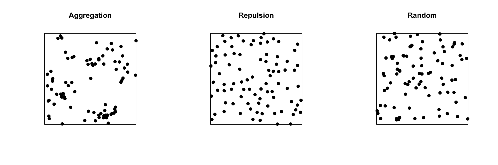
Version en français à la suite.
1 Spatial statistics in ecology
BIOS² hosted an online training session about statistical analysis of spatial data in ecology, led by Pr. Philippe Marchand (UQAT). This 12-hour training was conducted in 4 sessions: January 12, 14, 19 & 21 (2021) from 1:00 to 4:00 pm EST.
The content included three types of spatial statistical analyses and their applications to ecology: (1) point pattern analysis to study the distribution of individuals or events in space; (2) geostatistical models to represent the spatial correlation of variables sampled at geolocated points; and (3) areal data models, which apply to measurements taken on areas in space and model spatial relationships as networks of neighbouring regions. The training also included practical exercises using the R statistical programming environment.
Philippe Marchand is a professor in ecology and biostatistics at Institut de recherche sur les forêts, Université du Québec en Abitibi-Témiscamingue (UQAT) and BIOS² academic member. His research focuses on modeling processes that influence the spatial distribution of populations, including: seed dispersal and seedling establishment, animal movement, and the spread of forest diseases.
If you wish to consult the lesson materials and follow the exercises at your own pace, you can access them through this link. Basic knowledge of linear regression models and experience fitting them in R is recommended. Original repository can be found here.
Course outline
2 Introduction to spatial statistics
Types of spatial analyses
In this training, we will discuss three types of spatial analyses: point pattern analysis, geostatistical models and models for areal data.
In point pattern analysis, we have point data representing the position of individuals or events in a study area and we assume that all individuals or events have been identified in that area. That analysis focuses on the distribution of the positions of the points themselves. Here are some typical questions for the analysis of point patterns:
Are the points randomly arranged or clustered?
Are two types of points arranged independently?
Geostatistical models represent the spatial distribution of continuous variables that are measured at certain sampling points. They assume that measurements of those variables at different points are correlated as a function of the distance between the points. Applications of geostatistical models include the smoothing of spatial data (e.g., producing a map of a variable over an entire region based on point measurements) and the prediction of those variables for non-sampled points.
Areal data are measurements taken not at points, but for regions of space represented by polygons (e.g. administrative divisions, grid cells). Models representing these types of data define a network linking each region to its neighbours and include correlations in the variable of interest between neighbouring regions.
Stationarity and isotropy
Several spatial analyses assume that the variables are stationary in space. As with stationarity in the time domain, this property means that summary statistics (mean, variance and correlations between measures of a variable) do not vary with translation in space. For example, the spatial correlation between two points may depend on the distance between them, but not on their absolute position.
In particular, there cannot be a large-scale trend (often called gradient in a spatial context), or this trend must be taken into account before modelling the spatial correlation of residuals.
In the case of point pattern analysis, stationarity (also called homogeneity) means that point density does not follow a large-scale trend.
In a isotropic statistical model, the spatial correlations between measurements at two points depend only on the distance between the points, not on the direction. In this case, the summary statistics do not change under a spatial rotation of the data.
Georeferenced data
Environmental studies increasingly use data from geospatial data sources, i.e. variables measured over a large part of the globe (e.g. climate, remote sensing). The processing of these data requires concepts related to Geographic Information Systems (GIS), which are not covered in this workshop, where we focus on the statistical aspects of spatially varying data.
The use of geospatial data does not necessarily mean that spatial statistics are required. For example, we will often extract values of geographic variables at study points to explain a biological response observed in the field. In this case, the use of spatial statistics is only necessary when there is a spatial correlation in the residuals, after controlling for the effect of the predictors.
3 Point pattern analysis
Point pattern and point process
A point pattern describes the spatial position (most often in 2D) of individuals or events, represented by points, in a given study area, often called the observation “window”.
It is assumed that each point has a negligible spatial extent relative to the distances between the points. More complex methods exist to deal with spatial patterns of objects that have a non-negligible width, but this topic is beyond the scope of this workshop.
A point process is a statistical model that can be used to simulate point patterns or explain an observed point pattern.
Complete spatial randomness
Complete spatial randomness (CSR) is one of the simplest point patterns, which serves as a null model for evaluating the characteristics of real point patterns. In this pattern, the presence of a point at a given position is independent of the presence of points in a neighbourhood.
The process creating this pattern is a homogeneous Poisson process. According to this model, the number of points in any area \(A\) follows a Poisson distribution: \(N(A) \sim \text{Pois}(\lambda A)\), where \(\lambda\) is the intensity of the process (i.e. the density of points per unit area). \(N\) is independent between two disjoint regions, no matter how those regions are defined.
In the graph below, only the pattern on the right is completely random. The pattern on the left shows point aggregation (higher probability of observing a point close to another point), while the pattern in the center shows repulsion (low probability of observing a point very close to another).
Exploratory or inferential analysis for a point pattern
Several summary statistics are used to describe the characteristics of a point pattern. The simplest is the intensity \(\lambda\), which as mentioned above represents the density of points per unit area. If the point pattern is heterogeneous, the intensity is not constant, but depends on the position: \(\lambda(x, y)\).
Compared to intensity, which is a first-order statistic, second-order statistics describe how the probability of the presence of a point in a region depends on the presence of other points. The Ripley’s \(K\) function presented in the next section is an example of a second-order summary statistic.
Statistical inferences on point patterns usually consist of testing the hypothesis that the point pattern corresponds to a given null model, such as CSR or a more complex null model. Even for the simplest null models, we rarely know the theoretical distribution for a summary statistic of the point pattern under the null model. Hypothesis tests on point patterns are therefore performed by simulation: a large number of point patterns are simulated from the null model and the distribution of the summary statistics of interest for these simulations is compared to their values for the observed point pattern.
Ripley’s K function
Ripley’s K function \(K(r)\) is defined as the mean number of points within a circle of radius \(r\) around a point in the pattern, standardized by the intensity \(\lambda\).
Under the CSR null model, the mean number of points in any circle of radius \(r\) is \(\lambda \pi r^2\), thus in theory \(K(r) = \pi r^2\) for that model. A higher value of \(K(r)\) means that there is an aggregation of points at the scale \(r\), whereas a lower value means that there is repulsion.
In practice, \(K(r)\) is estimated for a specific point pattern by the equation:
\[ K(r) = \frac{A}{n(n-1)} \sum_i \sum_{j > i} I \left( d_{ij} \le r \right) w_{ij}\]
where \(A\) is the area of the observation window and \(n\) is the number of points in the pattern, so \(n(n-1)\) is the number of distinct pairs of points. We take the sum for all pairs of points of the indicator function \(I\), which takes a value of 1 if the distance between points \(i\) and \(j\) is less than or equal to \(r\). Finally, the term \(w_{ij}\) is used to give extra weight to certain pairs of points to account for edge effects, as discussed in the next section.
For example, the graphs below show the estimated \(K(r)\) function for the patterns shown above, for values of \(r\) up to 1/4 of the window width. The red dashed curve shows the theoretical value for CSR and the gray area is an “envelope” produced by 99 simulations of that null pattern. The aggregated pattern shows an excess of neighbours up to \(r = 0.25\) and the pattern with repulsion shows a significant deficit of neighbours for small values of \(r\).
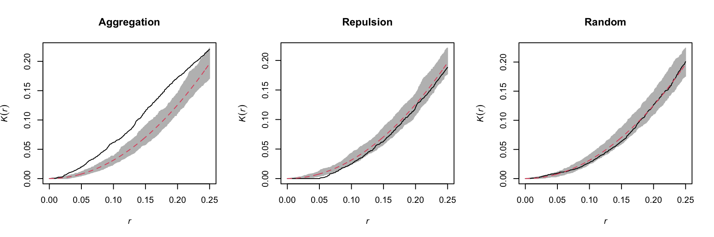
In addition to \(K\), there are other statistics to describe the second-order properties of point patterns, such as the mean distance between a point and its nearest \(N\) neighbours. You can refer to the Wiegand and Moloney (2013) textbook in the references to learn more about different summary statistics for point patterns.
Edge effects
In the context of point pattern analysis, edge effects are due to the fact that we have incomplete knowledge of the neighbourhood of points near the edge of the observation window, which can induce a bias in the calculation of statistics such as Ripley’s \(K\).
Different methods have been developed to correct the bias due to edge effects. In Ripley’s edge correction method, the contribution of a neighbour \(j\) located at a distance \(r\) from a point \(i\) receives a weight \(w_{ij} = 1/\phi_i(r)\), where \(\phi_i(r)\) is the fraction of the circle of radius \(r\) around \(i\) contained in the observation window. For example, if 2/3 of the circle is in the window, this neighbour counts as 3/2 neighbours in the calculation of a statistic like \(K\).

Ripley’s method is one of the simplest to correct for edge effects, but is not necessarily the most efficient; in particular, larger weights given to certain pairs of points tend to increase the variance of the calculated statistic. Other correction methods are presented in specialized textbooks, such as Wiegand and Moloney (2013).
Example
For this example, we use the dataset semis_xy.csv, which represents the \((x, y)\) coordinates for seedlings of two species (sp, B = birch and P = poplar) in a 15 x 15 m plot.
semis <- read.csv("data/semis_xy.csv")
head(semis) x y sp
1 14.73 0.05 P
2 14.72 1.71 P
3 14.31 2.06 P
4 14.16 2.64 P
5 14.12 4.15 B
6 9.88 4.08 BThe spatstat package provides tools for point pattern analysis in R. The first step consists in transforming our data frame into a ppp object (point pattern) with the function of the same name. In this function, we specify which columns contain the coordinates x and y as well as the marks, which here will be the species codes. We also need to specify an observation window (window) using the owin function, where we provide the plot limits in x and y.
library(spatstat)
semis <- ppp(x = semis$x, y = semis$y, marks = as.factor(semis$sp),
window = owin(xrange = c(0, 15), yrange = c(0, 15)))
semisMarked planar point pattern: 281 points
Multitype, with levels = B, P
window: rectangle = [0, 15] x [0, 15] unitsMarks can be numeric or categorical. Note that for categorical marks as is the case here, the variable must be explicitly converted to a factor.
The plot function applied to a point pattern shows a diagram of the pattern.
plot(semis)
The intensity function calculates the density of points of each species by unit area (here, by \(m^2\)).
intensity(semis) B P
0.6666667 0.5822222 To first analyze the distribution of each species separately, we split the pattern with split. Since the pattern contains categorical marks, it is automatically split according to the values of those marks. The result is a list of two point patterns.
semis_split <- split(semis)
plot(semis_split)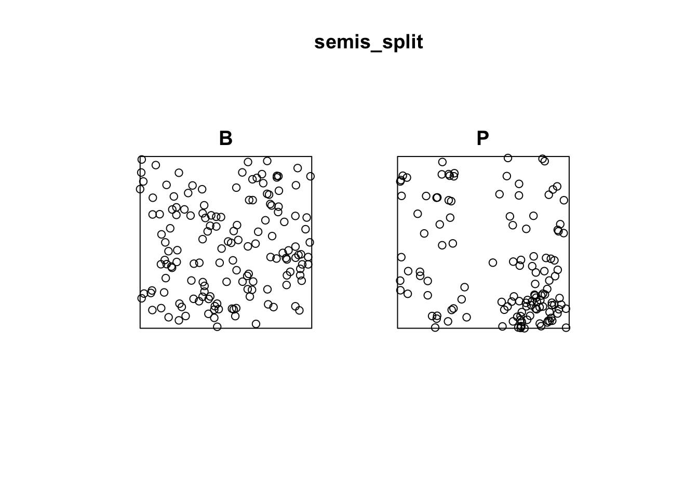
The Kest function calculates Ripley’s \(K\) for a series of distances up to (by default) 1/4 of the width of the window. Here we apply it to the first pattern (birch) by choosing semis_split[[1]]. Note that double square brackets are necessary to choose an item from a list in R.
The argument correction = "iso" tells the function to apply Ripley’s correction for edge effects.
k <- Kest(semis_split[[1]], correction = "iso")
plot(k)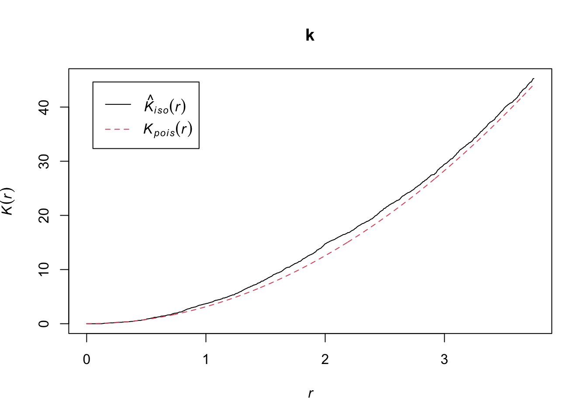
According to this graph, there seems to be an excess of neighbours for distances of 1 m and above. To check if this is a significant difference, we produce a simulation envelope with the envelope function. The first argument of envelope is a point pattern to which the simulations will be compared, the second one is a function to be computed (here, Kest) for each simulated pattern, then we add the arguments of the Kest function (here, only correction).
plot(envelope(semis_split[[1]], Kest, correction = "iso"))Generating 99 simulations of CSR ...
1, 2, 3, 4, 5, 6, 7, 8, 9, 10, 11, 12, 13, 14, 15, 16, 17, 18, 19, 20, 21, 22, 23, 24, 25, 26, 27, 28, 29, 30, 31, 32, 33, 34, 35, 36, 37, 38, 39, 40,
41, 42, 43, 44, 45, 46, 47, 48, 49, 50, 51, 52, 53, 54, 55, 56, 57, 58, 59, 60, 61, 62, 63, 64, 65, 66, 67, 68, 69, 70, 71, 72, 73, 74, 75, 76, 77, 78, 79, 80,
81, 82, 83, 84, 85, 86, 87, 88, 89, 90, 91, 92, 93, 94, 95, 96, 97, 98, 99.
Done.
As indicated by the message, by default the function performs 99 simulations of the null model corresponding to complete spatial randomness (CSR).
The observed curve falls outside the envelope of the 99 simulations near \(r = 2\). We must be careful not to interpret too quickly a result that is outside the envelope. Although there is about a 1% probability of obtaining a more extreme result under the null hypothesis at a given distance, the envelope is calculated for a large number of values of \(r\) and is not corrected for multiple comparisons. Thus, a significant difference for a very small range of values of \(r\) may be simply due to chance.
Exercise 1
Looking at the graph of the second point pattern (poplar seedlings), can you predict where Ripley’s \(K\) will be in relation to the null hypothesis of complete spatial randomness? Verify your prediction by calculating Ripley’s \(K\) for this point pattern in R.
Effect of heterogeneity
The graph below illustrates a heterogeneous point pattern, i.e. it shows an density gradient (more points on the left than on the right).
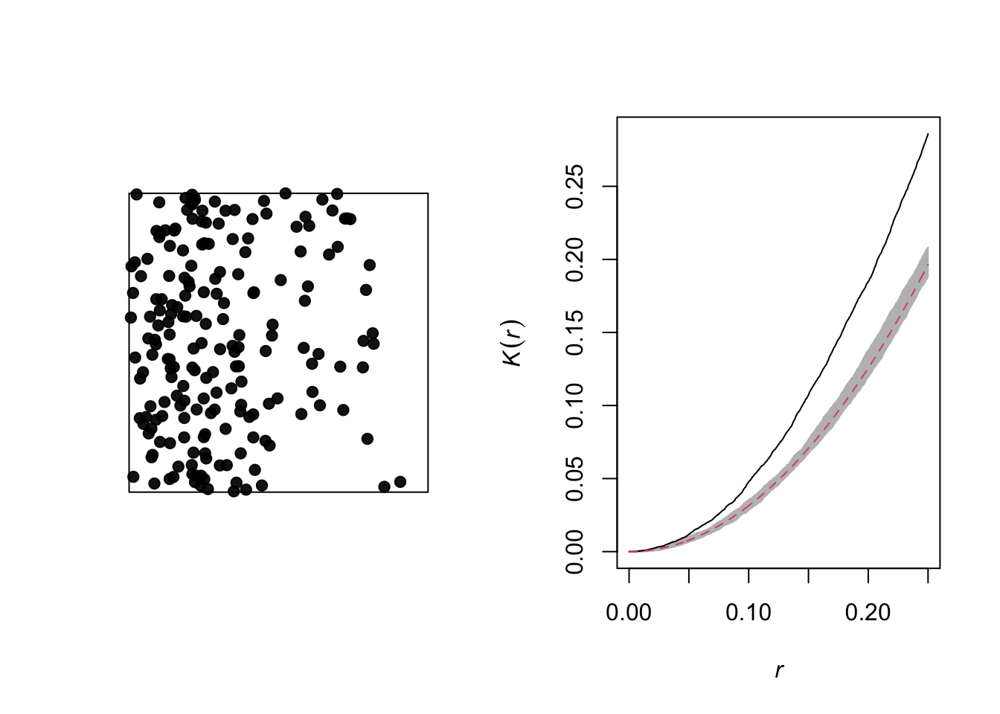
A density gradient can be confused with an aggregation of points, as can be seen on the graph of the corresponding Ripley’s \(K\). In theory, these are two different processes:
Heterogeneity: The density of points varies in the study area, for example due to the fact that certain local conditions are more favorable to the presence of the species of interest.
Aggregation: The mean density of points is homogeneous, but the presence of one point increases the presence of other points in its vicinity, for example due to positive interactions between individuals.
However, it may be difficult to differentiate between the two in practice, especially since some patterns may be both heterogeneous and aggregated.
Let’s take the example of the poplar seedlings from the previous exercise. The density function applied to a point pattern performs a kernel density estimation of the density of the seedlings across the plot. By default, this function uses a Gaussian kernel with a standard deviation sigma specified in the function, which determines the scale at which density fluctuations are “smoothed”. Here, we use a value of 2 m for sigma and we first represent the estimated density with plot, before overlaying the points (add = TRUE means that the points are added to the existing plot rather than creating a new plot).
dens_p <- density(semis_split[[2]], sigma = 2)
plot(dens_p)
plot(semis_split[[2]], add = TRUE)
To measure the aggregation or repulsion of points in a heterogeneous pattern, we must use the inhomogeneous version of the \(K\) statistic (Kinhom in spatstat). This statistic is still equal to the mean number of neighbours within a radius \(r\) of a point in the pattern, but rather than standardizing this number by the overall intensity of the pattern, it is standardized by the local estimated density. As above, we specify sigma = 2 to control the level of smoothing for the varying density estimate.
plot(Kinhom(semis_split[[2]], sigma = 2, correction = "iso"))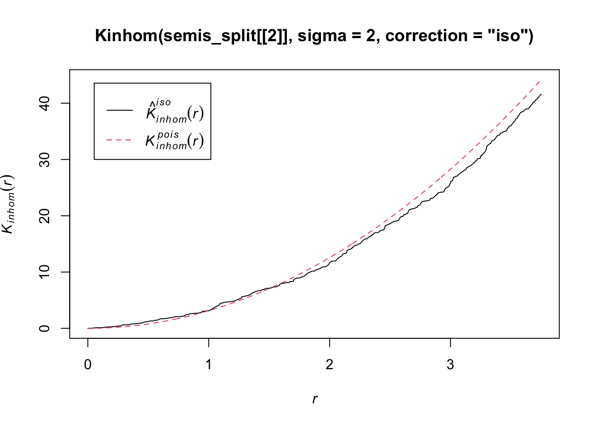
Taking into account the heterogeneity of the pattern at a scale sigma of 2 m, there seems to be a deficit of neighbours starting at a radius of about 1.5 m. We can now check whether this deviation is significant.
As before, we use envelope to simulate the Kinhom statistic under the null model. However, the null model here is not a homogeneous Poisson process (CSR). It is instead a heterogeneous Poisson process simulated by the function rpoispp(dens_p), i.e. the points are independent of each other, but their density is heterogeneous and given by dens_p. The simulate argument of the envelope function specifies the function used for simulations under the null model; this function must have one argument, here x, even if it is not used.
Finally, in addition to the arguments needed for Kinhom, i.e. sigma and correction, we also specify nsim = 199 to perform 199 simulations and nrank = 5 to eliminate the 5 most extreme results on each side of the envelope, i.e. the 10 most extreme results out of 199, to achieve an interval containing about 95% of the probability under the null hypothesis.
khet_p <- envelope(semis_split[[2]], Kinhom, sigma = 2, correction = "iso",
nsim = 199, nrank = 5, simulate = function(x) rpoispp(dens_p))Generating 199 simulations by evaluating function ...
1, 2, 3, 4.6.8.10.12.14.16.18.20.22.24.26.28.30.32.34.36.38.40
.42.44.46.48.50.52.54.56.58.60.62.64.66.68.70.72.74.76.78.80
.82.84.86.88.90.92.94.96.98.100.102.104.106.108.110.112.114.116.118.120
.122.124.126.128.130.132.134.136.138.140.142.144.146.148.150.152.154.156.158.160
.162.164.166.168.170.172.174.176.178.180.182.184.186.188.190.192.194.196.198 199.
Done.plot(khet_p)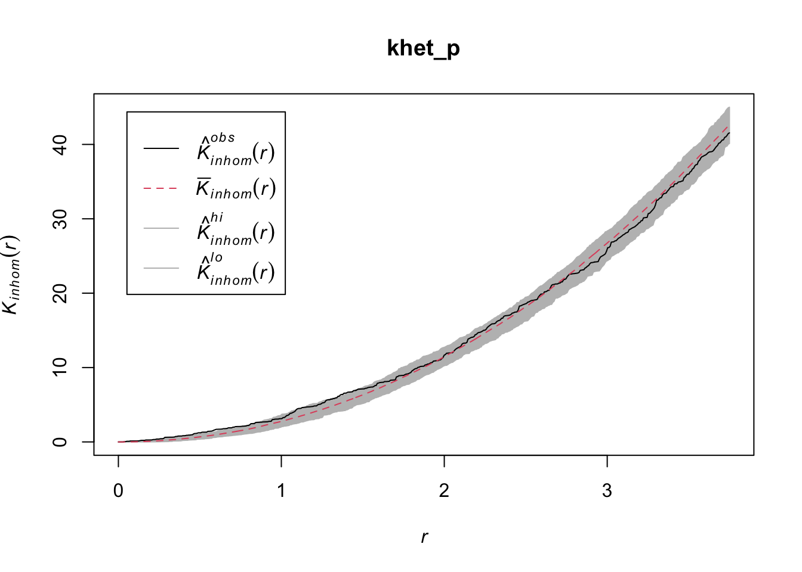
Note: For a hypothesis test based on simulations of a null hypothesis, the \(p\)-value is estimated by \((m + 1)/(n + 1)\), where \(n\) is the number of simulations and \(m\) is the number of simulations where the value of the statistic is more extreme than that of the observed data. This is why the number of simulations is often chosen to be 99, 199, etc.
Exercise 2
Repeat the heterogeneous density estimation and Kinhom calculation with a standard deviation sigma of 5 rather than 2. How does the smoothing level for the density estimation influence the conclusions?
To differentiate between a variation in the density of points from an interaction (aggregation or repulsion) between these points with this type of analysis, it is generally assumed that the two processes operate at different scales. Typically, we can test whether the points are aggregated at a small scale after accounting for a variation in density at a larger scale.
Relationship between two point patterns
Let’s consider a case where we have two point patterns, for example the position of trees of two species in a plot (orange and green points in the graph below). Each of the two patterns may or may not present an aggregation of points.
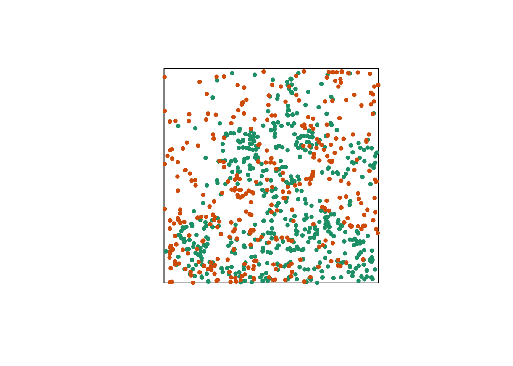
Regardless of whether points are aggregated at the species level, we want to determine whether the two species are arranged independently. In other words, does the probability of observing a tree of one species depend on the presence of a tree of the other species at a given distance?
The bivariate version of Ripley’s \(K\) allows us to answer this question. For two patterns noted 1 and 2, the function \(K_{12}(r)\) calculates the mean number of points in pattern 2 within a radius \(r\) from a point in pattern 1, standardized by the density of pattern 2.
In theory, this function is symmetrical, so \(K_{12}(r) = K_{21}(r)\) and the result would be the same whether the points of pattern 1 or 2 are chosen as “focal” points for the analysis. However, the estimation of the two quantities for an observed pattern may differ, in particular because of edge effects. The variance of \(K_{12}\) and \(K_{21}\) between simulations of a null model may also differ, so the null hypothesis test may have more or less power depending on the choice of the focal species.
The choice of an appropriate null model is important here. In order to determine whether there is a significant attraction or repulsion between the two patterns, the position of one of the patterns must be randomly moved relative to that of the other pattern, while keeping the spatial structure of each pattern taken in isolation.
One way to do this randomization is to shift one of the two patterns horizontally and/or vertically by a random distance. The part of the pattern that “comes out” on one side of the window is attached to the other side. This method is called a toroidal shift, because by connecting the top and bottom as well as the left and right of a rectangular surface, we obtain the shape of a torus (a three-dimensional “donut”).
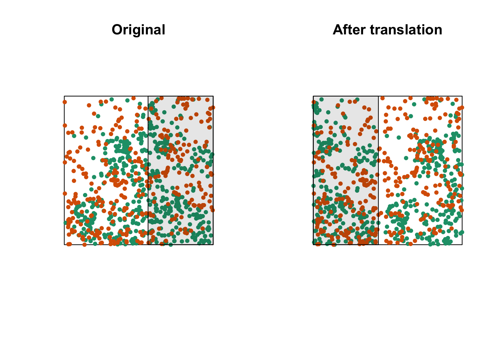
The graph above shows a translation of the green pattern to the right, while the orange pattern remains in the same place. The green points in the shaded area are brought back on the other side. Note that while this method generally preserves the structure of each pattern while randomizing their relative position, it can have some drawbacks, such as dividing point clusters that are near the cutoff point.
Let’s now check whether the position of the two species (birch and poplar) is independent in our plot. The function Kcross calculates the bivariate \(K_{ij}\), we must specify which type of point (mark) is considered as the focal species \(i\) and the neighbouring species \(j\).
plot(Kcross(semis, i = "P", j = "B", correction = "iso"))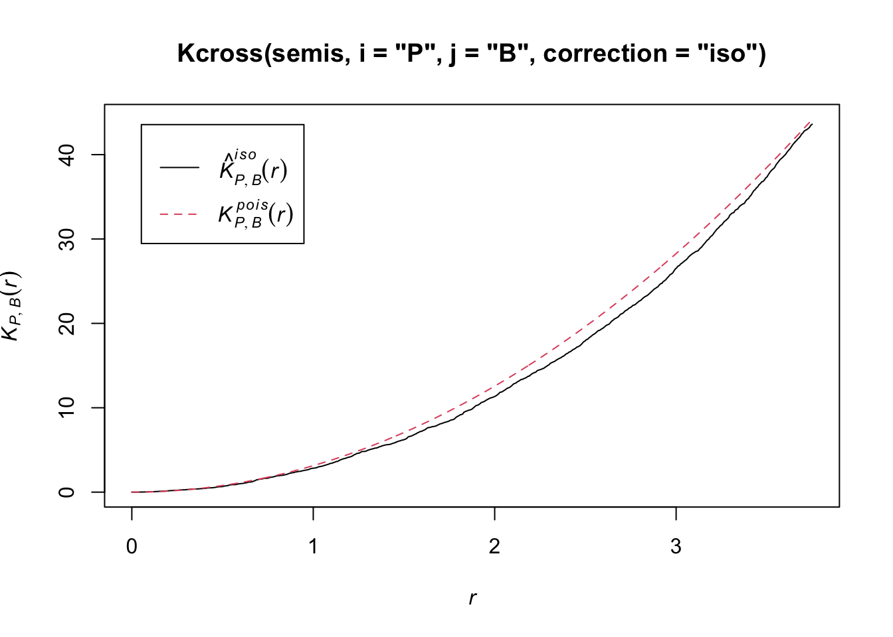
Here, the observed \(K\) is lower than the theoretical value, indicating a possible repulsion between the two patterns.
To determine the envelope of the \(K\) under the null hypothesis of independence of the two patterns, we must specify that the simulations are based on a translation of the patterns. We indicate that the simulations use the function rshift (random translation) with the argument simulate = function(x) rshift(x, which = "B"); here, the x argument in simulate corresponds to the original point pattern and the which argument indicates which of the patterns is translated. As in the previous case, the arguments needed for Kcross, i.e. i, j and correction, must be repeated in the envelope function.
plot(envelope(semis, Kcross, i = "P", j = "B", correction = "iso",
nsim = 199, nrank = 5, simulate = function(x) rshift(x, which = "B")))Generating 199 simulations by evaluating function ...
1, 2, 3, 4.6.8.10.12.14.16.18.20.22.24.26.28.30.32.34.36.38.40
.42.44.46.48.50.52.54.56.58.60.62.64.66.68.70.72.74.76.78.80
.82.84.86.88.90.92.94.96.98.100.102.104.106.108.110.112.114.116.118.120
.122.124.126.128.130.132.134.136.138.140.142.144.146.148.150.152.154.156.158.160
.162.164.166.168.170.172.174.176.178.180.182.184.186.188.190.192.194.196.198 199.
Done.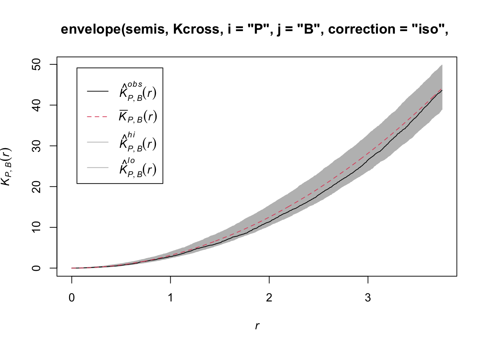
Here, the observed curve is totally within the envelope, so we do not reject the null hypothesis of independence of the two patterns.
Questions
What would be one reason for our choice to translate the points of the birch rather than poplar?
Would the simulations generated by random translation be a good null model if the two patterns were heterogeneous?
Marked point patterns
The fir.csv dataset contains the \((x, y)\) coordinates of 822 fir trees in a 1 hectare plot and their status (A = alive, D = dead) following a spruce budworm outbreak.
fir <- read.csv("data/fir.csv")
head(fir) x y status
1 31.50 1.00 A
2 85.25 30.75 D
3 83.50 38.50 A
4 84.00 37.75 A
5 83.00 33.25 A
6 33.25 0.25 Afir <- ppp(x = fir$x, y = fir$y, marks = as.factor(fir$status),
window = owin(xrange = c(0, 100), yrange = c(0, 100)))
plot(fir)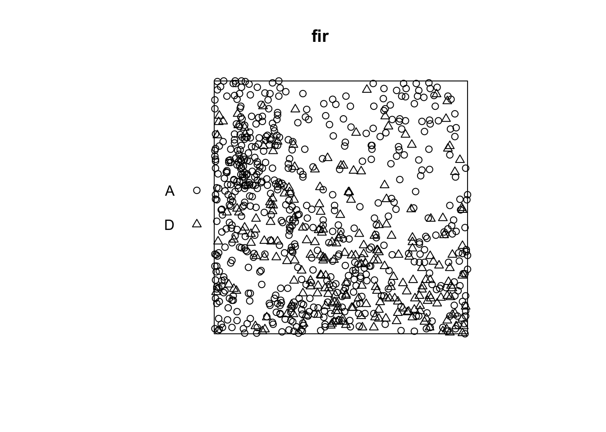
Suppose that we want to check whether fir mortality is independent or correlated between neighbouring trees. How does this question differ from the previous example, where we wanted to know if the position of the points of two species was independent?
In the previous example, the independence or interaction between the species referred to the formation of the pattern itself (whether or not seedlings of one species establish near those of the other species). Here, the characteristic of interest (survival) occurs after the establishment of the pattern, assuming that all those trees were alive at first and that some died as a result of the outbreak. So we take the position of the trees as fixed and we want to know whether the distribution of status (dead, alive) among those trees is random or shows a spatial pattern.
In Wiegand and Moloney’s textbook, the first situation (establishment of seedlings of two species) is called a bivariate pattern, so it is really two interacting patterns, while the second is a single pattern with a qualitative mark. The spatstat package in R does not differentiate between the two in terms of pattern definition (types of points are always represented by the marks argument), but the analysis methods applied to the two questions differ.
In the case of a pattern with a qualitative mark, we can define a mark connection function \(p_{ij}(r)\). For two points separated by a distance \(r\), this function gives the probability that the first point has the mark \(i\) and the second the mark \(j\). Under the null hypothesis where the marks are independent, this probability is equal to the product of the proportions of each mark in the entire pattern, \(p_{ij}(r) = p_i p_j\) independently of \(r\).
In spatstat, the mark connection function is computed with the markconnect function, where the marks \(i\) and \(j\) and the type of edge correction must be specified. In our example, we see that two closely spaced points are less likely to have a different status (A and D) than expected under the assumption of random and independent distribution of marks (red dotted line).
plot(markconnect(fir, i = "A", j = "D", correction = "iso"))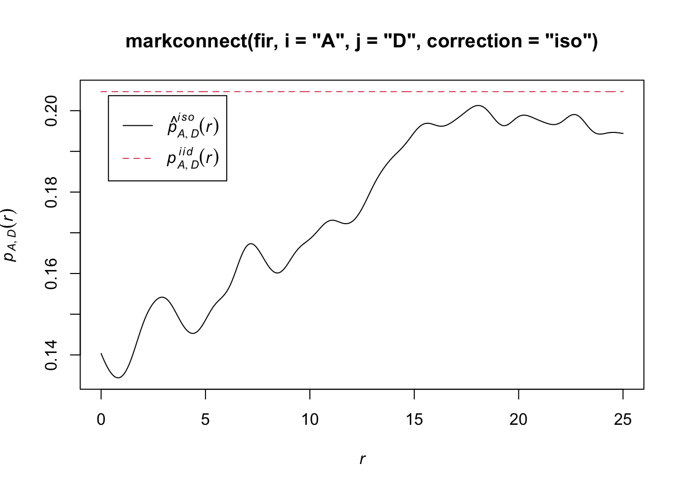
In this graph, the fluctuations in the function are due to the estimation error of a continuous \(r\) function from a limited number of discrete point pairs.
To simulate the null model in this case, we use the rlabel function, which randomly reassigns the marks among the points of the pattern, keeping the points’ positions fixed.
plot(envelope(fir, markconnect, i = "A", j = "D", correction = "iso",
nsim = 199, nrank = 5, simulate = rlabel))Generating 199 simulations by evaluating function ...
1, 2, 3, 4.6.8.10.12.14.16.18.20.22.24.26.28.30.32.34.36.38.40
.42.44.46.48.50.52.54.56.58.60.62.64.66.68.70.72.74.76.78.80
.82.84.86.88.90.92.94.96.98.100.102.104.106.108.110.112.114.116.118.120
.122.124.126.128.130.132.134.136.138.140.142.144.146.148.150.152.154.156.158.160
.162.164.166.168.170.172.174.176.178.180.182.184.186.188.190.192.194.196.198 199.
Done.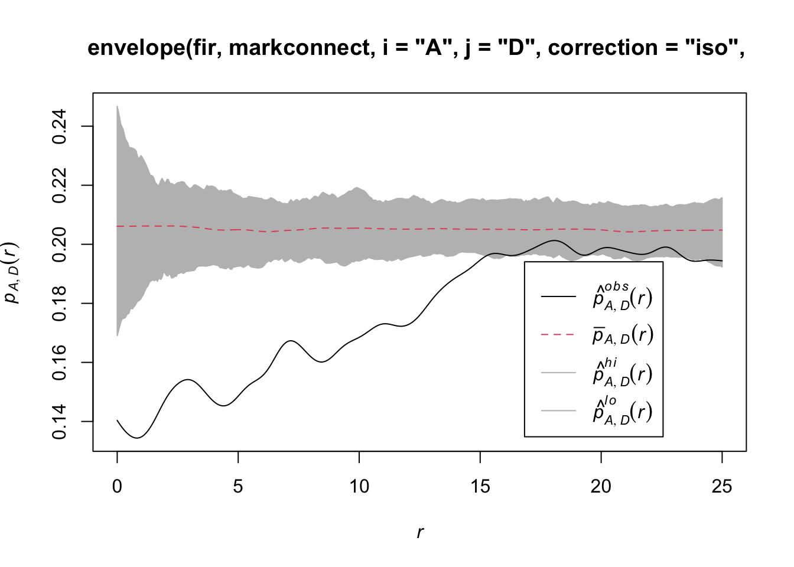
Note that since the rlabel function has only one required argument corresponding to the original point pattern, it was not necessary to specify: simulate = function(x) rlabel(x).
Here are the results for tree pairs of the same status A or D:
par(mfrow = c(1, 2))
plot(envelope(fir, markconnect, i = "A", j = "A", correction = "iso",
nsim = 199, nrank = 5, simulate = rlabel))Generating 199 simulations by evaluating function ...
1, 2, 3, 4.6.8.10.12.14.16.18.20.22.24.26.28.30.32.34.36.38.40
.42.44.46.48.50.52.54.56.58.60.62.64.66.68.70.72.74.76.78.80
.82.84.86.88.90.92.94.96.98.100.102.104.106.108.110.112.114.116.118.120
.122.124.126.128.130.132.134.136.138.140.142.144.146.148.150.152.154.156.158.160
.162.164.166.168.170.172.174.176.178.180.182.184.186.188.190.192.194.196.198 199.
Done.plot(envelope(fir, markconnect, i = "D", j = "D", correction = "iso",
nsim = 199, nrank = 5, simulate = rlabel))Generating 199 simulations by evaluating function ...
1, 2, 3, 4.6.8.10.12.14.16.18.20.22.24.26.28.30.32.34.36.38.40
.42.44.46.48.50.52.54.56.58.60.62.64.66.68.70.72.74.76.78.80
.82.84.86.88.90.92.94.96.98.100.102.104.106.108.110.112.114.116.118.120
.122.124.126.128.130.132.134.136.138.140.142.144.146.148.150.152.154.156.158.160
.162.164.166.168.170.172.174.176.178.180.182.184.186.188.190.192.194.196.198 199.
Done.
It therefore appears that fir mortality due to this outbreak is spatially aggregated, since trees located in close proximity to each other have a greater probability of sharing the same status than predicted by the null hypothesis.
References
Fortin, M.-J. and Dale, M.R.T. (2005) Spatial Analysis: A Guide for Ecologists. Cambridge University Press: Cambridge, UK.
Wiegand, T. and Moloney, K.A. (2013) Handbook of Spatial Point-Pattern Analysis in Ecology, CRC Press.
The dataset in the last example is a subet of the Lake Duparquet Research and Teaching Forest (LDRTF) data, available on Dryad here.
4 Solutions
Exercise 1
plot(envelope(semis_split[[2]], Kest, correction = "iso"))Generating 99 simulations of CSR ...
1, 2, 3, 4, 5, 6, 7, 8, 9, 10, 11, 12, 13, 14, 15, 16, 17, 18, 19, 20, 21, 22, 23, 24, 25, 26, 27, 28, 29, 30, 31, 32, 33, 34, 35, 36, 37, 38, 39, 40,
41, 42, 43, 44, 45, 46, 47, 48, 49, 50, 51, 52, 53, 54, 55, 56, 57, 58, 59, 60, 61, 62, 63, 64, 65, 66, 67, 68, 69, 70, 71, 72, 73, 74, 75, 76, 77, 78, 79, 80,
81, 82, 83, 84, 85, 86, 87, 88, 89, 90, 91, 92, 93, 94, 95, 96, 97, 98, 99.
Done.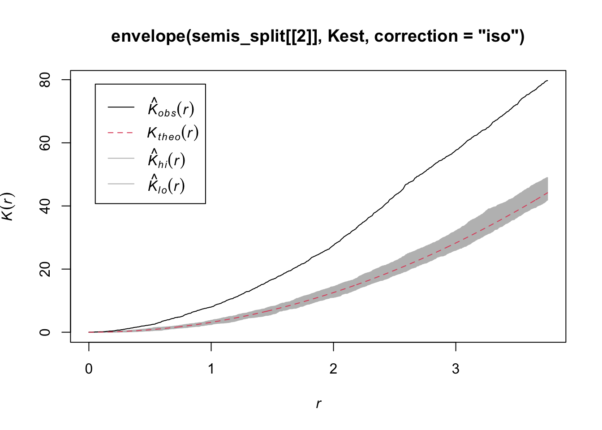
Poplar seedlings seem to be significantly aggregated according to the \(K\) function.
Exercise 2
dens_p <- density(semis_split[[2]], sigma = 5)
plot(dens_p)
plot(semis_split[[2]], add = TRUE)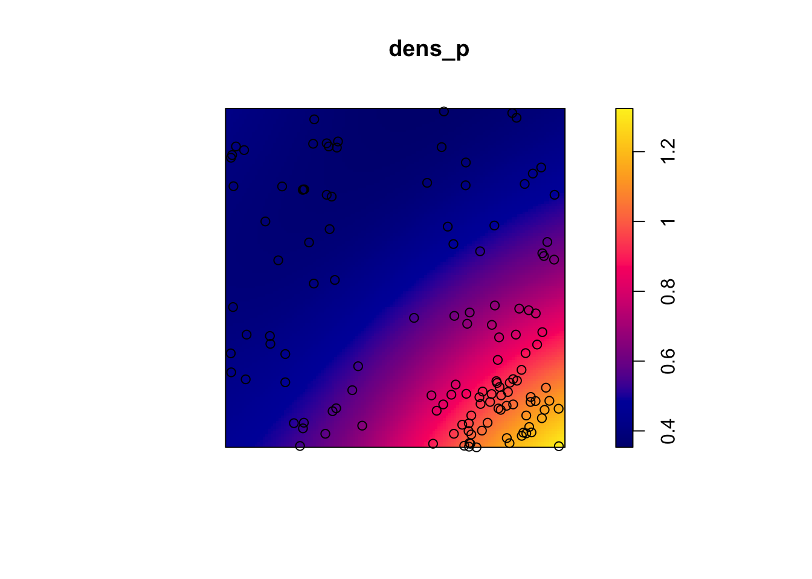
khet_p <- envelope(semis_split[[2]], Kinhom, sigma = 5, correction = "iso",
nsim = 199, nrank = 5, simulate = function(x) rpoispp(dens_p))Generating 199 simulations by evaluating function ...
1, 2, 3, 4.6.8.10.12.14.16.18.20.22.24.26.28.30.32.34.36.38.40
.42.44.46.48.50.52.54.56.58.60.62.64.66.68.70.72.74.76.78.80
.82.84.86.88.90.92.94.96.98.100.102.104.106.108.110.112.114.116.118.120
.122.124.126.128.130.132.134.136.138.140.142.144.146.148.150.152.154.156.158.160
.162.164.166.168.170.172.174.176.178.180.182.184.186.188.190.192.194.196.198 199.
Done.plot(khet_p)
Here, as we estimate density variations at a larger scale, even after accounting for this variation, the poplar seedlings seem to be aggregated at a small scale.
5 Spatial correlation of a variable
Correlation between measurements of a variable taken at nearby points often occurs in environmental data. This principle is sometimes referred to as the “first law of geography” and is expressed in the following quote from Waldo Tobler: “Everything is related to everything else, but near things are more related than distant things”.
In statistics, we often refer to autocorrelation as the correlation between measurements of the same variable taken at different times (temporal autocorrelation) or places (spatial autocorrelation).
Intrinsic or induced dependence
There are two basic types of spatial dependence on a measured variable \(y\): an intrinsic dependence on \(y\), or a dependence induced by external variables influencing \(y\), which are themselves spatially correlated.
For example, suppose that the abundance of a species is correlated between two sites located near each other:
this spatial dependence can be induced if it is due to a spatial correlation of habitat factors that are favorable or unfavorable to the species;
or it can be intrinsic if it is due to the dispersion of individuals to nearby sites.
In many cases, both types of dependence affect a given variable.
If the dependence is simply induced and the external variables that cause it are included in the model explaining \(y\), then the model residuals will be independent and we can use all the methods already seen that ignore spatial correlation.
However, if the dependence is intrinsic or due to unmeasured external factors, then the spatial correlation of the residuals in the model will have to be taken into account.
Different ways to model spatial effects
In this training, we will directly model the spatial correlations of our data. It is useful to compare this approach to other ways of including spatial aspects in a statistical model.
First, we could include predictors in the model that represent position (e.g., longitude, latitude). Such predictors may be useful for detecting a systematic large-scale trend or gradient, whether or not the trend is linear (e.g., with a generalized additive model).
In contrast to this approach, the models we will see now serve to model a spatial correlation in the random fluctuations of a variable (i.e., in the residuals after removing any systematic effect).
Mixed models use random effects to represent the non-independence of data on the basis of their grouping, i.e., after accounting for systematic fixed effects, data from the same group are more similar (their residual variation is correlated) than data from different groups. These groups were sometimes defined according to spatial criteria (observations grouped into sites).
However, in the context of a random group effect, all groups are as different from each other, e.g., two sites within 100 km of each other are no more or less similar than two sites 2 km apart.
The methods we will see here and in the next parts of the training therefore allow us to model non-independence on a continuous scale (closer = more correlated) rather than just discrete (hierarchy of groups).
6 Geostatistical models
Geostatistics refers to a group of techniques that originated in the earth sciences. Geostatistics is concerned with variables that are continuously distributed in space and where a number of points are sampled to estimate this distribution. A classic example of these techniques comes from the mining field, where the aim was to create a map of the concentration of ore at a site from samples taken at different points on the site.
For these models, we will assume that \(z(x, y)\) is a stationary spatial variable measured at points with coordinates \(x\) and \(y\).
Variogram
A central aspect of geostatistics is the estimation of the variogram \(\gamma_z\) . The variogram is equal to half the mean square difference between the values of \(z\) for two points \((x_i, y_i)\) and \((x_j, y_j)\) separated by a distance \(h\).
\[\gamma_z(h) = \frac{1}{2} \text{E} \left[ \left( z(x_i, y_i) - z(x_j, y_j) \right)^2 \right]_{d_{ij} = h}\]
In this equation, the \(\text{E}\) function with the index \(d_{ij}=h\) designates the statistical expectation (i.e., the mean) of the squared deviation between the values of \(z\) for points separated by a distance \(h\).
If we want instead to express the autocorrelation \(\rho_z(h)\) between measures of \(z\) separated by a distance \(h\), it is related to the variogram by the equation:
\[\gamma_z = \sigma_z^2(1 - \rho_z)\] ,
where \(\sigma_z^2\) is the global variance of \(z\).
Note that \(\gamma_z = \sigma_z^2\) when we reach a distance where the measurements of \(z\) are independent, so \(\rho_z = 0\). In this case, we can see that \(\gamma_z\) is similar to a variance, although it is sometimes called “semivariogram” or “semivariance” because of the 1/2 factor in the above equation.
Theoretical models for the variogram
Several parametric models have been proposed to represent the spatial correlation as a function of the distance between sampling points. Let us first consider a correlation that decreases exponentially:
\[\rho_z(h) = e^{-h/r}\]
Here, \(\rho_z = 1\) for \(h = 0\) and the correlation is multiplied by \(1/e \approx 0.37\) each time the distance increases by \(r\). In this context, \(r\) is called the range of the correlation.
From the above equation, we can calculate the corresponding variogram.
\[\gamma_z(h) = \sigma_z^2 (1 - e^{-h/r})\]
Here is a graphical representation of this variogram.
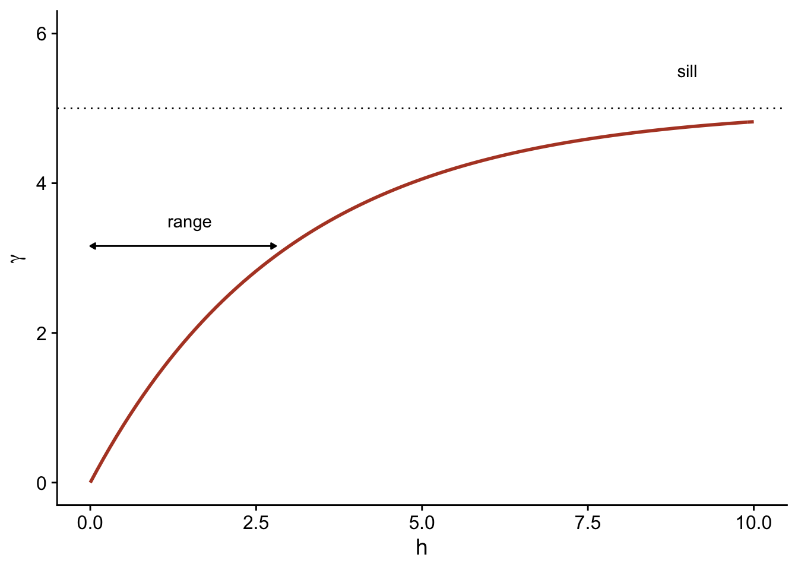
Because of the exponential function, the value of \(\gamma\) at large distances approaches the global variance \(\sigma_z^2\) without exactly reaching it. This asymptote is called a sill in the geostatistical context and is represented by the symbol \(s\).
Finally, it is sometimes unrealistic to assume a perfect correlation when the distance tends towards 0, because of a possible variation of \(z\) at a very small scale. A nugget effect, denoted \(n\), can be added to the model so that \(\gamma\) approaches \(n\) (rather than 0) if \(h\) tends towards 0. The term nugget comes from the mining origin of these techniques, where a nugget could be the source of a sudden small-scale variation in the concentration of a mineral.
By adding the nugget effect, the remainder of the variogram is “compressed” to keep the same sill, resulting in the following equation.
\[\gamma_z(h) = n + (s - n) (1 - e^{-h/r})\]
In the gstat package that we use below, the term \((s-n)\) is called a partial sill or psill for the exponential portion of the variogram.
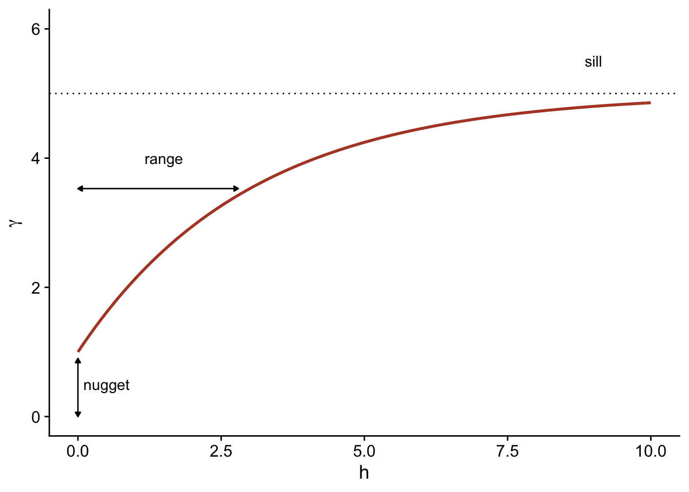
In addition to the exponential model, two other common theoretical models for the variogram are the Gaussian model (where the correlation follows a half-normal curve), and the spherical model (where the variogram increases linearly at the start and then curves and reaches the plateau at a distance equal to its range \(r\)). The spherical model thus allows the correlation to be exactly 0 at large distances, rather than gradually approaching zero in the case of the other models.
| Model | \(\rho(h)\) | \(\gamma(h)\) |
|---|---|---|
| Exponential | \(\exp\left(-\frac{h}{r}\right)\) | \(s \left(1 - \exp\left(-\frac{h}{r}\right)\right)\) |
| Gaussian | \(\exp\left(-\frac{h^2}{r^2}\right)\) | \(s \left(1 - \exp\left(-\frac{h^2}{r^2}\right)\right)\) |
| Spherical \((h < r)\) * | \(1 - \frac{3}{2}\frac{h}{r} + \frac{1}{2}\frac{h^3}{r^3}\) | \(s \left(\frac{3}{2}\frac{h}{r} - \frac{1}{2}\frac{h^3}{r^3} \right)\) |
* For the spherical model, \(\rho = 0\) and \(\gamma = s\) if \(h \ge r\).
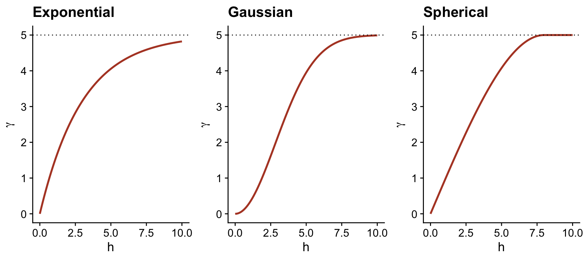
Empirical variogram
To estimate \(\gamma_z(h)\) from empirical data, we need to define distance classes, thus grouping different distances within a margin of \(\pm \delta\) around a distance \(h\), then calculating the mean square deviation for the pairs of points in that distance class.
\[\hat{\gamma_z}(h) = \frac{1}{2 N_{\text{paires}}} \sum \left[ \left( z(x_i, y_i) - z(x_j, y_j) \right)^2 \right]_{d_{ij} = h \pm \delta}\]
We will see in the next section how to estimate a variogram in R.
Regression model with spatial correlation
The following equation represents a multiple linear regression including residual spatial correlation:
\[v = \beta_0 + \sum_i \beta_i u_i + z + \epsilon\]
Here, \(v\) designates the response variable and \(u\) the predictors, to avoid confusion with the spatial coordinates \(x\) and \(y\).
In addition to the residual \(\epsilon\) that is independent between observations, the model includes a term \(z\) that represents the spatially correlated portion of the residual variance.
Here are suggested steps to apply this type of model:
Fit the regression model without spatial correlation.
Verify the presence of spatial correlation from the empirical variogram of the residuals.
Fit one or more regression models with spatial correlation and select the one that shows the best fit to the data.
7 Geostatistical models in R
The gstat package contains functions related to geostatistics. For this example, we will use the oxford dataset from this package, which contains measurements of physical and chemical properties for 126 soil samples from a site, along with their coordinates XCOORD and YCOORD.
library(gstat)
data(oxford)
str(oxford)'data.frame': 126 obs. of 22 variables:
$ PROFILE : num 1 2 3 4 5 6 7 8 9 10 ...
$ XCOORD : num 100 100 100 100 100 100 100 100 100 100 ...
$ YCOORD : num 2100 2000 1900 1800 1700 1600 1500 1400 1300 1200 ...
$ ELEV : num 598 597 610 615 610 595 580 590 598 588 ...
$ PROFCLASS: Factor w/ 3 levels "Cr","Ct","Ia": 2 2 2 3 3 2 3 2 3 3 ...
$ MAPCLASS : Factor w/ 3 levels "Cr","Ct","Ia": 2 3 3 3 3 2 2 3 3 3 ...
$ VAL1 : num 3 3 4 4 3 3 4 4 4 3 ...
$ CHR1 : num 3 3 3 3 3 2 2 3 3 3 ...
$ LIME1 : num 4 4 4 4 4 0 2 1 0 4 ...
$ VAL2 : num 4 4 5 8 8 4 8 4 8 8 ...
$ CHR2 : num 4 4 4 2 2 4 2 4 2 2 ...
$ LIME2 : num 4 4 4 5 5 4 5 4 5 5 ...
$ DEPTHCM : num 61 91 46 20 20 91 30 61 38 25 ...
$ DEP2LIME : num 20 20 20 20 20 20 20 20 40 20 ...
$ PCLAY1 : num 15 25 20 20 18 25 25 35 35 12 ...
$ PCLAY2 : num 10 10 20 10 10 20 10 20 10 10 ...
$ MG1 : num 63 58 55 60 88 168 99 59 233 87 ...
$ OM1 : num 5.7 5.6 5.8 6.2 8.4 6.4 7.1 3.8 5 9.2 ...
$ CEC1 : num 20 22 17 23 27 27 21 14 27 20 ...
$ PH1 : num 7.7 7.7 7.5 7.6 7.6 7 7.5 7.6 6.6 7.5 ...
$ PHOS1 : num 13 9.2 10.5 8.8 13 9.3 10 9 15 12.6 ...
$ POT1 : num 196 157 115 172 238 164 312 184 123 282 ...Suppose that we want to model the magnesium concentration (MG1), represented as a function of the spatial position in the following graph.
library(ggplot2)
ggplot(oxford, aes(x = YCOORD, y = XCOORD, size = MG1)) +
geom_point() +
coord_fixed()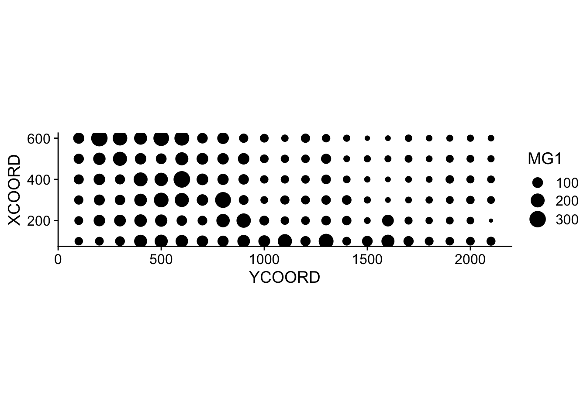
Note that the \(x\) and \(y\) axes have been inverted to save space. The coord_fixed() function of ggplot2 ensures that the scale is the same on both axes, which is useful for representing spatial data.
We can immediately see that these measurements were taken on a 100 m grid. It seems that the magnesium concentration is spatially correlated, although it may be a correlation induced by another variable. In particular, we know that the concentration of magnesium is negatively related to the soil pH (PH1).
ggplot(oxford, aes(x = PH1, y = MG1)) +
geom_point()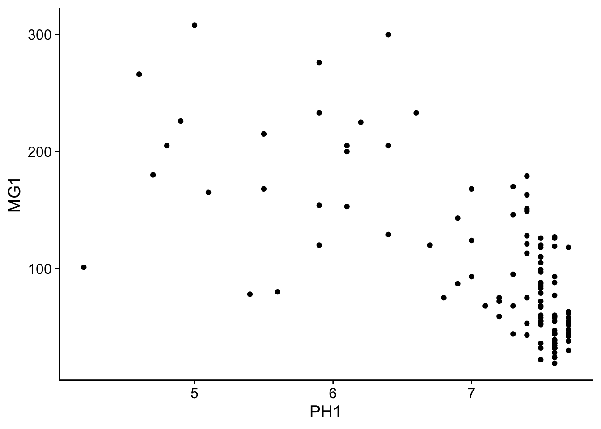
The variogram function of gstat is used to estimate a variogram from empirical data. Here is the result obtained for the variable MG1.
var_mg <- variogram(MG1 ~ 1, locations = ~ XCOORD + YCOORD, data = oxford)
var_mg np dist gamma dir.hor dir.ver id
1 225 100.0000 1601.404 0 0 var1
2 200 141.4214 1950.805 0 0 var1
3 548 215.0773 2171.231 0 0 var1
4 623 303.6283 2422.245 0 0 var1
5 258 360.5551 2704.366 0 0 var1
6 144 400.0000 2948.774 0 0 var1
7 570 427.5569 2994.621 0 0 var1
8 291 500.0000 3402.058 0 0 var1
9 366 522.8801 3844.165 0 0 var1
10 200 577.1759 3603.060 0 0 var1
11 458 619.8400 3816.595 0 0 var1
12 90 670.8204 3345.739 0 0 var1The formula MG1 ~ 1 indicates that no linear predictor is included in this model, while the argument locations indicates which variables in the data frame correspond to the spatial coordinates.
In the resulting table, gamma is the value of the variogram for the distance class centered on dist, while np is the number of pairs of points in that class. Here, since the points are located on a grid, we obtain regular distance classes (e.g.: 100 m for neighboring points on the grid, 141 m for diagonal neighbors, etc.).
Here, we limit ourselves to the estimation of isotropic variograms, i.e. the variogram depends only on the distance between the two points and not on the direction. Although we do not have time to see it today, it is possible with gstat to estimate the variogram separately in different directions.
We can illustrate the variogram with plot.
plot(var_mg, col = "black")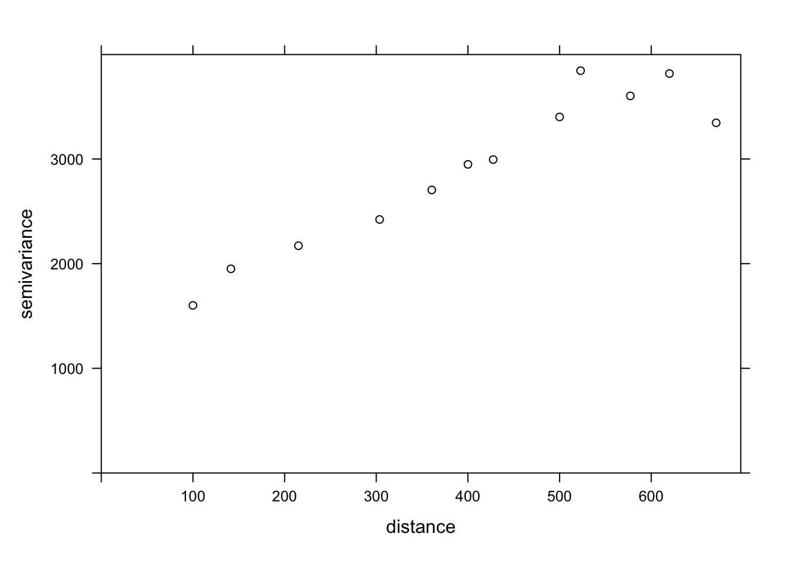
If we want to estimate the residual spatial correlation of MG1 after including the effect of PH1, we can add that predictor to the formula.
var_mg <- variogram(MG1 ~ PH1, locations = ~ XCOORD + YCOORD, data = oxford)
plot(var_mg, col = "black")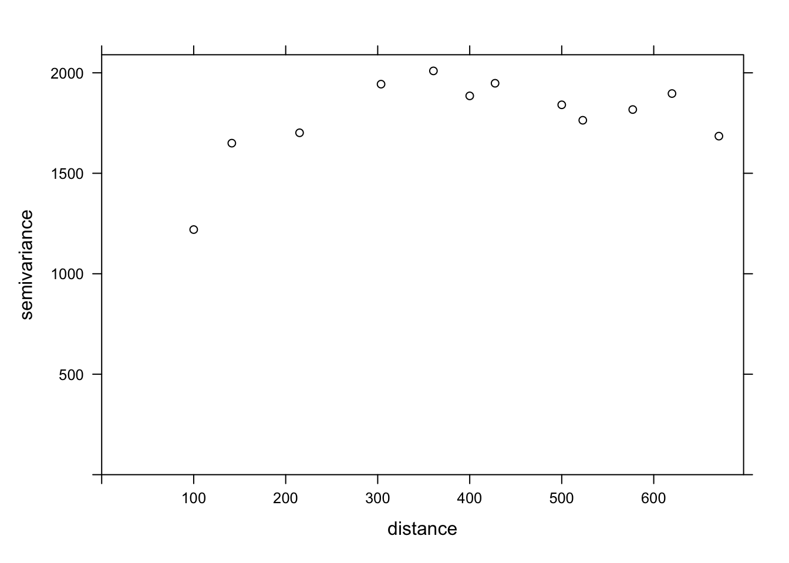
Including the effect of pH, the range of the spatial correlation seems to decrease, while the plateau is reached around 300 m. It even seems that the variogram decreases beyond 400 m. In general, we assume that the variance between two points does not decrease with distance, unless there is a periodic spatial pattern.
The function fit.variogram accepts as arguments a variogram estimated from the data, as well as a theoretical model described in a vgm function, and then estimates the parameters of that model according to the data. The fitting is done by the method of least squares.
For example, vgm("Exp") means we want to fit an exponential model.
vfit <- fit.variogram(var_mg, vgm("Exp"))
vfit model psill range
1 Nug 0.000 0.00000
2 Exp 1951.496 95.11235There is no nugget effect, because psill = 0 for the Nug (nugget) part of the model. The exponential part has a sill at 1951 and a range of 95 m.
To compare different models, a vector of model names can be given to vgm. In the following example, we include the exponential, gaussian (“Gau”) and spherical (“Sph”) models.
vfit <- fit.variogram(var_mg, vgm(c("Exp", "Gau", "Sph")))
vfit model psill range
1 Nug 0.000 0.00000
2 Exp 1951.496 95.11235The function gives us the result of the model with the best fit (lowest sum of squared deviations), which here is the same exponential model.
Finally, we can superimpose the theoretical model and the empirical variogram on the same graph.
plot(var_mg, vfit, col = "black")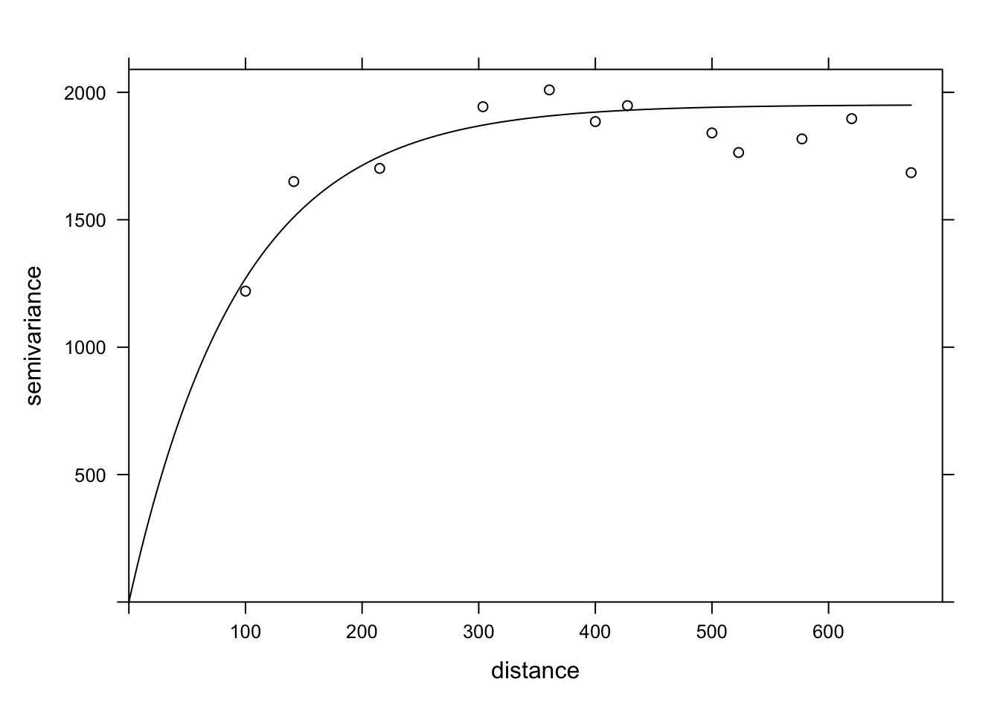
Regression with spatial correlation
We have seen above that the gstat package allows us to estimate the variogram of the residuals of a linear model. In our example, the magnesium concentration was modeled as a function of pH, with spatially correlated residuals.
Another tool to fit this same type of model is the gls function of the nlme package, which is included with the installation of R.
This function applies the generalized least squares method to fit linear regression models when the residuals are not independent or when the residual variance is not the same for all observations. Since the estimates of the coefficients depend on the estimated correlations between the residuals and the residuals themselves depend on the coefficients, the model is fitted by an iterative algorithm:
A classical linear regression model (without correlation) is fitted to obtain residuals.
The spatial correlation model (variogram) is fitted with those residuals.
The regression coefficients are re-estimated, now taking into account the correlations.
Steps 2 and 3 are repeated until the estimates are stable at a desired precision.
Here is the application of this method to the same model for the magnesium concentration in the oxford dataset. In the correlation argument of gls, we specify an exponential correlation model as a function of our spatial coordinates and we include a possible nugget effect.
In addition to the exponential correlation corExp, the gls function can also estimate a Gaussian (corGaus) or spherical (corSpher) model.
library(nlme)
gls_mg <- gls(MG1 ~ PH1, oxford,
correlation = corExp(form = ~ XCOORD + YCOORD, nugget = TRUE))
summary(gls_mg)Generalized least squares fit by REML
Model: MG1 ~ PH1
Data: oxford
AIC BIC logLik
1278.65 1292.751 -634.325
Correlation Structure: Exponential spatial correlation
Formula: ~XCOORD + YCOORD
Parameter estimate(s):
range nugget
478.0322964 0.2944753
Coefficients:
Value Std.Error t-value p-value
(Intercept) 391.1387 50.42343 7.757084 0
PH1 -41.0836 6.15662 -6.673079 0
Correlation:
(Intr)
PH1 -0.891
Standardized residuals:
Min Q1 Med Q3 Max
-2.1846957 -0.6684520 -0.3687813 0.4627580 3.1918604
Residual standard error: 53.8233
Degrees of freedom: 126 total; 124 residualTo compare this result with the adjusted variogram above, the parameters given by gls must be transformed. The range has the same meaning in both cases and corresponds to 478 m for the result of gls. The global variance of the residuals is the square of Residual standard error. The nugget effect here (0.294) is expressed as a fraction of that variance. Finally, to obtain the partial sill of the exponential part, the nugget effect must be subtracted from the total variance.
After performing these calculations, we can give these parameters to the vgm function of gstat to superimpose this variogram estimated by gls on our variogram of the residuals of the classical linear model.
gls_range <- 478
gls_var <- 53.823^2
gls_nugget <- 0.294 * gls_var
gls_psill <- gls_var - gls_nugget
gls_vgm <- vgm("Exp", psill = gls_psill, range = gls_range, nugget = gls_nugget)
plot(var_mg, gls_vgm, col = "black", ylim = c(0, 4000))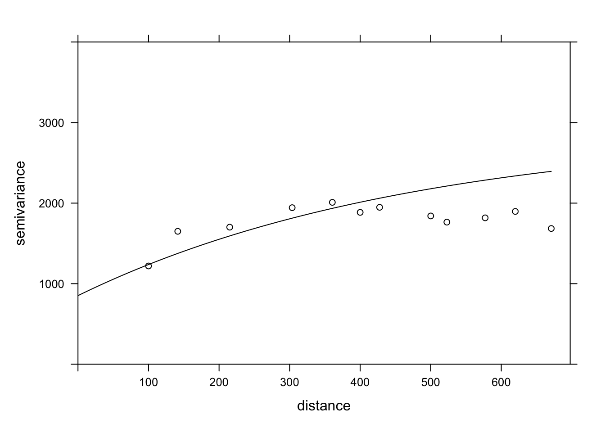
Does the model fit the data less well here? In fact, this empirical variogram represented by the points was obtained from the residuals of the linear model ignoring the spatial correlation, so it is a biased estimate of the actual spatial correlations. The method is still adequate to quickly check if spatial correlations are present. However, to simultaneously fit the regression coefficients and the spatial correlation parameters, the generalized least squares (GLS) approach is preferable and will produce more accurate estimates.
Finally, note that the result of the gls model also gives the AIC, which we can use to compare the fit of different models (with different predictors or different forms of spatial correlation).
Exercise
The bryo_belg.csv dataset is adapted from the data of this study:
Neyens, T., Diggle, P.J., Faes, C., Beenaerts, N., Artois, T. et Giorgi, E. (2019) Mapping species richness using opportunistic samples: a case study on ground-floor bryophyte species richness in the Belgian province of Limburg. Scientific Reports 9, 19122. https://doi.org/10.1038/s41598-019-55593-x
This data frame shows the specific richness of ground bryophytes (richness) for different sampling points in the Belgian province of Limburg, with their position (x, y) in km, in addition to information on the proportion of forest (forest) and wetlands (wetland) in a 1 km^2$ cell containing the sampling point.
bryo_belg <- read.csv("data/bryo_belg.csv")
head(bryo_belg) richness forest wetland x y
1 9 0.2556721 0.5036614 228.9516 220.8869
2 6 0.6449114 0.1172068 227.6714 219.8613
3 5 0.5039905 0.6327003 228.8252 220.1073
4 3 0.5987329 0.2432942 229.2775 218.9035
5 2 0.7600775 0.1163538 209.2435 215.2414
6 10 0.6865434 0.0000000 210.4142 216.5579For this exercise, we will use the square root of the specific richness as the response variable. The square root transformation often allows to homogenize the variance of the count data in order to apply a linear regression.
Fit a linear model of the transformed species richness to the proportion of forest and wetlands, without taking into account spatial correlations. What is the effect of the two predictors in this model?
Calculate the empirical variogram of the model residuals in (a). Does there appear to be a spatial correlation between the points?
Note: The cutoff argument to the variogram function specifies the maximum distance at which the variogram is calculated. You can manually adjust this value to get a good view of the sill.
Re-fit the linear model in (a) with the
glsfunction in the nlme package, trying different types of spatial correlations (exponential, Gaussian, spherical). Compare the models (including the one without spatial correlation) with the AIC.What is the effect of the proportion of forests and wetlands according to the model in (c)? Explain the differences between the conclusions of this model and the model in (a).
8 Kriging
As mentioned before, a common application of geostatistical models is to predict the value of the response variable at unsampled locations, a form of spatial interpolation called kriging (pronounced with a hard “g”).
There are three basic types of kriging based on the assumptions made about the response variable:
Ordinary kriging: Stationary variable with an unknown mean.
Simple kriging: Stationary variable with a known mean.
Universal kriging: Variable with a trend given by a linear or non-linear model.
For all kriging methods, the predictions at a new point are a weighted mean of the values at known points. These weights are chosen so that kriging provides the best linear unbiased prediction of the response variable, if the model assumptions (in particular the variogram) are correct. That is, among all possible unbiased predictions, the weights are chosen to give the minimum mean square error. Kriging also provides an estimate of the uncertainty of each prediction.
While we will not present the detailed kriging equations here, the weights depend on both the correlations (estimated by the variogram) between the sampled points and the new point, as well of the correlations between the sampled points themselves. In other words, sampled points near the new point are given more weight, but isolated sampled points are also given more weight, because sample points close to each other provide redundant information.
Kriging is an interpolation method, so the prediction at a sampled point will always be equal to the measured value (the measurement is supposed to have no error, just spatial variation). However, in the presence of a nugget effect, any small displacement from the sampled location will show variability according to the nugget.
In the example below, we generate a new dataset composed of randomly-generated (x, y) coordinates within the study area as well as randomly-generated pH values based on the oxford data. We then apply the function krige to predict the magnesium values at these new points. Note that we specify the variogram derived from the GLS results in the model argument to krige.
set.seed(14)
new_points <- data.frame(
XCOORD = runif(100, min(oxford$XCOORD), max(oxford$XCOORD)),
YCOORD = runif(100, min(oxford$YCOORD), max(oxford$YCOORD)),
PH1 = rnorm(100, mean(oxford$PH1), sd(oxford$PH1))
)
pred <- krige(MG1 ~ PH1, locations = ~ XCOORD + YCOORD, data = oxford,
newdata = new_points, model = gls_vgm)[using universal kriging]head(pred) XCOORD YCOORD var1.pred var1.var
1 227.0169 162.1185 47.13065 1269.002
2 418.9136 465.9013 79.68437 1427.269
3 578.5943 2032.7477 60.30539 1264.471
4 376.2734 1530.7193 127.22366 1412.875
5 591.5336 421.6290 105.88124 1375.485
6 355.7369 404.3378 127.73055 1250.114The result of krige includes the new point coordinates, the prediction of the variable var1.pred along with its estimated variance var1.var. In the graph below, we show the mean MG1 predictions from kriging (triangles) along with the measurements (circles).
pred$MG1 <- pred$var1.pred
ggplot(oxford, aes(x = YCOORD, y = XCOORD, color = MG1)) +
geom_point() +
geom_point(data = pred, shape = 17, size = 2) +
coord_fixed()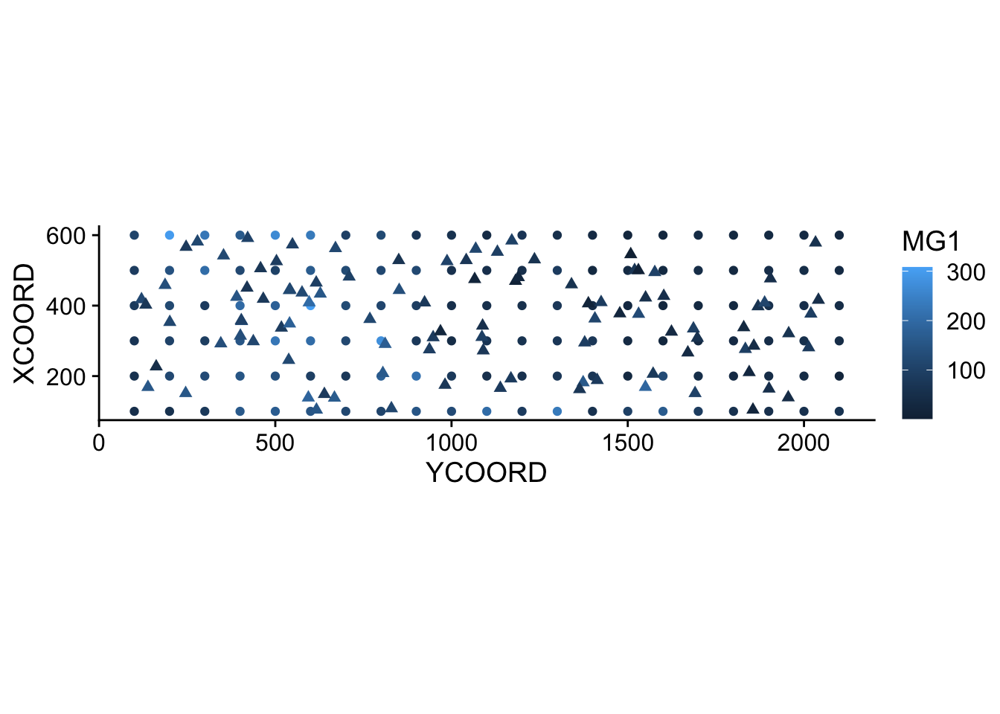
The estimated mean and variance from kriging can be used to simulate possible values of the variable at each new point, conditional on the sampled values. In the example below, we performed 4 conditional simulations by adding the argument nsim = 4 to the same krige instruction.
sim_mg <- krige(MG1 ~ PH1, locations = ~ XCOORD + YCOORD, data = oxford,
newdata = new_points, model = gls_vgm, nsim = 4)drawing 4 GLS realisations of beta...
[using conditional Gaussian simulation]head(sim_mg) XCOORD YCOORD sim1 sim2 sim3 sim4
1 227.0169 162.1185 9.638739 34.53159 46.08685 77.86376
2 418.9136 465.9013 60.029144 20.17179 76.46333 59.57924
3 578.5943 2032.7477 100.791412 77.47887 73.50058 59.40279
4 376.2734 1530.7193 112.615730 150.96664 78.76125 146.83928
5 591.5336 421.6290 70.925240 72.85522 153.90610 126.63758
6 355.7369 404.3378 161.608032 118.93640 134.45695 142.20074library(tidyr)
sim_mg <- pivot_longer(sim_mg, cols = c(sim1, sim2, sim3, sim4),
names_to = "sim", values_to = "MG1")
ggplot(sim_mg, aes(x = YCOORD, y = XCOORD, color = MG1)) +
geom_point() +
coord_fixed() +
facet_wrap(~ sim)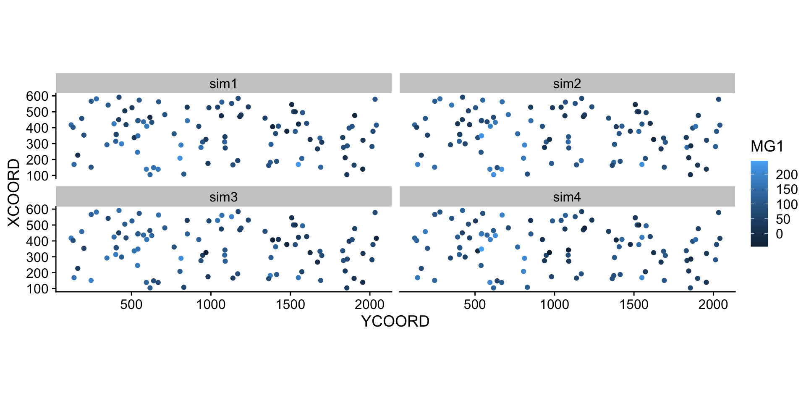
9 Solutions
bryo_lm <- lm(sqrt(richness) ~ forest + wetland, data = bryo_belg)
summary(bryo_lm)
Call:
lm(formula = sqrt(richness) ~ forest + wetland, data = bryo_belg)
Residuals:
Min 1Q Median 3Q Max
-1.8847 -0.4622 0.0545 0.4974 2.3116
Coefficients:
Estimate Std. Error t value Pr(>|t|)
(Intercept) 2.34159 0.08369 27.981 < 2e-16 ***
forest 1.11883 0.13925 8.034 9.74e-15 ***
wetland -0.59264 0.17216 -3.442 0.000635 ***
---
Signif. codes: 0 '***' 0.001 '**' 0.01 '*' 0.05 '.' 0.1 ' ' 1
Residual standard error: 0.7095 on 417 degrees of freedom
Multiple R-squared: 0.2231, Adjusted R-squared: 0.2193
F-statistic: 59.86 on 2 and 417 DF, p-value: < 2.2e-16The proportion of forest has a significant positive effect and the proportion of wetlands has a significant negative effect on bryophyte richness.
plot(variogram(sqrt(richness) ~ forest + wetland, locations = ~ x + y,
data = bryo_belg, cutoff = 50), col = "black")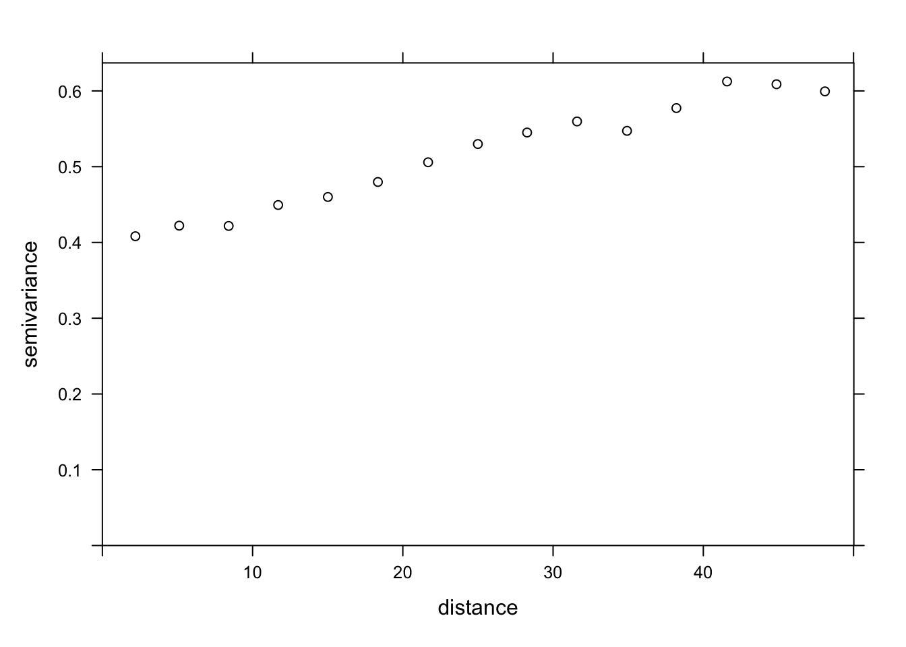
The variogram is increasing from 0 to at least 40 km, so there appears to be spatial correlations in the model residuals.
bryo_exp <- gls(sqrt(richness) ~ forest + wetland, data = bryo_belg,
correlation = corExp(form = ~ x + y, nugget = TRUE))
bryo_gaus <- gls(sqrt(richness) ~ forest + wetland, data = bryo_belg,
correlation = corGaus(form = ~ x + y, nugget = TRUE))
bryo_spher <- gls(sqrt(richness) ~ forest + wetland, data = bryo_belg,
correlation = corSpher(form = ~ x + y, nugget = TRUE))AIC(bryo_lm)[1] 908.6358AIC(bryo_exp)[1] 867.822AIC(bryo_gaus)[1] 870.9592AIC(bryo_spher)[1] 866.9117The spherical model has the smallest AIC.
summary(bryo_spher)Generalized least squares fit by REML
Model: sqrt(richness) ~ forest + wetland
Data: bryo_belg
AIC BIC logLik
866.9117 891.1102 -427.4558
Correlation Structure: Spherical spatial correlation
Formula: ~x + y
Parameter estimate(s):
range nugget
43.1727664 0.6063187
Coefficients:
Value Std.Error t-value p-value
(Intercept) 2.0368769 0.2481636 8.207800 0.000
forest 0.6989844 0.1481690 4.717481 0.000
wetland -0.2441130 0.1809118 -1.349348 0.178
Correlation:
(Intr) forest
forest -0.251
wetland -0.235 0.241
Standardized residuals:
Min Q1 Med Q3 Max
-1.75204183 -0.06568688 0.61415597 1.15240370 3.23322743
Residual standard error: 0.7998264
Degrees of freedom: 420 total; 417 residualBoth effects are less important in magnitude and the effect of wetlands is not significant anymore. As is the case for other types of non-independent residuals, the “effective sample size” here is less than the number of points, since points close to each other provide redundant information. Therefore, the relationship between predictors and response is less clear than given by the model assuming all these points were independent.
Note that the results for all three gls models are quite similar, so the choice to include spatial correlations was more important than the exact shape assumed for the variogram.
10 Areal data
Areal data are variables measured for regions of space, defined by polygons. This type of data is more common in the social sciences, human geography and epidemiology, where data is often available at the scale of administrative divisions.
This type of data also appears frequently in natural resource management. For example, the following map shows the forest management units of the Ministère de la Forêt, de la Faune et des Parcs du Québec.

Suppose that a variable is available at the level of these management units. How can we model the spatial correlation between units that are spatially close together?
One option would be to apply the geostatistical methods seen before, for example by calculating the distance between the centers of the polygons.
Another option, which is more adapted for areal data, is to define a network where each region is connected to neighbouring regions by a link. It is then assumed that the variables are directly correlated between neighbouring regions only. (Note, however, that direct correlations between immediate neighbours also generate indirect correlations for a chain of neighbours).
In this type of model, the correlation is not necessarily the same from one link to another. In this case, each link in the network can be associated with a weight representing its importance for the spatial correlation. We represent these weights by a matrix \(W\) where \(w_{ij}\) is the weight of the link between regions \(i\) and \(j\). A region has no link with itself, so \(w_{ii} = 0\).
A simple choice for \(W\) is to assign a weight equal to 1 if the regions are neighbours, otherwise 0 (binary weight).
In addition to land divisions represented by polygons, another example of areal data consists of a grid where the variable is calculated for each cell of the grid. In this case, a cell generally has 4 or 8 neighbouring cells, depending on whether diagonals are included or not.
11 Moran’s I
Before discussing spatial autocorrelation models, we present Moran’s \(I\) statistic, which allows us to test whether a significant correlation is present between neighbouring regions.
Moran’s \(I\) is a spatial autocorrelation coefficient of \(z\), weighted by the \(w_{ij}\). It therefore takes values between -1 and 1.
\[I = \frac{N}{\sum_i \sum_j w_{ij}} \frac{\sum_i \sum_j w_{ij} (z_i - \bar{z}) (z_j - \bar{z})}{\sum_i (z_i - \bar{z})^2}\]
In this equation, we recognize the expression of a correlation, which is the product of the deviations from the mean for two variables \(z_i\) and \(z_j\), divided by the product of their standard deviations (it is the same variable here, so we get the variance). The contribution of each pair \((i, j)\) is multiplied by its weight \(w_{ij}\) and the term on the left (the number of regions \(N\) divided by the sum of the weights) ensures that the result is bounded between -1 and 1.
Since the distribution of \(I\) is known in the absence of spatial autocorrelation, this statistic serves to test the null hypothesis that there is no spatial correlation between neighbouring regions.
Although we will not see an example in this course, Moran’s \(I\) can also be applied to point data. In this case, we divide the pairs of points into distance classes and calculate \(I\) for each distance class; the weight \(w_{ij} = 1\) if the distance between \(i\) and \(j\) is in the desired distance class, otherwise 0.
12 Spatial autoregression models
Let us recall the formula for a linear regression with spatial dependence:
\[v = \beta_0 + \sum_i \beta_i u_i + z + \epsilon\]
where \(z\) is the portion of the residual variance that is spatially correlated.
There are two main types of autoregressive models to represent the spatial dependence of \(z\): conditional autoregression (CAR) and simultaneous autoregressive (SAR).
Conditional autoregressive (CAR) model
In the conditional autoregressive model, the value of \(z_i\) for the region \(i\) follows a normal distribution: its mean depends on the value \(z_j\) of neighbouring regions, multiplied by the weight \(w_{ij}\) and a correlation coefficient \(\rho\); its standard deviation \(\sigma_{z_i}\) may vary from one region to another.
\[z_i \sim \text{N}\left(\sum_j \rho w_{ij} z_j,\sigma_{z_i} \right)\]
In this model, if \(w_{ij}\) is a binary matrix (0 for non-neighbours, 1 for neighbours), then \(\rho\) is the coefficient of partial correlation between neighbouring regions. This is similar to a first-order autoregressive model in the context of time series, where the autoregression coefficient indicates the partial correlation.
Simultaneous autoregressive (SAR) model
In the simultaneous autoregressive model, the value of \(z_i\) is given directly by the sum of contributions from neighbouring values \(z_j\), multiplied by \(\rho w_{ij}\), with an independent residual \(\nu_i\) of standard deviation \(\sigma_z\).
\[z_i = \sum_j \rho w_{ij} z_j + \nu_i\]
At first glance, this looks like a temporal autoregressive model. However, there is an important conceptual difference. For temporal models, the causal influence is directed in only one direction: \(v(t-2)\) affects \(v(t-1)\) which then affects \(v(t)\). For a spatial model, each \(z_j\) that affects \(z_i\) depends in turn on \(z_i\). Thus, to determine the joint distribution of \(z\), a system of equations must be solved simultaneously (hence the name of the model).
For this reason, although this model resembles the formula of CAR model, the solutions of the two models differ and in the case of SAR, the coefficient \(\rho\) is not directly equal to the partial correlation due to each neighbouring region.
For more details on the mathematical aspects of these models, see the article by Ver Hoef et al. (2018) suggested in reference.
For the moment, we will consider SAR and CAR as two types of possible models to represent a spatial correlation on a network. We can always fit several models and compare them with the AIC to choose the best form of correlation or the best weight matrix.
The CAR and SAR models share an advantage over geostatistical models in terms of efficiency. In a geostatistical model, spatial correlations are defined between each pair of points, although they become negligible as distance increases. For a CAR or SAR model, only neighbouring regions contribute and most weights are equal to 0, making these models faster to fit than a geostatistical model when the data are massive.
13 Analysis of areal data in R
To illustrate the analysis of areal data in R, we load the packages sf (to read geospatial data), spdep (to define spatial networks and calculate Moran’s \(I\)) and spatialreg (for SAR and CAR models).
library(sf)
library(spdep)
library(spatialreg)As an example, we will use a dataset that presents some of the results of the 2018 provincial election in Quebec, with population characteristics of each riding. This data is included in a shapefile (.shp) file type, which we can read with the read_sf function of the sf package.
elect2018 <- read_sf("data/elect2018.shp")
head(elect2018)Simple feature collection with 6 features and 9 fields
Geometry type: MULTIPOLYGON
Dimension: XY
Bounding box: xmin: 97879.03 ymin: 174515.3 xmax: 694261.1 ymax: 599757.1
Projected CRS: LambertAQ
# A tibble: 6 × 10
circ age_moy pct_frn pct_prp rev_med propCAQ propPQ propPLQ propQS
<chr> <dbl> <dbl> <dbl> <int> <dbl> <dbl> <dbl> <dbl>
1 Abitibi-Est 40.8 0.963 0.644 34518 42.7 19.5 18.8 15.7
2 Abitibi-Ouest 42.2 0.987 0.735 33234 34.1 33.3 11.3 16.6
3 Acadie 40.3 0.573 0.403 25391 16.5 9 53.8 13.8
4 Anjou-Louis-Riel 43.5 0.821 0.416 31275 28.9 14.7 39.1 14.5
5 Argenteuil 43.3 0.858 0.766 31097 38.9 21.1 17.4 12.2
6 Arthabaska 43.4 0.989 0.679 30082 61.8 9.4 11.4 12.6
# … with 1 more variable: geometry <MULTIPOLYGON [m]>Note: The dataset is actually composed of 4 files with the extensions .dbf, .prj, .shp and .shx, but it is sufficient to write the name of the .shp file in read_sf.
The columns of the dataset are, in order:
- the name of the electoral riding (
circ); - four characteristics of the population (
age_moy= mean age,pct_frn= fraction of the population that speaks mainly French at home,pct_prp= fraction of households that own their home,rev_med= median income); - four columns showing the fraction of votes obtained by the main parties (CAQ, PQ, PLQ, QS);
- a
geometrycolumn that contains the geometric object (multipolygon) corresponding to the riding.
To illustrate one of the variables on a map, we call the plot function with the name of the column in square brackets and quotation marks.
plot(elect2018["rev_med"])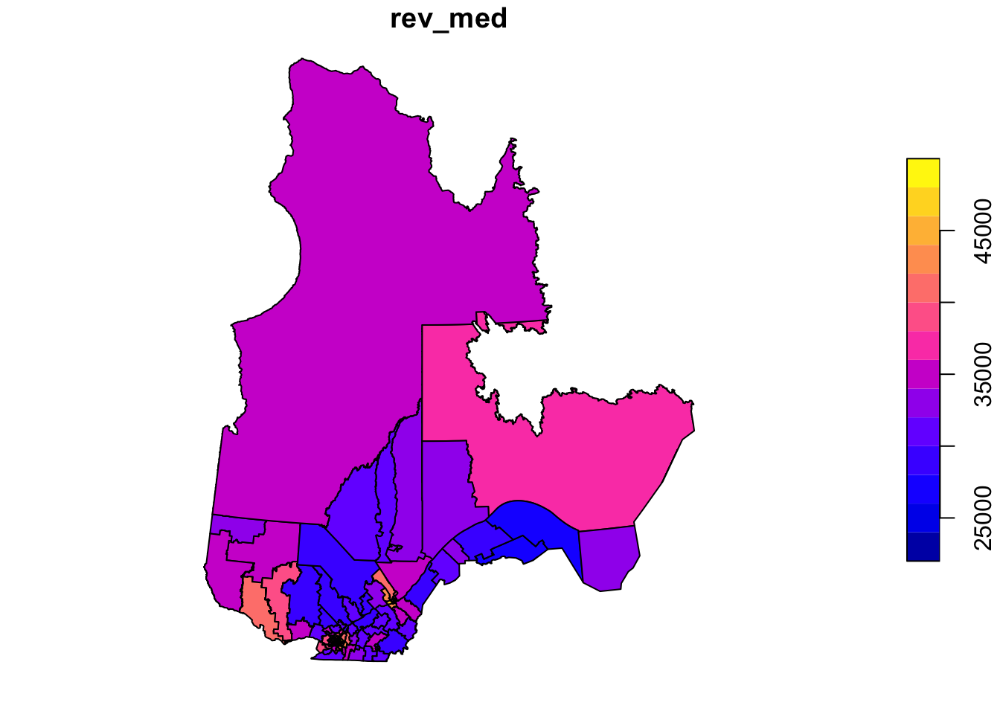
In this example, we want to model the fraction of votes obtained by the CAQ based on the characteristics of the population in each riding and taking into account the spatial correlations between neighbouring ridings.
Definition of the neighbourhood network
The poly2nb function of the spdep package defines a neighbourhood network from polygons. The result vois is a list of 125 elements where each element contains the indices of the neighbouring (bordering) polygons of a given polygon.
vois <- poly2nb(elect2018)
vois[[1]][1] 2 37 63 88 101 117Thus, the first riding (Abitibi-Est) has 6 neighbouring ridings, for which the names can be found as follows:
elect2018$circ[vois[[1]]][1] "Abitibi-Ouest" "Gatineau"
[3] "Laviolette-Saint-Maurice" "Pontiac"
[5] "Rouyn-Noranda-Témiscamingue" "Ungava" We can illustrate this network by extracting the coordinates of the center of each district, creating a blank map with plot(elect2018["geometry"]), then adding the network as an additional layer with plot(vois, add = TRUE, coords = coords).
coords <- st_centroid(elect2018) %>%
st_coordinates()
plot(elect2018["geometry"])
plot(vois, add = TRUE, col = "red", coords = coords)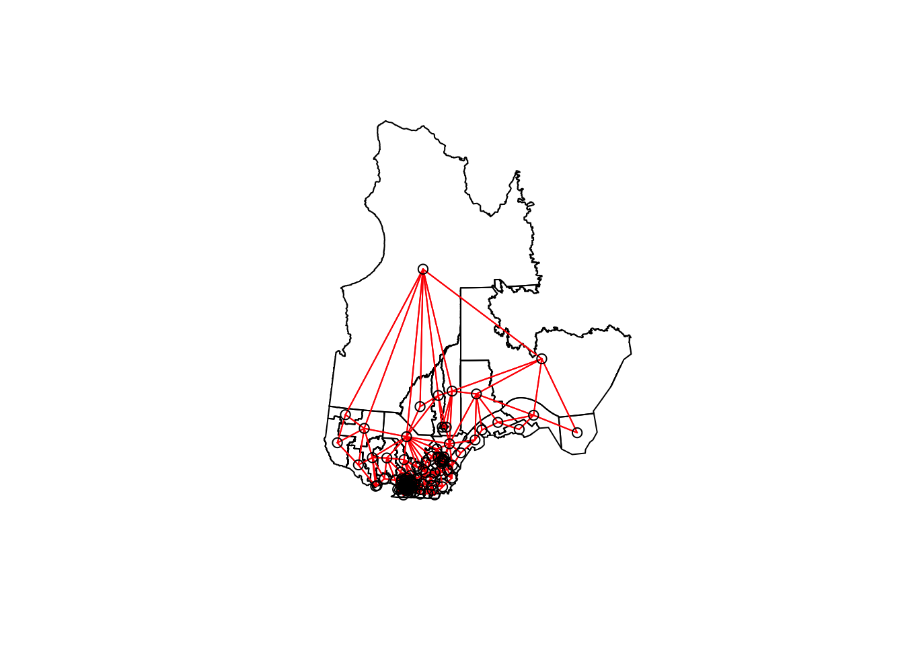
We can “zoom” on southern Québec by choosing the limits xlim and ylim.
plot(elect2018["geometry"],
xlim = c(400000, 800000), ylim = c(100000, 500000))
plot(vois, add = TRUE, col = "red", coords = coords)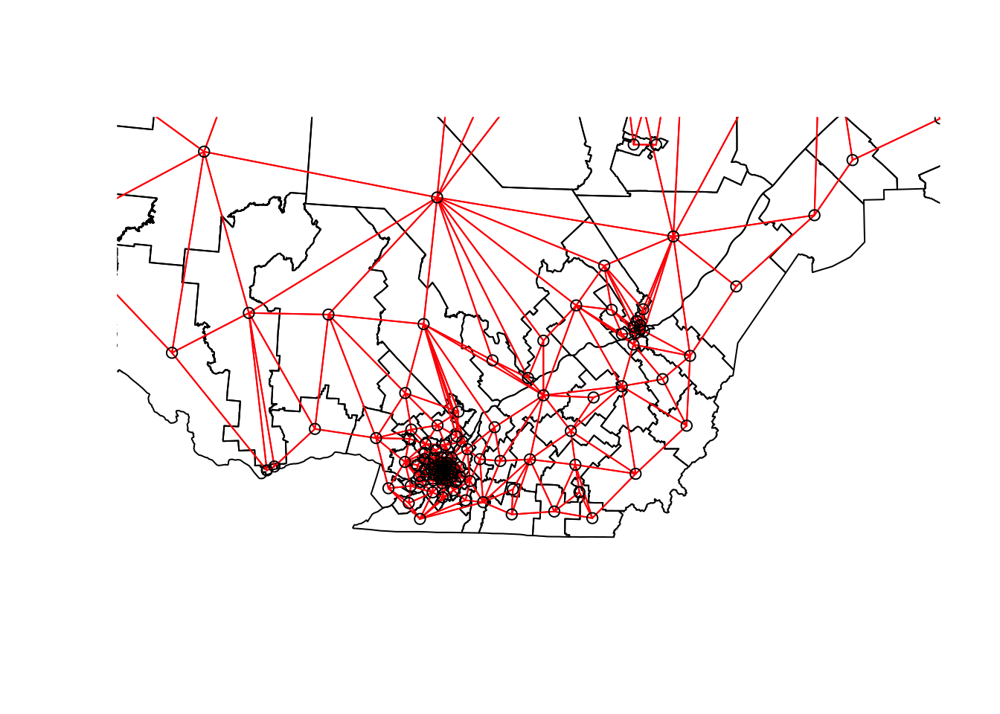
We still have to add weights to each network link with the nb2listw function. The style of weights “B” corresponds to binary weights, i.e. 1 for the presence of link and 0 for the absence of link between two ridings.
Once these weights are defined, we can verify with Moran’s test whether there is a significant autocorrelation of votes obtained by the CAQ between neighbouring ridings.
poids <- nb2listw(vois, style = "B")
moran.test(elect2018$propCAQ, poids)
Moran I test under randomisation
data: elect2018$propCAQ
weights: poids
Moran I statistic standard deviate = 13.148, p-value < 2.2e-16
alternative hypothesis: greater
sample estimates:
Moran I statistic Expectation Variance
0.680607768 -0.008064516 0.002743472 The value \(I = 0.68\) is very significant judging by the \(p\)-value of the test.
Let’s verify if the spatial correlation persists after taking into account the four characteristics of the population, therefore by inspecting the residuals of a linear model including these four predictors.
elect_lm <- lm(propCAQ ~ age_moy + pct_frn + pct_prp + rev_med, data = elect2018)
summary(elect_lm)
Call:
lm(formula = propCAQ ~ age_moy + pct_frn + pct_prp + rev_med,
data = elect2018)
Residuals:
Min 1Q Median 3Q Max
-30.9890 -4.4878 0.0562 6.2653 25.8146
Coefficients:
Estimate Std. Error t value Pr(>|t|)
(Intercept) 1.354e+01 1.836e+01 0.737 0.463
age_moy -9.170e-01 3.855e-01 -2.378 0.019 *
pct_frn 4.588e+01 5.202e+00 8.820 1.09e-14 ***
pct_prp 3.582e+01 6.527e+00 5.488 2.31e-07 ***
rev_med -2.624e-05 2.465e-04 -0.106 0.915
---
Signif. codes: 0 '***' 0.001 '**' 0.01 '*' 0.05 '.' 0.1 ' ' 1
Residual standard error: 9.409 on 120 degrees of freedom
Multiple R-squared: 0.6096, Adjusted R-squared: 0.5965
F-statistic: 46.84 on 4 and 120 DF, p-value: < 2.2e-16moran.test(residuals(elect_lm), poids)
Moran I test under randomisation
data: residuals(elect_lm)
weights: poids
Moran I statistic standard deviate = 6.7047, p-value = 1.009e-11
alternative hypothesis: greater
sample estimates:
Moran I statistic Expectation Variance
0.340083290 -0.008064516 0.002696300 Moran’s \(I\) has decreased but remains significant, so some of the previous correlation was induced by these predictors, but there remains a spatial correlation due to other factors.
Spatial autoregression models
Finally, we fit SAR and CAR models to these data with the spautolm (spatial autoregressive linear model) function of spatialreg. Here is the code for a SAR model including the effect of the same four predictors.
elect_sar <- spautolm(propCAQ ~ age_moy + pct_frn + pct_prp + rev_med,
data = elect2018, listw = poids)
summary(elect_sar)
Call: spautolm(formula = propCAQ ~ age_moy + pct_frn + pct_prp + rev_med,
data = elect2018, listw = poids)
Residuals:
Min 1Q Median 3Q Max
-23.08342 -4.10573 0.24274 4.29941 23.08245
Coefficients:
Estimate Std. Error z value Pr(>|z|)
(Intercept) 15.09421119 16.52357745 0.9135 0.36098
age_moy -0.70481703 0.32204139 -2.1886 0.02863
pct_frn 39.09375061 5.43653962 7.1909 6.435e-13
pct_prp 14.32329345 6.96492611 2.0565 0.03974
rev_med 0.00016730 0.00023209 0.7208 0.47101
Lambda: 0.12887 LR test value: 42.274 p-value: 7.9339e-11
Numerical Hessian standard error of lambda: 0.012069
Log likelihood: -433.8862
ML residual variance (sigma squared): 53.028, (sigma: 7.282)
Number of observations: 125
Number of parameters estimated: 7
AIC: 881.77The value given by Lambda in the summary corresponds to the coefficient \(\rho\) in our description of the model. The likelihood-ratio test (LR test) confirms that this residual spatial correlation (after controlling for the effect of predictors) is significant.
The estimated effects for the predictors are similar to those of the linear model without spatial correlation. The effects of mean age, fraction of francophones and fraction of homeowners remain significant, although their magnitude has decreased somewhat.
To fit a CAR rather than SAR model, we must specify family = "CAR".
elect_car <- spautolm(propCAQ ~ age_moy + pct_frn + pct_prp + rev_med,
data = elect2018, listw = poids, family = "CAR")
summary(elect_car)
Call: spautolm(formula = propCAQ ~ age_moy + pct_frn + pct_prp + rev_med,
data = elect2018, listw = poids, family = "CAR")
Residuals:
Min 1Q Median 3Q Max
-21.73315 -4.24623 -0.24369 3.44228 23.43749
Coefficients:
Estimate Std. Error z value Pr(>|z|)
(Intercept) 16.57164696 16.84155327 0.9840 0.325128
age_moy -0.79072151 0.32972225 -2.3981 0.016478
pct_frn 38.99116707 5.43667482 7.1719 7.399e-13
pct_prp 17.98557474 6.80333470 2.6436 0.008202
rev_med 0.00012639 0.00023106 0.5470 0.584364
Lambda: 0.15517 LR test value: 40.532 p-value: 1.9344e-10
Numerical Hessian standard error of lambda: 0.0026868
Log likelihood: -434.7573
ML residual variance (sigma squared): 53.9, (sigma: 7.3416)
Number of observations: 125
Number of parameters estimated: 7
AIC: 883.51For a CAR model with binary weights, the value of Lambda (which we called \(\rho\)) directly gives the partial correlation coefficient between neighbouring districts. Note that the AIC here is slightly higher than the SAR model, so the latter gave a better fit.
Exercise
The rls_covid dataset, in shapefile format, contains data on detected COVID-19 cases (cas), number of cases per 1000 people (taux_1k) and the population density (dens_pop) in each of Quebec’s local health service networks (RLS) (Source: Data downloaded from the Institut national de santé publique du Québec as of January 17, 2021).
rls_covid <- read_sf("data/rls_covid.shp")
head(rls_covid)Simple feature collection with 6 features and 5 fields
Geometry type: MULTIPOLYGON
Dimension: XY
Bounding box: xmin: 785111.2 ymin: 341057.8 xmax: 979941.5 ymax: 541112.7
Projected CRS: Conique_conforme_de_Lambert_du_MTQ_utilis_e_pour_Adresse_Qu_be
# A tibble: 6 × 6
RLS_code RLS_nom cas taux_1k dens_…¹ geometry
<chr> <chr> <dbl> <dbl> <dbl> <MULTIPOLYGON [m]>
1 0111 RLS de Kamouraska 152 7.34 6.76 (((827028.3 412772.4, 82…
2 0112 RLS de Rivière-du-Lo… 256 7.34 19.6 (((855905 452116.9, 8557…
3 0113 RLS de Témiscouata 81 4.26 4.69 (((911829.4 441311.2, 91…
4 0114 RLS des Basques 28 3.3 5.35 (((879249.6 471975.6, 87…
5 0115 RLS de Rimouski 576 9.96 15.5 (((917748.1 503148.7, 91…
6 0116 RLS de La Mitis 76 4.24 5.53 (((951316 523499.3, 9525…
# … with abbreviated variable name ¹dens_popFit a linear model of the number of cases per 1000 as a function of population density (it is suggested to apply a logarithmic transform to the latter). Check whether the model residuals are correlated between bordering RLS with a Moran’s test and then model the same data with a conditional autoregressive model.
Reference
Ver Hoef, J.M., Peterson, E.E., Hooten, M.B., Hanks, E.M. and Fortin, M.-J. (2018) Spatial autoregressive models for statistical inference from ecological data. Ecological Monographs 88: 36-59.
14 GLMM with spatial Gaussian process
Data
The gambia dataset found in the geoR package presents the results of a study of malaria prevalence among children of 65 villages in The Gambia. We will use a slightly transformed version of the data found in the file gambia.csv.
library(geoR)
gambia <- read.csv("data/gambia.csv")
head(gambia) id_village x y pos age netuse treated green phc
1 1 349.6313 1458.055 1 1783 0 0 40.85 1
2 1 349.6313 1458.055 0 404 1 0 40.85 1
3 1 349.6313 1458.055 0 452 1 0 40.85 1
4 1 349.6313 1458.055 1 566 1 0 40.85 1
5 1 349.6313 1458.055 0 598 1 0 40.85 1
6 1 349.6313 1458.055 1 590 1 0 40.85 1Here are the fields in that dataset:
- id_village: Identifier of the village.
- x and y: Spatial coordinates of the village (in kilometers, based on UTM coordinates).
- pos: Binary response, whether the child tested positive for malaria.
- age: Age of the child in days.
- netuse: Whether or not the child sleeps under a bed net.
- treated: Whether or not the bed net is treated.
- green: Remote sensing based measure of greenness of vegetation (measured at the village level).
- phc: Presence or absence of a public health centre for the village.
We can count the number of positive cases and total children tested by village to map the fraction of positive cases (or prevalence, prev).
# Create village-level dataset
gambia_agg <- group_by(gambia, id_village, x, y, green, phc) %>%
summarize(pos = sum(pos), total = n()) %>%
mutate(prev = pos / total) %>%
ungroup()`summarise()` has grouped output by 'id_village', 'x', 'y', 'green'. You can
override using the `.groups` argument.head(gambia_agg)# A tibble: 6 × 8
id_village x y green phc pos total prev
<int> <dbl> <dbl> <dbl> <int> <int> <int> <dbl>
1 1 350. 1458. 40.8 1 17 33 0.515
2 2 359. 1460. 40.8 1 19 63 0.302
3 3 360. 1460. 40.1 0 7 17 0.412
4 4 364. 1497. 40.8 0 8 24 0.333
5 5 366. 1460. 40.8 0 10 26 0.385
6 6 367. 1463. 40.8 0 7 18 0.389ggplot(gambia_agg, aes(x = x, y = y)) +
geom_point(aes(color = prev)) +
geom_path(data = gambia.borders, aes(x = x / 1000, y = y / 1000)) +
coord_fixed() +
theme_minimal() +
scale_color_viridis_c()
We use the gambia.borders dataset from the geoR package to trace the country boundaries with geom_path. Since those boundaries are in meters, we divide by 1000 to get the same scale as our points. We also use coord_fixed to ensure a 1:1 aspect ratio between the axes and use the viridis color scale, which makes it easier to visualize a continuous variable compared with the default gradient scale in ggplot2.
Based on this map, there seems to be spatial correlation in malaria prevalence, with the eastern cluster of villages showing more high prevalence values (yellow-green) and the middle cluster showing more low prevalence values (purple).
Non-spatial GLMM
For this first example, we will ignore the spatial aspect of the data and model the presence of malaria (pos) as a function of the use of a bed net (netuse) and the presence of a public health centre (phc). Since we have a binary response, we need to use a logistic regression model (a GLM). Since we have predictors at both the individual and village level, and we expect that children of the same village have more similar probabilities of having malaria even after accounting for those predictors, we need to add a random effect of the village. The result is a GLMM that we fit using the glmer function in the lme4 package.
library(lme4)
mod_glmm <- glmer(pos ~ netuse + phc + (1 | id_village),
data = gambia, family = binomial)
summary(mod_glmm)Generalized linear mixed model fit by maximum likelihood (Laplace
Approximation) [glmerMod]
Family: binomial ( logit )
Formula: pos ~ netuse + phc + (1 | id_village)
Data: gambia
AIC BIC logLik deviance df.resid
2428.0 2450.5 -1210.0 2420.0 2031
Scaled residuals:
Min 1Q Median 3Q Max
-2.1286 -0.7120 -0.4142 0.8474 3.3434
Random effects:
Groups Name Variance Std.Dev.
id_village (Intercept) 0.8149 0.9027
Number of obs: 2035, groups: id_village, 65
Fixed effects:
Estimate Std. Error z value Pr(>|z|)
(Intercept) 0.1491 0.2297 0.649 0.5164
netuse -0.6044 0.1442 -4.190 2.79e-05 ***
phc -0.4985 0.2604 -1.914 0.0556 .
---
Signif. codes: 0 '***' 0.001 '**' 0.01 '*' 0.05 '.' 0.1 ' ' 1
Correlation of Fixed Effects:
(Intr) netuse
netuse -0.422
phc -0.715 -0.025According to these results, both netuse and phc result in a decrease of malaria prevalence, although the effect of phc is not significant at a threshold \(\alpha = 0.05\). The intercept (0.149) is the logit of the probability of malaria presence for a child with no bednet and no public health centre, but it is the mean intercept across all villages, and there is a lot of variation between villages, based on the random effect standard deviation of 0.90. We can get the estimated intercept for each village with the function coef:
head(coef(mod_glmm)$id_village) (Intercept) netuse phc
1 0.93727515 -0.6043602 -0.4984835
2 0.09204843 -0.6043602 -0.4984835
3 0.22500620 -0.6043602 -0.4984835
4 -0.46271089 -0.6043602 -0.4984835
5 0.13680037 -0.6043602 -0.4984835
6 -0.03723346 -0.6043602 -0.4984835So for example, the intercept for village 1 is around 0.94, equivalent to a probability of 72%:
plogis(0.937)[1] 0.7184933while the intercept in village 2 is equivalent to a probability of 52%:
plogis(0.092)[1] 0.5229838The DHARMa package provides a general method for checking whether the residuals of a GLMM are distributed according to the specified model and whether there is any residual trend. The package works by simulating replicates of each observation according to the fitted model and then determining a “standardized residual”, which is the relative position of the observed value with respect to the simulated values, e.g. 0 if the observation is smaller than all the simulations, 0.5 if it is in the middle, etc. If the model represents the data well, each value of the standardized residual between 0 and 1 should be equally likely, so the standardized residuals should produce a uniform distribution between 0 and 1.
The simulateResiduals function performs the calculation of the standardized residuals, then the plot function plots the diagnostic graphs with the results of certain tests.
library(DHARMa)
res_glmm <- simulateResiduals(mod_glmm)
plot(res_glmm)The graph on the left is a quantile-quantile plot of standardized residuals. The results of three statistical tests also also shown: a Kolmogorov-Smirnov (KS) test which checks whether there is a deviation from the theoretical distribution, a dispersion test that checks whether there is underdispersion or overdispersion, and an outlier test based on the number of residuals that are more extreme than all the simulations. Here, we get a significant result for the outliers, though the message indicates that this result might have an inflated type I error rate in this case.
On the right, we generally get a graph of standardized residuals (in y) as a function of the rank of the predicted values, in order to check for any leftover trend in the residual. Here, the predictions are binned by quartile, so it might be better to instead aggregate the predictions and residuals by village, which we can do with the recalculateResiduals function.
plot(recalculateResiduals(res_glmm, group = gambia$id_village))DHARMa:testOutliers with type = binomial may have inflated Type I error rates for integer-valued distributions. To get a more exact result, it is recommended to re-run testOutliers with type = 'bootstrap'. See ?testOutliers for details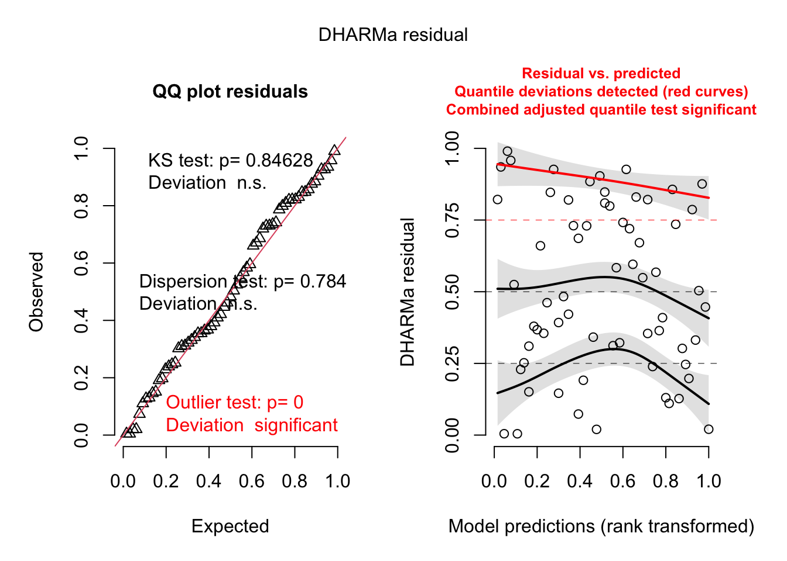
The plot to the right now shows individual points, along with a quantile regression for the 1st quartile, the median and the 3rd quartile. In theory, these three curves should be horizontal straight lines (no leftover trend in the residuals vs. predictions). The curve for the 3rd quartile (in red) is significantly different from a horizontal line, which could indicate some systematic effect that is missing from the model.
Spatial GLMM with spaMM
The spaMM (spatial mixed models) package is a relatively new R package that can perform approximate maximum likelihood estimation of parameters for GLMM with spatial dependence, modelled either as a Gaussian process or with a CAR (we will see the latter in the last section). The package implements different algorithms, but there is a single fitme function that chooses the appropriate algorithm for each model type. For example, here is the same (non-spatial) model as above fit with spaMM.
library(spaMM)
mod_spamm_glmm <- fitme(pos ~ netuse + phc + (1 | id_village),
data = gambia, family = binomial)
summary(mod_spamm_glmm)formula: pos ~ netuse + phc + (1 | id_village)
Estimation of lambda by ML (p_v approximation of logL).
Estimation of fixed effects by ML (p_v approximation of logL).
family: binomial( link = logit )
------------ Fixed effects (beta) ------------
Estimate Cond. SE t-value
(Intercept) 0.1491 0.2287 0.6519
netuse -0.6045 0.1420 -4.2567
phc -0.4986 0.2593 -1.9231
--------------- Random effects ---------------
Family: gaussian( link = identity )
--- Variance parameters ('lambda'):
lambda = var(u) for u ~ Gaussian;
id_village : 0.8151
--- Coefficients for log(lambda):
Group Term Estimate Cond.SE
id_village (Intercept) -0.2045 0.2008
# of obs: 2035; # of groups: id_village, 65
------------- Likelihood values -------------
logLik
logL (p_v(h)): -1210.016Note that the estimates of the fixed effects as well as the variance of random effects are nearly identical to those obtained by glmer above.
We can now use spaMM to fit the same model with the addition of spatial correlations between villages. In the formula of the model, this is represented as a random effect Matern(1 | x + y), which means that the intercepts are spatially correlated between villages following a Matérn correlation function of coordinates (x, y). The Matérn function is a flexible function for spatial correlation that includes a shape parameter \(\nu\) (nu), so that when \(\nu = 0.5\) it is equivalent to the exponential correlation but as \(\nu\) grows to large values, it approaches a Gaussian correlation. We could let the function estimate \(\nu\), but here we will fix it to 0.5 with the fixed argument of fitme.
mod_spamm <- fitme(pos ~ netuse + phc + Matern(1 | x + y) + (1 | id_village),
data = gambia, family = binomial, fixed = list(nu = 0.5))Increase spaMM.options(separation_max=<.>) to at least 21 if you want to check separation (see 'help(separation)').summary(mod_spamm)formula: pos ~ netuse + phc + Matern(1 | x + y) + (1 | id_village)
Estimation of corrPars and lambda by ML (p_v approximation of logL).
Estimation of fixed effects by ML (p_v approximation of logL).
Estimation of lambda by 'outer' ML, maximizing logL.
family: binomial( link = logit )
------------ Fixed effects (beta) ------------
Estimate Cond. SE t-value
(Intercept) 0.06861 0.3352 0.2047
netuse -0.51719 0.1407 -3.6757
phc -0.44416 0.2052 -2.1648
--------------- Random effects ---------------
Family: gaussian( link = identity )
--- Correlation parameters:
1.nu 1.rho
0.50000000 0.05128692
--- Variance parameters ('lambda'):
lambda = var(u) for u ~ Gaussian;
x + y : 0.6421
id_village : 0.1978
# of obs: 2035; # of groups: x + y, 65; id_village, 65
------------- Likelihood values -------------
logLik
logL (p_v(h)): -1197.968Let’s first check the random effects of the model. The spatial correlation function has a parameter rho equal to 0.0513. This parameter in spaMM is the inverse of the range, so here the range of exponential correlation is 1/0.0513 or around 19.5 km. There are now two variance prameters, the one identified as x + y is the long-range variance (i.e. sill) for the exponential correlation model whereas the one identified as id_village shows the non-spatially correlated portion of the variation between villages.
In fact, while we left the random effects (1 | id_village) in the formula to represent the non-spatial portion of variation between villages, we could also represent this with a nugget effect in the geostatistical model. In both cases, it would represent the idea that even two villages very close to each other would have different baseline prevalences in the model.
By default, the Matern function has no nugget effect, but we can add one by specifying a non-zero Nugget in the initial parameter list init.
mod_spamm2 <- fitme(pos ~ netuse + phc + Matern(1 | x + y),
data = gambia, family = binomial, fixed = list(nu = 0.5),
init = list(Nugget = 0.1))Increase spaMM.options(separation_max=<.>) to at least 21 if you want to check separation (see 'help(separation)').summary(mod_spamm2)formula: pos ~ netuse + phc + Matern(1 | x + y)
Estimation of corrPars and lambda by ML (p_v approximation of logL).
Estimation of fixed effects by ML (p_v approximation of logL).
Estimation of lambda by 'outer' ML, maximizing logL.
family: binomial( link = logit )
------------ Fixed effects (beta) ------------
Estimate Cond. SE t-value
(Intercept) 0.06861 0.3352 0.2047
netuse -0.51719 0.1407 -3.6757
phc -0.44416 0.2052 -2.1648
--------------- Random effects ---------------
Family: gaussian( link = identity )
--- Correlation parameters:
1.nu 1.Nugget 1.rho
0.50000000 0.23551027 0.05128692
--- Variance parameters ('lambda'):
lambda = var(u) for u ~ Gaussian;
x + y : 0.8399
# of obs: 2035; # of groups: x + y, 65
------------- Likelihood values -------------
logLik
logL (p_v(h)): -1197.968As you can see, all estimates are the same, except that the variance of the spatial portion (sill) is now 0.84 and the nugget is equal to a fraction 0.235 of that sill, so a variance of 0.197, which is the same as the id_village random effect in the version above. Thus the two formulations are equivalent.
Now, recall the coefficients we obtained for the non-spatial GLMM:
summary(mod_glmm)$coefficients Estimate Std. Error z value Pr(>|z|)
(Intercept) 0.1490596 0.2296971 0.6489399 5.163772e-01
netuse -0.6043602 0.1442448 -4.1898243 2.791706e-05
phc -0.4984835 0.2604083 -1.9142382 5.558973e-02In the spatial version, both fixed effects have moved slightly towards zero, but the standard error of the effect of phc has decreased. It is interesting that the inclusion of spatial dependence has allowed us to estimate more precisely the effect of having a public health centre in the village. This would not always be the case: for a predictor that is also strongly correlated in space, spatial correlation in the response makes it harder to estimate the effect of this predictor, since it is confounded with the spatial effect. However, for a predictor that is not correlated in space, including the spatial effect reduces the residual (non-spatial) variance and may thus increase the precision of the predictor’s effect.
The spaMM package is also compatible with DHARMa for residual diagnostics. (You can in fact ignore the warning that it is not in the class of supported models, this is due to using the fitme function rather than a specific algorithm function in spaMM.)
res_spamm <- simulateResiduals(mod_spamm2)
plot(res_spamm)DHARMa:testOutliers with type = binomial may have inflated Type I error rates for integer-valued distributions. To get a more exact result, it is recommended to re-run testOutliers with type = 'bootstrap'. See ?testOutliers for details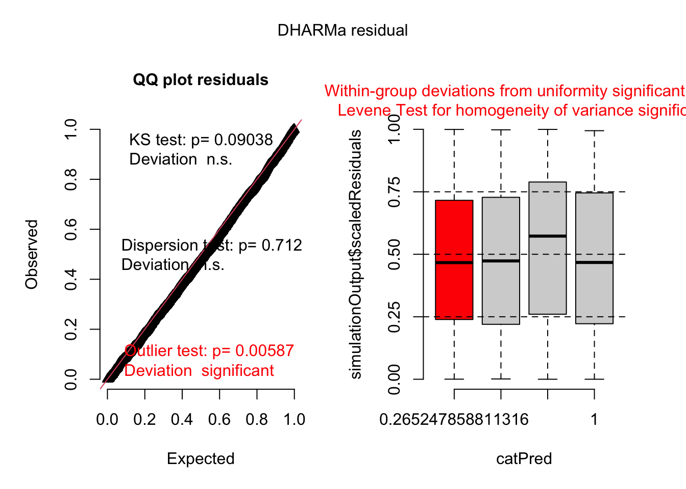
plot(recalculateResiduals(res_spamm, group = gambia$id_village))DHARMa:testOutliers with type = binomial may have inflated Type I error rates for integer-valued distributions. To get a more exact result, it is recommended to re-run testOutliers with type = 'bootstrap'. See ?testOutliers for details
Finally, while we will show how to make and visualize spatial predictions below, we can produce a quick map of the estimated spatial effects in a spaMM model with the filled.mapMM function.
filled.mapMM(mod_spamm2)
Gaussian process models vs. smoothing splines
If you are familiar with generalized additive models (GAM), you might think that the spatial variation in malaria prevalence (as shown in the map above) could be represented by a 2D smoothing spline (as a function of \(x\) and \(y\)) within a GAM.
The code below fits the GAM equivalent of our Gaussian process GLMM above with the gam function in the mgcv package. The spatial effect is represented by the 2D spline s(x, y) whereas the non-spatial random effect of village is represented by s(id_village, bs = "re"), which is the same as (1 | id_village) in the previous models. Note that for the gam function, categorical variables must be explicitly converted to factors.
library(mgcv)
gambia$id_village <- as.factor(gambia$id_village)
mod_gam <- gam(pos ~ netuse + phc + s(id_village, bs = "re") + s(x, y),
data = gambia, family = binomial)To visualize the 2D spline, we will use the gratia package.
library(gratia)
draw(mod_gam)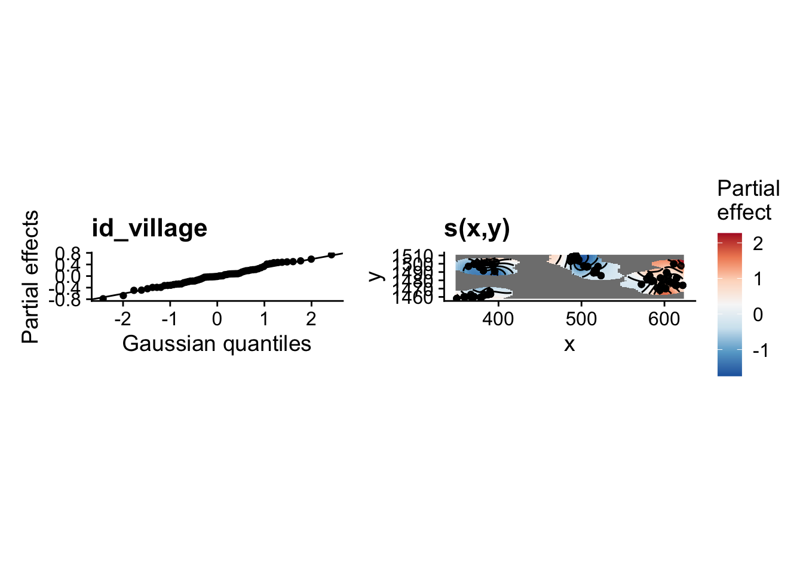
Note that the plot of the spline s(x, y) (top right) does not extend too far from the locations of the data (other areas are blank). In this graph, we can also see that the village random effects follow the expected Gaussian distribution (top left).
Next, we will use both the spatial GLMM from the previous section and this GAMM to predict the mean prevalence on a spatial grid of points contained in the file gambia_pred.csv. The graph below adds those prediction points (in black) on the previous map of the data points.
gambia_pred <- read.csv("data/gambia_pred.csv")
ggplot(gambia_agg, aes(x = x, y = y)) +
geom_point(data = gambia_pred) +
geom_point(aes(color = prev)) +
geom_path(data = gambia.borders, aes(x = x / 1000, y = y / 1000)) +
coord_fixed() +
theme_minimal() +
scale_color_viridis_c()
To make predictions from the GAMM model at those points, the code below goes through the following steps:
All predictors in the model must be in the prediction data frame, so we add constant values of netuse and phc (both equal to 1) for all points. Thus, we will make predictions of malaria prevalence in the case where a net is used and a public health centre is present. We also add a constant id_village, although it will not be used in predictions (see below).
We call the
predictfunction on the output ofgamto produce predictions at the new data points (argumentnewdata), including standard errors (se.fit = TRUE) and excluding the village random effects, so the prediction is made for an “average village”. The resulting objectgam_predwill have columnsfit(mean prediction) andse.fit(standard error). Those predictions and standard errors are on the link (logit) scale.We add the original prediction data frame to
gam_predwithcbind.We add columns for the mean prediction and 50% confidence interval boundaries (mean \(\pm\) 0.674 standard error), converted from the logit scale to the probability scale with
plogis. We choose a 50% interval since a 95% interval may be too wide here to contrast the different predictions on the map at the end of this section.
gambia_pred <- mutate(gambia_pred, netuse = 1, phc = 1, id_village = 1)
gam_pred <- predict(mod_gam, newdata = gambia_pred, se.fit = TRUE,
exclude = "s(id_village)")
gam_pred <- cbind(gambia_pred, as.data.frame(gam_pred))
gam_pred <- mutate(gam_pred, pred = plogis(fit),
lo = plogis(fit - 0.674 * se.fit), # 50% CI
hi = plogis(fit + 0.674 * se.fit))Note: The reason we do not make predictions directly on the probability (response) scale is that the normal formula for confidence intervals applies more accurately on the logit scale. Adding a certain number of standard errors around the mean on the probability scale would lead to less accurate intervals and maybe even confidence intervals outside the possible range (0, 1) for a probability.
We apply the same strategy to make predictions from the spaMM spatial GLMM model. There are a few differences in the predict method compared with the GAMM case.
The argument
binding = "fit"means that mean predictions (fitcolumn) will be attached to the prediction dataset and returned asspamm_pred.The
variances = list(linPred = TRUE)tellspredictto calculate the variance of the linear predictor (so the square of the standard error). However, it appears as an attributepredVarin the output data frame rather than ase.fitcolumn, so we move it to a column on the next line.
spamm_pred <- predict(mod_spamm, newdata = gambia_pred, type = "link",
binding = "fit", variances = list(linPred = TRUE))
spamm_pred$se.fit <- sqrt(attr(spamm_pred, "predVar"))
spamm_pred <- mutate(spamm_pred, pred = plogis(fit),
lo = plogis(fit - 0.674 * se.fit),
hi = plogis(fit + 0.674 * se.fit))Finally, we combine both sets of predictions as different rows of a pred_all dataset with bind_rows. The name of the dataset each prediction originates from (gam or spamm) will appear in the “model” column (argument .id). To simplify production of the next plot, we then use pivot_longer in the tidyr package to change the three columns “pred”, “lo” and “hi” to two columns, “stat” and “value” (pred_tall has thus three rows for every row in pred_all).
pred_all <- bind_rows(gam = gam_pred, spamm = spamm_pred, .id = "model")
library(tidyr)
pred_tall <- pivot_longer(pred_all, c(pred, lo, hi), names_to = "stat",
values_to = "value")Having done these steps, we can finally look at the prediction maps (mean, lower and upper bounds of the 50% confidence interval) with ggplot. The original data points are shown in red.
ggplot(pred_tall, aes(x = x, y = y)) +
geom_point(aes(color = value)) +
geom_point(data = gambia_agg, color = "red", size = 0) +
coord_fixed() +
facet_grid(stat~model) +
scale_color_viridis_c() +
theme_minimal()
While both models agree that there is a higher prevalence near the eastern cluster of villages, the GAMM also estimates a higher prevalence at a few points (western edge and around the center) where there is no data. This is an artifact of the shape of the spline fit around the data points, since a spline is meant to fit a global, although nonlinear, trend. In contrast, the geostatistical model represents the spatial effect as local correlations and reverts to the overall mean prevalence when far from any data points, which is a safer assumption. This is one reason to choose a geostatistical / Gaussian process model in this case.
Bayesian methods for GLMMs with Gaussian processes
Bayesian models provide a flexible framework to express models with complex dependence structure among the data, including spatial dependence. However, fitting a Gaussian process model with a fully Bayesian approach can be slow, due the need to compute a spatial covariance matrix between all point pairs at each iteration.
The INLA (integrated nested Laplace approximation) method performs an approximate calculation of the Bayesian posterior distribution, which makes it suitable for spatial regression problems. We do not cover it in this course, but I recommend the textbook by Paula Moraga (in the references section below) that provides worked examples of using INLA for various geostatistical and areal data models, in the context of epidemiology, including models with both space and time dependence. The book presents the same Gambia malaria data as an example of a geostatistical dataset, which inspired its use in this course.
15 GLMM with spatial autoregression
We return to the last example of the previous part, where we modelled the rate of COVID-19 cases (cases / 1000) for administrative health network divisions (RLS) in Quebec as a function of their population density. The rate is given by the “taux_1k” column in the rls_covid shapefile.
library(sf)
rls_covid <- read_sf("data/rls_covid.shp")
rls_covid <- rls_covid[!is.na(rls_covid$dens_pop), ]
plot(rls_covid["taux_1k"])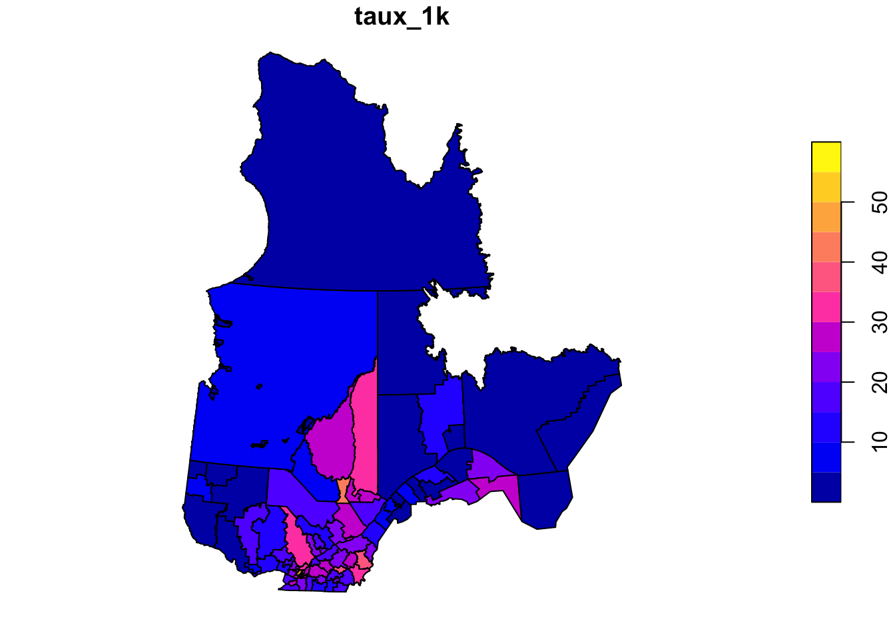
Previously, we modelled the logarithm of this rate as a linear function of the logarithm of population density, with the residual variance correlated among neighbouring units via a CAR (conditional autoregression) structure, as shown in the code below.
library(spdep)
library(spatialreg)
rls_nb <- poly2nb(rls_covid)
rls_w <- nb2listw(rls_nb, style = "B")
car_lm <- spautolm(log(taux_1k) ~ log(dens_pop), data = rls_covid,
listw = rls_w, family = "CAR")
summary(car_lm)
Call: spautolm(formula = log(taux_1k) ~ log(dens_pop), data = rls_covid,
listw = rls_w, family = "CAR")
Residuals:
Min 1Q Median 3Q Max
-1.201858 -0.254084 -0.053348 0.281482 1.427053
Coefficients:
Estimate Std. Error z value Pr(>|z|)
(Intercept) 1.702068 0.168463 10.1035 < 2.2e-16
log(dens_pop) 0.206623 0.032848 6.2903 3.169e-10
Lambda: 0.15762 LR test value: 23.991 p-value: 9.6771e-07
Numerical Hessian standard error of lambda: 0.0050486
Log likelihood: -80.68953
ML residual variance (sigma squared): 0.2814, (sigma: 0.53048)
Number of observations: 95
Number of parameters estimated: 4
AIC: 169.38As a reminder, the poly2nb function in the spdep package creates a list of neighbours based on bordering polygons in a shapefile, then the nb2listw converts it to a list of weights, here binary weights (style = "B") so that each bordering region receives the same weight of 1 in the autoregressive model.
Instead of using the rates, it would be possible to model the cases directly (column “cas” in the dataset) with a Poisson regression, which is appropriate for count data. To account for the fact that if the risk per person were equal, cases would be proportional to population, we can add the unit’s population pop as an offset in the Poisson regression. Therefore, the model would look like: cas ~ log(dens_pop) + offset(log(pop)). Note that since the Poisson regression uses a logarithmic link, that model with log(pop) as an offset assumes that log(cas / pop) (so the log rate) is proportional to log(dens_pop), just like the linear model above, but it has the advantage of modelling the stochasticity of the raw data (the number of cases) directly with a Poisson distribution.
We do not have the population in this data, but we can estimate it from the cases and the rate (cases / 1000) as follows:
rls_covid$pop <- rls_covid$cas / rls_covid$taux_1k * 1000To define a CAR model in spaMM, we need a weights matrix rather than a list of weights as in the spatialreg package. Fortunately, the spdep package also includes a function nb2mat to convert the neighbours list to a matrix of weights, here again using binary weights. To avoid a warning, we specify the row and column names of that matrix to be equal to the IDs associated with each unit (RLS_code). Then, we add a term adjacency(1 | RLS_code) to the model to specify that the residual variation between different groups defined by RLS_code is spatially correlated with a CAR structure (here, each group has only one observation since we have one data point by RLS unit).
library(spaMM)
rls_mat <- nb2mat(rls_nb, style = "B")
rownames(rls_mat) <- rls_covid$RLS_code
colnames(rls_mat) <- rls_covid$RLS_code
rls_spamm <- fitme(cas ~ log(dens_pop) + offset(log(pop)) + adjacency(1 | RLS_code),
data = rls_covid, adjMatrix = rls_mat, family = poisson)
summary(rls_spamm)formula: cas ~ log(dens_pop) + offset(log(pop)) + adjacency(1 | RLS_code)
Estimation of corrPars and lambda by ML (p_v approximation of logL).
Estimation of fixed effects by ML (p_v approximation of logL).
Estimation of lambda by 'outer' ML, maximizing logL.
family: poisson( link = log )
------------ Fixed effects (beta) ------------
Estimate Cond. SE t-value
(Intercept) -5.1618 0.16855 -30.625
log(dens_pop) 0.1999 0.03267 6.119
--------------- Random effects ---------------
Family: gaussian( link = identity )
--- Correlation parameters:
1.rho
0.1576605
--- Variance parameters ('lambda'):
lambda = var(u) for u ~ Gaussian;
RLS_code : 0.266
# of obs: 95; # of groups: RLS_code, 95
------------- Likelihood values -------------
logLik
logL (p_v(h)): -709.3234Note that the spatial correlation coefficient rho (0.158) is similar to the equivalent quantity in the spautolm model above, where it was called Lambda. The effect of log(dens_pop) is also approximately 0.2 in both models.
Reference
Moraga, Paula (2019) Geospatial Health Data: Modeling and Visualization with R-INLA and Shiny. Chapman & Hall/CRC Biostatistics Series. Available online at https://www.paulamoraga.com/book-geospatial/.
16 Statistiques spatiales en écologie
BIOS² a organisé une session de formation en ligne sur l’analyse statistique des données spatiales en écologie, animée par le Pr. Philippe Marchand (UQAT). Cette formation de 12 heures s’est déroulée en 4 sessions : 12, 14, 19 & 21 janvier (2021) de 13h00 à 16h00 HNE.
Le contenu comprenait trois types d’analyses statistiques spatiales et leurs applications en écologie : (1) l’analyse des patrons de points qui permet d’étudier la distribution d’individus ou d’événements dans l’espace; (2) les modèles géostatistiques qui représentent la corrélation spatiale de variables échantillonnées à des points géoréférencés; et (3) les modèles de données aréales, qui s’appliquent aux mesures prises sur des régions de l’espace et qui représentent les liens spatiaux par le biais de réseaux de voisinage. La formation comprenait également des exercices pratiques utilisant l’environnement de programmation statistique R.
Philippe Marchand est professeur d’écologie et de biostatistique à l’Institut de recherche sur les forêts, Université du Québec en Abitibi-Témiscamingue (UQAT) et membre académique de BIOS². Ses travaux de recherche portent sur la modélisation de processus qui influencent la distribution spatiale des populations, incluant: la dispersion des graines et l’établissement des semis, le mouvement des animaux, et la propagation des épidémies forestières.
Si vous souhaitez consulter le matériel pédagogique et suivre les exercices à votre propre rythme, vous pouvez y accéder par ce lien. Une connaissance de base des modèles de régression linéaire et une expérience de l’ajustement de ces modèles dans R sont recommandées. Le repositoire original se trouve ici.
Plan du cours
17 Introduction aux statistiques spatiales
Types d’analyses spatiales
Dans le cadre de cette formation, nous discuterons de trois types d’analyses spatiales: l’analyse des patrons de points, les modèles géostatistiques et les modèles de données aréales.
Dans l’analyse des patrons de points, nous avons des données ponctuelles représentant la position d’individus ou d’événements dans une région d’étude et nous supposons que tous les individus ou événements ont été recensés dans cette région. Cette analyse s’intéresse à la distribution des positions des points eux-mêmes. Voici quelques questions typiques de l’analyse des patrons de points:
Les points sont-ils disposés aléatoirement ou agglomérés?
Deux types de points sont-ils disposés indépendamment?
Les modèles géostatistiques visent à représenter la distribution spatiale de variables continues qui sont mesurés à certains points d’échantillonnage. Ils supposent que les mesures de ces variables à différents points sont corrélées en fonction de la distance entre ces points. Parmi les applications des modèles géostatistiques, notons le lissage des données spatiales (ex.: produire une carte d’une variable sur l’ensemble d’une région en fonction des mesures ponctuelles) et la prédiction de ces variables pour des points non-échantillonnés.
Les données aréales sont des mesures prises non pas à des points, mais pour des régions de l’espace représentées par des polygones (ex.: divisions du territoire, cellules d’une grille). Les modèles représentant ces types de données définissent un réseau de voisinage reliant les régions et incluent une corrélation spatiale entre régions voisines.
Stationnarité et isotropie
Plusieurs analyses spatiales supposent que les variables sont stationnaires dans l’espace. Comme pour la stationnarité dans le domaine temporel, cette propriété signifie que les statistiques sommaires (moyenne, variance et corrélations entre mesures d’une variable) ne varient pas avec une translation dans l’espace. Par exemple, la corrélation spatiale entre deux points peut dépendre de la distance les séparant, mais pas de leur position absolue.
En particulier, il ne peut pas y avoir de tendance à grande échelle (souvent appelée gradient dans un contexte spatial), ou bien cette tendance doit être prise en compte afin de modéliser la corrélation spatiale des résidus.
Dans le cas de l’analyse des patrons de points, la stationnarité (aussi appelée homogénéité dans ce contexte) signifie que la densité des points ne suit pas de tendance à grande échelle.
Dans un modèle statistique isotropique, les corrélations spatiales entre les mesures à deux points dépendent seulement de la distance entre ces points, pas de la direction. Dans ce cas, les statistiques sommaires ne varient pas si on effectue une rotation dans l’espace.
Données géoréférencées
Les études environnementales utilisent de plus en plus de données provenant de sources de données géospatiales, c’est-à-dire des variables mesurées sur une grande partie du globe (ex.: climat, télédétection). Le traitement de ces données requiert des concepts liés aux systèmes d’information géographique (SIG), qui ne sont pas couverts dans cet atelier, alors que nous nous concentrons sur les aspects statistiques de données variant dans l’espace.
L’utilisation de données géospatiales ne signifie pas nécessairement qu’il faut avoir recours à des statistiques spatiales. Par exemple, il est courant d’extraire les valeurs de ces variables géographiques à des points d’étude pour expliquer une réponse biologique observée sur le terrain. Dans ce cas, l’utilisation de statistiques spatiales est seulement nécessaire en présence d’une corrélation spatiale dans les résidus, après avoir tenu compte de l’effet des prédicteurs.
18 Analyse des patrons de points
Patron de points et processus ponctuel
Un patron de points (point pattern) décrit la position spatiale (le plus souvent en 2D) d’individus ou d’événements, représentés par des points, dans une aire d’étude donnée, souvent appelée la fenêtre d’observation.
On suppose que chaque point a une étendue spatiale négligeable par rapport aux distances entre les points. Des méthodes plus complexes existent pour traiter des patrons spatiaux d’objets qui ont une largeur non-néligeable, mais ce sujet dépasse la portée de cet atelier.
Un processus ponctuel (point process) est un modèle statistique qui peut être utilisé pour simuler des patrons de points ou expliquer un patron de points observé.
Structure spatiale totalement aléatoire
Une structure spatiale totalement aléatoire (complete spatial randomness) est un des patrons les plus simples, qui sert de modèle nul pour évaluer les caractéristiques de patrons de points réels. Dans ce patron, la présence d’un point à une position donnée est indépendante de la présence de points dans un voisinage.
Le processus créant ce patron est un processus de Poisson homogène. Selon ce modèle, le nombre de points dans toute région de superficie \(A\) suit une distribution de Poisson: \(N(A) \sim \text{Pois}(\lambda A)\), où \(\lambda\) est l’intensité du processus (i.e. la densité de points). \(N\) est indépendant entre deux régions disjointes, peu importe comment ces régions sont définies.
Dans le graphique ci-dessous, seul le patron à droite est totalement aléatoire. Le patron à gauche montre une agrégation des points (probabilité plus grande d’observer un point si on est à proximité d’un autre point), tandis que le patron du centre montre une répulsion (faible probabilité d’observer un point très près d’un autre).
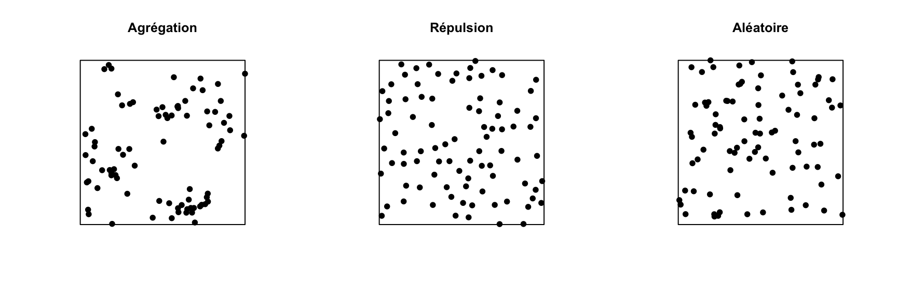
Analyse exploratoire ou inférentielle pour un patron de points
Plusieurs statistiques sommaires sont utilisées pour décrire les caractéristiques un patron de points. La plus simple est l’intensité \(\lambda\), qui comme mentionné plus haut représente la densité de points par unité de surface. Si le patron de points est hétérogène, l’intensité n’est pas constante, mais dépend de la position: \(\lambda(x, y)\).
Par rapport à l’intensité qui est une statistique dite de premier ordre, les statistiques de second ordre décrivent comment la probabilité de présence d’un point dans une région dépend de la présence d’autres points. L’indice \(K\) de Ripley présenté dans la prochaine section est un exemple de statistique sommaire de second ordre.
Les inférences statistiques réalisées sur des patrons de points consistent habituellement à tester l’hypothèse que le patron de points correspond à un modèle nul donné, par exemple une structure spatiale totalement aléatoire, ou un modèle nul plus complexe. Même pour les modèles nuls les plus simples, nous connaissons rarement la distribution théorique pour une statistique sommaire du patron de points sous le modèle nul. Les tests d’hypothèses sur les patrons de points sont donc réalisés par simulation: on simule un grand nombre de patrons de points à partir du modèle nul et on compare la distribution des statistiques sommaires qui nous intéressent pour ces simulations à la valeur des statistiques pour le patron de points observé.
Indice \(K\) de Ripley
L’indice de Ripley \(K(r)\) est défini comme le nombre moyen de points se trouvant dans un cercle de rayon \(r\) donné autour d’un point du patron, normalisé par l’intensité \(\lambda\).
Pour un patron totalement aléatoire, le nombre moyen de points dans un cercle de rayon \(r\) est \(\lambda \pi r^2\), donc en théorie \(K(r) = \pi r^2\) pour ce modèle nul. Une valeur de \(K(r)\) supérieure signifie qu’il y a agrégation des points à l’échelle \(r\), tandis qu’une valeur inférieure signifie qu’il y a une répulsion.
En pratique, \(K(r)\) est estimé pour un patron de points donné par l’équation:
\[ K(r) = \frac{A}{n(n-1)} \sum_i \sum_{j > i} I \left( d_{ij} \le r \right) w_{ij}\]
où \(A\) est l’aire de la fenêtre d’observation et \(n\) est le nombre de points du patron, donc \(n(n-1)\) est le nombre de paires de points distinctes. On fait la somme pour toutes les paires de points de la fonction indicatrice \(I\), qui prend une valeur de 1 si la distance entre les points \(i\) et \(j\) est inférieure ou égale à \(r\). Finalement, le terme \(w_{ij}\) permet de donner un poids supplémentaire à certaines paires de points pour tenir compte des effets de bordure, tel que discuté dans la section suivante.
Par exemple, les graphiques ci-dessous présentent la fonction estimée \(K(r)\) pour les patrons illustrés ci-dessus, pour des valeurs de \(r\) allant jusqu’à 1/4 de la largeur de la fenêtre. La courbe pointillée rouge indique la valeur théorique pour une structure spatiale totalement aléatoire et la zone grise est une “enveloppe” produite par 99 simulations de ce modèle nul. Le patron agrégé montre un excès de voisins jusqu’à \(r = 0.25\) et le patron avec répulsion montre un déficit significatif de voisins pour les petites valeurs de \(r\).
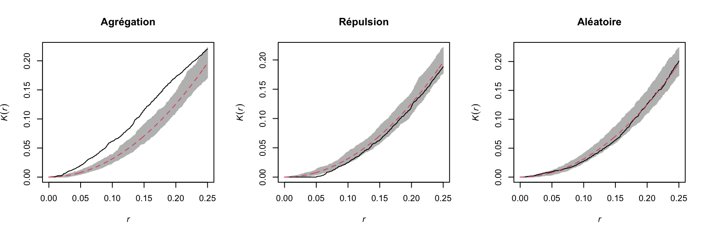
Outre le \(K\), il existe d’autres statistiques pour décrire les propriétés de second ordre du patron, par exemple la distance moyenne entre un point et ses \(N\) plus proches voisins. Vous pouvez consulter le manuel de Wiegand et Moloney (2013) suggéré en référence pour en apprendre plus sur différentes statistiques sommaires des patrons de points.
Effets de bordure
Dans le contexte de l’analyse de patrons de points, l’effet de bordure (“edge effect”) est dû au fait que nous avons une connaissance incomplète du voisinage des points près du bord de la fenêtre d’observation, ce qui peut induire un biais dans le calcul des statistiques comme le \(K\) de Ripley.
Différentes méthodes ont été développées pour corriger le biais dû aux effets de bordure. Selon la méthode de Ripley, la contribution d’un voisin \(j\) situé à une distance \(r\) d’un point \(i\) reçoit un poids \(w_{ij} = 1/\phi_i(r)\), où \(\phi_i(r)\) est la fraction du cercle de rayon \(r\) autour de \(i\) contenu dans la fenêtre d’observation. Par exemple, si 2/3 du cercle se trouve dans la fenêtre, ce voisin compte pour 3/2 voisins dans le calcul d’une statistique comme \(K\).
La méthode de Ripley est une des plus simples pour corriger les effets de bordure, mais n’est pas nécessairement la plus efficace; notamment, les poids plus grands donnés à certaines paires de points tend à accroître la variance du calcul de la statistique. D’autres méthodes de correction sont présentées dans les manuels spécialisés, comme celui de Wiegand et Moloney (2013) en référence.
Exemple
Pour cet exemple, nous utilisons le jeu de données semis_xy.csv, qui représente les coordonnées \((x, y)\) de semis de deux espèces (sp, B = bouleau et P = peuplier) dans une placette de 15 x 15 m.
semis <- read.csv("data/semis_xy.csv")
head(semis) x y sp
1 14.73 0.05 P
2 14.72 1.71 P
3 14.31 2.06 P
4 14.16 2.64 P
5 14.12 4.15 B
6 9.88 4.08 BLe package spatstat permet d’effectuer des analyses de patrons de point dans R. La première étape consiste à transformer notre tableau de données en objet ppp (patron de points) avec la fonction du même nom. Dans cette fonction, nous spécifions quelles colonnes contiennent les coordonnées x et y ainsi que les marques (marks), qui seront ici les codes d’espèce. Il faut aussi spécifier une fenêtre d’observation (window) à l’aide de la fonction owin, à laquelle nous indiquons les limites de la placette en x et y.
library(spatstat)
semis <- ppp(x = semis$x, y = semis$y, marks = as.factor(semis$sp),
window = owin(xrange = c(0, 15), yrange = c(0, 15)))
semisMarked planar point pattern: 281 points
Multitype, with levels = B, P
window: rectangle = [0, 15] x [0, 15] unitsLes marques peuvent être numériques ou catégorielles. Notez que pour des marques catégorielles comme c’est le cas ici, il faut convertir explicitement la variable en facteur.
La fonction plot appliquée à un patron de points montre un diagramme du patron.
plot(semis)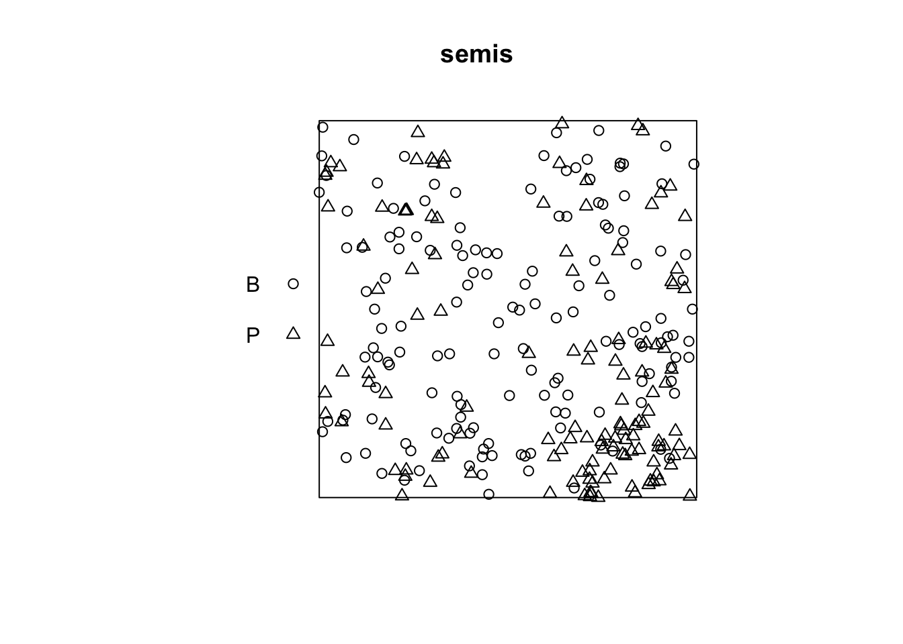
La fonction intensity calcule la densité des points de chaque espèce par unité de surface, ici en \(m^2\).
intensity(semis) B P
0.6666667 0.5822222 Pour analyser d’abord séparément la distribution de chaque espèce, nous séparons le patron avec split. Puisque le patron contient des marques catégorielles, la séparation se fait automatiquement en fonction de la valeur des marques. Le résultat est une liste de deux patrons de points.
semis_split <- split(semis)
plot(semis_split)
La fonction Kest calcule le \(K\) de Ripley pour une série de distances allant (par défaut) jusqu’à 1/4 de la largeur de la fenêtre. Ici, nous l’appliquons au premier patron (bouleau) en choisissant semis_split[[1]]. Notez que les doubles crochets sont nécessaires pour choisir un élément d’une liste dans R.
L’argument correction = "iso" indique d’appliquer la méthode de Ripley pour corriger les effets de bordure.
k <- Kest(semis_split[[1]], correction = "iso")
plot(k)
Selon ce graphique, il semble y avoir une excès de voisins à partir d’un rayon de 1 m. Pour vérifier s’il s’agit d’un écart significatif, nous produisons une enveloppe de simulation avec la fonction envelope. Le permier argument d’envelope est un patron de point auquel les simulations seront comparées, le deuxième une fonction à calculer (ici, Kest) pour chaque patron simulé, puis on y ajoute les arguments de la fonction Kest (ici, seulement correction).
plot(envelope(semis_split[[1]], Kest, correction = "iso"))Generating 99 simulations of CSR ...
1, 2, 3, 4, 5, 6, 7, 8, 9, 10, 11, 12, 13, 14, 15, 16, 17, 18, 19, 20, 21, 22, 23, 24, 25, 26, 27, 28, 29, 30, 31, 32, 33, 34, 35, 36, 37, 38, 39, 40,
41, 42, 43, 44, 45, 46, 47, 48, 49, 50, 51, 52, 53, 54, 55, 56, 57, 58, 59, 60, 61, 62, 63, 64, 65, 66, 67, 68, 69, 70, 71, 72, 73, 74, 75, 76, 77, 78, 79, 80,
81, 82, 83, 84, 85, 86, 87, 88, 89, 90, 91, 92, 93, 94, 95, 96, 97, 98, 99.
Done.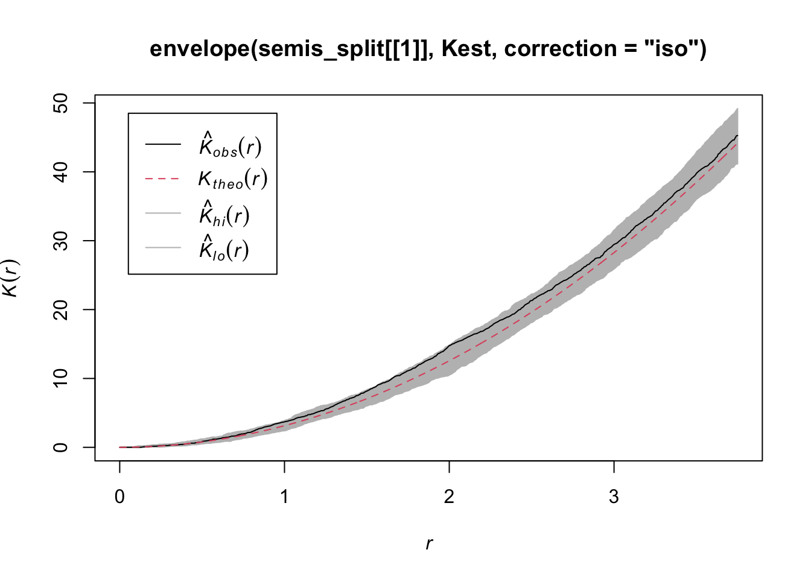
Tel qu’indiqué par le message, cette fonction effectue par défaut 99 simulations de l’hypothèse nulle correspondant à une structure spatiale totalement aléatoire (CSR, pour complete spatial randomness).
La courbe observée sort de l’enveloppe des 99 simulations près de \(r = 2\). Il faut être prudent de ne pas interpréter trop rapidement un résultat sortant de l’enveloppe. Même s’il y a environ une probabilité de 1% d’obtenir un résultat plus extrême selon l’hypothèse nulle à une distance donnée, l’enveloppe est calculée pour un grand nombre de valeurs de la distance et nous n’effectuons pas de correction pour les comparaisons multiples. Ainsi, un écart significatif pour une très petite plage de valeurs de \(r\) peut être simplement dû au hasard.
Exercice 1
En regardant le graphique du deuxième patron de points (semis de peuplier), pouvez-vous prédire où se situera le \(K\) de Ripley par rapport à l’hypothèse nulle d’une structure spatiale totalement aléatoire? Vérifiez votre prédiction en calculant le \(K\) de Ripley pour ce patron de points dans R.
Effet de l’hétérogénéité
Le graphique ci-dessous illustre un patron de points hétérogène, c’est-à-dire qu’il présente un gradient d’intensité (plus de points à gauche qu’à droite).
Un gradient de densité peut être confondu avec une agrégation des points, comme on peut voir sur le graphique du \(K\) de Ripley correspondant. En théorie, il s’agit de deux processus différents:
Hétérogénéité: La densité de points varie dans la région d’étude, par exemple dû au fait que certaines conditions locales sont plus propices à la présence de l’espèce étudiée.
Agrégation: La densité moyenne des points est homogène, mais la présence d’un point augmente la présence d’autre points dans son voisinage, par exemple en raison d’interactions positives entre les individus.
Cependant, il peut être difficile de différencier les deux en pratique, surtout que certains patrons peuvent être à la fois hétérogènes et agrégés.
Prenons l’exemple des semis de peuplier de l’exercice précédent. La fonction density appliquée à un patron de points effectue une estimation par noyau (kernel density estimation) de la densité des semis à travers la placette. Par défaut, cette fonction utilise un noyau gaussien avec un écart-type sigma spécifié dans la fonction, qui détermine l’échelle à laquelle les fluctuations de densité sont “lissées”. Ici, nous utilisons une valeur de 2 m pour sigma et nous représentons d’abord la densité estimée avec plot, avant d’y superposer les points (add = TRUE signifie que les points sont ajoutés au graphique existant plutôt que de créer un nouveau graphique).
dens_p <- density(semis_split[[2]], sigma = 2)
plot(dens_p)
plot(semis_split[[2]], add = TRUE)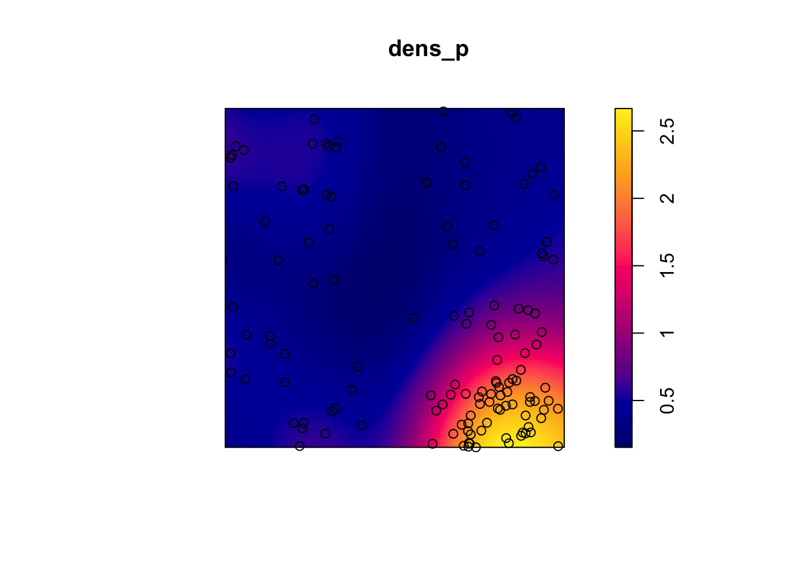
Pour mesurer l’agrégation ou la répulsion des points d’un patron hétérogène, nous devons utilisé la version non-homogène de la statistique \(K\) (Kinhom dans spatstat). Cette statistique est toujours égale au nombre moyen de voisins dans un rayon \(r\) d’un point du patron, mais plutôt que de normaliser ce nombre par l’intensité globale du patron, il est normalisé par l’estimation locale de la densité de points. Comme ci-dessus, nous spécifions sigma = 2 pour contrôler le niveau de lissage de l’estimation de la densité variable.
plot(Kinhom(semis_split[[2]], sigma = 2, correction = "iso"))
En tenant compte de l’hétérogénéité du patron à une échelle sigma de 2 m, il semble donc y avoir un déficit de voisins à partir d’environ 1.5 m des points du patron. Il reste à voir si cette déviation est significative.
Comme précédemment, nous utilisons envelope pour simuler la statistique Kinhom sous le modèle nul. Cependant, ici le modèle nul n’est pas un processus de Poisson homogène (structure spatiale totalement aléatoire). Il s’agit plutôt d’un processus de Poisson hétérogène simulé par la fonction rpoispp(dens_p), c’est-à-dire que les points sont indépendants les uns des autres, mais leur densité est hétérogène et donnée par dens_p. L’argument simulate de la fonction envelope permet de spécifier une fonction utilisée pour les simulations sous le modèle nul; cette fonction doit avoir un argument, ici x, même s’il n’est pas utilisé.
Finalement, en plus des arguments nécessaires pour Kinhom, soit sigma et correction, nous spécifions aussi nsim = 199 pour réaliser 199 simulations et nrank = 5 pour éliminer les 5 résultats les plus extrêmes de chaque côté de l’enveloppe, donc les 10 plus extrêmes sur 199, pour réaliser un intervalle contenant environ 95% de la probabilité sous l’hypothèse nulle.
khet_p <- envelope(semis_split[[2]], Kinhom, sigma = 2, correction = "iso",
nsim = 199, nrank = 5, simulate = function(x) rpoispp(dens_p))Generating 199 simulations by evaluating function ...
1, 2, 3, 4.6.8.10.12.14.16.18.20.22.24.26.28.30.32.34.36.38.40
.42.44.46.48.50.52.54.56.58.60.62.64.66.68.70.72.74.76.78.80
.82.84.86.88.90.92.94.96.98.100.102.104.106.108.110.112.114.116.118.120
.122.124.126.128.130.132.134.136.138.140.142.144.146.148.150.152.154.156.158.160
.162.164.166.168.170.172.174.176.178.180.182.184.186.188.190.192.194.196.198 199.
Done.plot(khet_p)
Note: Pour un test d’hypothèse basé sur des simulations d’une hypothèse nulle, la valeur \(p\) est estimée par \((m + 1)/(n + 1)\), où \(n\) est le nombre de simulations et \(m\) est le nombre de simulations où la valeur de la statistique est plus extrême que celle des données observées. C’est pour cette raison qu’on choisit un nombre de simulations comme 99, 199, etc.
Exercice 2
Répétez l’estimation de la densité hétérogène et le calcul de Kinhom avec un écart-type sigma de 5 plutôt que 2. Comment le niveau de lissage pour la densité influence-t-il les conclusions?
Pour différencier une variation de densité des points et d’une interaction (agrégation ou répulsion) entre ces points avec ce type d’analyse, il faut généralement supposer que les deux processus opèrent à différentes échelles. Typiquement, nous pouvons tester si les points sont agrégés à petite échelle après avoir tenu compte d’une variation de la densité à une échelle plus grande.
Relation entre deux patrons de points
Considérons un cas où nous avons deux patrons de points, par exemple la position des arbres de deux espèces dans une parcelle (points oranges et verts dans le graphique ci-dessous). Chacun des deux patrons peut présenter ou non des agrégations de points.

Sans égard à cette agrégation au niveau de l’espèce, nous voulons déterminer si les deux espèces sont disposées indépendamment. Autrement dit, la probabilité d’observer un arbre d’une espèce dépend-elle de la présence d’un arbre de l’autre espèce à une distance donnée?
La version bivariée du \(K\) de Ripley permet de répondre à cette question. Pour deux patrons désignés 1 et 2, l’indice \(K_{12}(r)\) calcule le nombre moyen de points du patron 2 dans un rayon \(r\) autour d’un point du patron 1, normalisé par la densité du patron 2.
En théorie, cet indice est symétrique, donc \(K_{12}(r) = K_{21}(r)\) et le résultat serait le même si on choisit les points du patron 1 ou 2 comme points “focaux” pour l’analyse. Cependant, l’estimation des deux quantités pour un patron observé peut différer, notamment en raison des effets de bord. La variabilité peut aussi être différente pour \(K_{12}\) et \(K_{21}\) entre les simulations d’un modèle nul, donc le test de l’hypothèse nulle peut avoir une puissance différente selon le choix de l’espèce focale.
Le choix d’un modèle nul approprié est important ici. Afin de déterminer s’il existe une attraction ou une répulsion significative entre les deux patrons, il faut déplacer aléatoirement la position d’un des patrons relative à celle de l’autre patron, tout en conservant la structure spatiale de chaque patron pris isolément.
Une des façons d’effectuer cette randomisation consiste à décaler l’un des deux patrons horizontalement et/ou verticalement d’une distance aléatoire. La partie du patron qui “sort” d’un côté de la fenêtre est rattachée de l’autre côté. Cette méthode s’appelle une translation toroïdale (toroidal shift), car en connectant le haut et le bas ainsi que la gauche et la droite d’une surface rectangulaire, on obtient la forme d’un tore (un “beigne” en trois dimensions).
Le graphique ci-dessus illustre une translation du patron vert vers la droite, tandis que le patron orange reste au même endroit. Les points verts dans la zone ombragée sont ramenés de l’autre côté. Notez que si cette méthode préserve de façon générale la structure de chaque patron tout en randomisant leur position relative, elle peut comporter certains inconvénients, comme de diviser des amas de points qui se trouvent près du point de coupure.
Vérifions maintenant s’il y a une dépendance entre la position des deux espèces (bouleau et peuplier) dans notre placette. La fonction Kcross calcule l’indice bivarié \(K_{ij}\), il faut spécifier quel type de point est considéré comme l’espèce focale \(i\) et l’espèce voisine \(j\).
plot(Kcross(semis, i = "P", j = "B", correction = "iso"))Ici, le \(K\) observé est inférieur à la valeur théorique, indiquant une répulsion possible des deux patrons.
Pour déterminer l’enveloppe du \(K\) selon l’hypothèse nulle d’indépendance des deux patrons, nous devons spécifier que les simulations doivent être basées sur une translation des patrons. Nous indiquons que les simulations doivent utiliser la fonction rshift (translation aléatoire) avec l’argument simulate = function(x) rshift(x, which = "B"); ici, l’argument x de simulate correspond au patron de points original et l’argument which indique quel type de points subit la translation. Comme pour le cas précédent, il faut répéter dans la fonction envelope les arguments nécessaires pour Kcross, soit i, j et correction.
plot(envelope(semis, Kcross, i = "P", j = "B", correction = "iso",
nsim = 199, nrank = 5, simulate = function(x) rshift(x, which = "B")))Generating 199 simulations by evaluating function ...
1, 2, 3, 4.6.8.10.12.14.16.18.20.22.24.26.28.30.32.34.36.38.40
.42.44.46.48.50.52.54.56.58.60.62.64.66.68.70.72.74.76.78.80
.82.84.86.88.90.92.94.96.98.100.102.104.106.108.110.112.114.116.118.120
.122.124.126.128.130.132.134.136.138.140.142.144.146.148.150.152.154.156.158.160
.162.164.166.168.170.172.174.176.178.180.182.184.186.188.190.192.194.196.198 199.
Done.
Ici, la courbe observée se situe totalement dans l’enveloppe, donc nous ne rejetons pas l’hypothèse nulle d’indépendance des deux patrons.
Questions
Quelle raison pourrait justifier ici notre choix d’effectuer la translation des points du bouleau plutôt que du peuplier?
Est-ce que les simulations générées par translation aléatoire constitueraient un bon modèle nul si les deux patrons étaient hétérogènes?
Patrons de points marqués
Le jeu de données fir.csv contient les coordonnées \((x, y)\) de 822 sapins dans une placette d’un hectare et leur statut (A = vivant, D = mort) suivant une épidémie de tordeuse des bourgeons de l’épinette.
fir <- read.csv("data/fir.csv")
head(fir) x y status
1 31.50 1.00 A
2 85.25 30.75 D
3 83.50 38.50 A
4 84.00 37.75 A
5 83.00 33.25 A
6 33.25 0.25 Afir <- ppp(x = fir$x, y = fir$y, marks = as.factor(fir$status),
window = owin(xrange = c(0, 100), yrange = c(0, 100)))
plot(fir)
Supposons que nous voulons vérifier si la mortalité des sapins est indépendante ou corrélée entre arbres rapprochés. En quoi cette question diffère-t-elle de l’exemple précédent où nous voulions savoir si la position des points de deux espèces était indépendante?
Dans l’exemple précédent, l’indépendance ou l’interaction entre les espèces référait à la formation du patron lui-même (que des semis d’une espèce s’établissent ou non à proximité de ceux de l’autre espèce). Ici, la caractéristique qui nous intéresse (survie des sapins) est postérieure à l’établissement du patron, en supposant que tous ces arbres étaient vivants d’abord et que certains sont morts suite à l’épidémie. Donc nous prenons la position des arbres comme fixe et nous voulons savoir si la distribution des statuts (mort, vivant) entre ces arbres est aléatoire ou présente un patron spatial.
Dans le manuel de Wiegand et Moloney, la première situation (établissement de semis de deux espèces) est appelé patron bivarié, donc il s’agit vraiment de deux patrons qui interagissent, tandis que la deuxième est un seul patron avec une marque qualitative. Le package spatstat dans R ne fait pas de différences entre les deux au niveau de la définition du patron (les types de points sont toujours représentés par l’argument marks), mais les méthodes d’analyse appliquées aux deux questions diffèrent.
Dans le cas d’un patron avec une marque qualitative, nous pouvons définir une fonction de connexion de marques (mark connection function) \(p_{ij}(r)\). Pour deux points séparés par une distance \(r\), cette fonction donne la probabilité que le premier point porte la marque \(i\) et le deuxième la marque \(j\). Selon l’hypothèse nulle où les marques sont indépendantes, cette probabilité est égale au produit des proportions de chaque marque dans le patron entier, \(p_{ij}(r) = p_i p_j\) indépendamment de \(r\).
Dans spatstat, la fonction de connexion de marques est calculée avec la fonction markconnect, où il faut spécifier les marques \(i\) et \(j\) ainsi que le type de correction des effets de bord. Dans notre exemple, nous voyons que deux points rapprochés ont moins de chance d’avoir une statut différent (A et D) que prévu selon l’hypothèse de distribution aléatoire et indépendante des marques (ligne rouge pointillée).
plot(markconnect(fir, i = "A", j = "D", correction = "iso"))
Dans ce graphique, les ondulations dans la fonction sont dues à l’erreur d’estimation d’une fonction continue de \(r\) à partir d’un nombre limité de paires de points discrètes.
Pour simuler le modèle nul dans ce cas-ci, nous utilisons la fonction rlabel qui réassigne aléatoirement les marques parmi les points du patron, en maintenant la position des points.
plot(envelope(fir, markconnect, i = "A", j = "D", correction = "iso",
nsim = 199, nrank = 5, simulate = rlabel))Generating 199 simulations by evaluating function ...
1, 2, 3, 4.6.8.10.12.14.16.18.20.22.24.26.28.30.32.34.36.38.40
.42.44.46.48.50.52.54.56.58.60.62.64.66.68.70.72.74.76.78.80
.82.84.86.88.90.92.94.96.98.100.102.104.106.108.110.112.114.116.118.120
.122.124.126.128.130.132.134.136.138.140.142.144.146.148.150.152.154.156.158.160
.162.164.166.168.170.172.174.176.178.180.182.184.186.188.190.192.194.196.198 199.
Done.
Notez que puisque la fonction rlabel a un seul argument obligatoire correspondant au patron de points original, il n’était pas nécessaire de spécifier au long: simulate = function(x) rlabel(x).
Voici les résultats pour les paires d’arbres du même statut A ou D:
par(mfrow = c(1, 2))
plot(envelope(fir, markconnect, i = "A", j = "A", correction = "iso",
nsim = 199, nrank = 5, simulate = rlabel))Generating 199 simulations by evaluating function ...
1, 2, 3, 4.6.8.10.12.14.16.18.20.22.24.26.28.30.32.34.36.38.40
.42.44.46.48.50.52.54.56.58.60.62.64.66.68.70.72.74.76.78.80
.82.84.86.88.90.92.94.96.98.100.102.104.106.108.110.112.114.116.118.120
.122.124.126.128.130.132.134.136.138.140.142.144.146.148.150.152.154.156.158.160
.162.164.166.168.170.172.174.176.178.180.182.184.186.188.190.192.194.196.198 199.
Done.plot(envelope(fir, markconnect, i = "D", j = "D", correction = "iso",
nsim = 199, nrank = 5, simulate = rlabel))Generating 199 simulations by evaluating function ...
1, 2, 3, 4.6.8.10.12.14.16.18.20.22.24.26.28.30.32.34.36.38.40
.42.44.46.48.50.52.54.56.58.60.62.64.66.68.70.72.74.76.78.80
.82.84.86.88.90.92.94.96.98.100.102.104.106.108.110.112.114.116.118.120
.122.124.126.128.130.132.134.136.138.140.142.144.146.148.150.152.154.156.158.160
.162.164.166.168.170.172.174.176.178.180.182.184.186.188.190.192.194.196.198 199.
Done.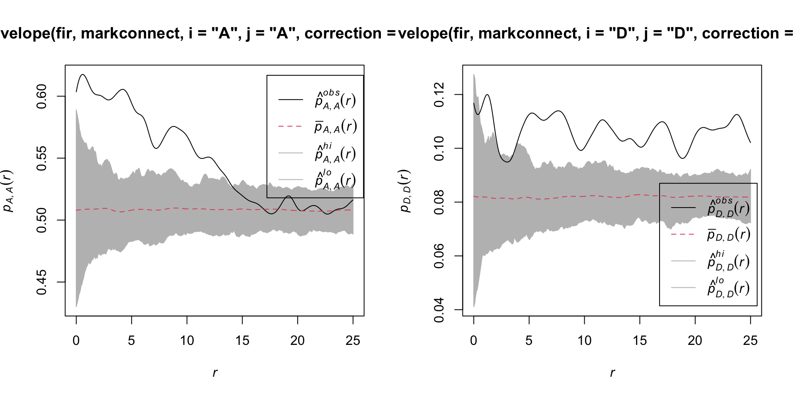
Il semble donc que la mortalité des sapins due à cette épidémie est agrégée spatialement, puisque les arbres situés à proximité l’un de l’autre ont une plus grande probabilité de partager le même statut que prévu par l’hypothèse nulle.
Références
Fortin, M.-J. et Dale, M.R.T. (2005) Spatial Analysis: A Guide for Ecologists. Cambridge University Press: Cambridge, UK.
Wiegand, T. et Moloney, K.A. (2013) Handbook of Spatial Point-Pattern Analysis in Ecology, CRC Press.
Le jeu de données du dernier exemple est tiré des données de la Forêt d’enseignement et de recherche du Lac Duparquet (FERLD), disponibles sur Dryad en suivant ce lien.
19 Solutions
Exercice 1
plot(envelope(semis_split[[2]], Kest, correction = "iso"))Generating 99 simulations of CSR ...
1, 2, 3, 4, 5, 6, 7, 8, 9, 10, 11, 12, 13, 14, 15, 16, 17, 18, 19, 20, 21, 22, 23, 24, 25, 26, 27, 28, 29, 30, 31, 32, 33, 34, 35, 36, 37, 38, 39, 40,
41, 42, 43, 44, 45, 46, 47, 48, 49, 50, 51, 52, 53, 54, 55, 56, 57, 58, 59, 60, 61, 62, 63, 64, 65, 66, 67, 68, 69, 70, 71, 72, 73, 74, 75, 76, 77, 78, 79, 80,
81, 82, 83, 84, 85, 86, 87, 88, 89, 90, 91, 92, 93, 94, 95, 96, 97, 98, 99.
Done.
Les semis de peuplier semblent significativement agrégés selon la valeur du \(K\).
Exercice 2
dens_p <- density(semis_split[[2]], sigma = 5)
plot(dens_p)
plot(semis_split[[2]], add = TRUE)khet_p <- envelope(semis_split[[2]], Kinhom, sigma = 5, correction = "iso",
nsim = 199, nrank = 5, simulate = function(x) rpoispp(dens_p))Generating 199 simulations by evaluating function ...
1, 2, 3, 4.6.8.10.12.14.16.18.20.22.24.26.28.30.32.34.36.38.40
.42.44.46.48.50.52.54.56.58.60.62.64.66.68.70.72.74.76.78.80
.82.84.86.88.90.92.94.96.98.100.102.104.106.108.110.112.114.116.118.120
.122.124.126.128.130.132.134.136.138.140.142.144.146.148.150.152.154.156.158.160
.162.164.166.168.170.172.174.176.178.180.182.184.186.188.190.192.194.196.198 199.
Done.plot(khet_p)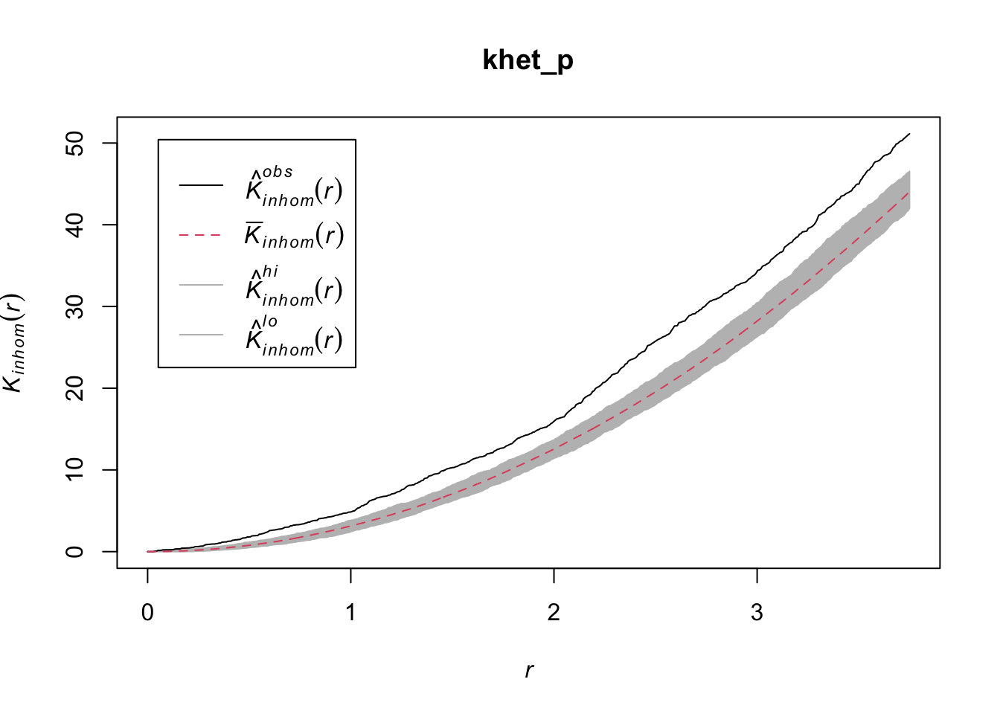
Ici, puisque nous estimons la variation de densité à une plus grande échelle, même après avoir tenu compte de cette variation, les semis de peuplier semblent agrégés à petite échelle.
20 Corrélation spatiale d’une variable
La corrélation entre les mesures d’une variable prises à des points rapprochés est une caractéristique dans de nombreux jeux de données. Ce principe est parfois appelé “première loi de la géographie” et exprimé par la citation de Waldo Tobler: “Everything is related to everything else, but near things are more related than distant things.” (Tout est relié, mais les choses rapprochées le sont davantage que celles éloignées).
En statistique, nous parlons souvent d’autocorrélation pour désigner la corrélation qui existe entre les mesures d’une même variable prises à différents moments (autocorrélation temporelle) ou différents lieux (autocorrélation spatiale).
Dépendance intrinsèque ou induite
Il existe deux types fondamentaux de dépendance spatiale sur une variable mesurée \(y\): une dépendance intrinsèque à \(y\), ou une dépendance induite par des variables externes influençant \(y\), qui sont elles-mêmes corrélées dans l’espace.
Par exemple, supposons que l’abondance d’une espèce soit corrélée entre deux sites rapprochés:
cette dépendance spatiale peut être induite si elle est due à une corrélation spatiale des facteurs d’habitat qui favorisent ou défavorisent l’espèce;
ou elle peut être intrinsèque si elle est due à la dispersion d’individus entre sites rapprochés.
Dans plusieurs cas, les deux types de dépendance affectent une variable donnée.
Si la dépendance est simplement induite et que les variables externes qui en sont la cause sont incluses dans le modèle expliquant \(y\), alors les résidus du modèle seront indépendants et nous pouvons utiliser toutes les méthodes déjà vues qui ignorent la dépendance spatiale.
Cependant, si la dépendance est intrinsèque ou due à des influences externes non-mesurées, alors il faudra tenir compte de la dépendance spatiale des résidus dans le modèle.
Différentes façons de modéliser les effets spatiaux
Dans cette formation, nous modéliserons directement les corrélations spatiales de nos données. Il est utile de comparer cette approche à d’autres façons d’inclure des aspects spatiaux dans un modèle statistique.
D’abord, nous pourrions inclure des prédicteurs dans le modèle qui représentent la position (ex.: longitude, latitude). De tels prédicteurs peuvent être utiles pour détecter une tendance ou un gradient systématique à grande échelle, que cette tendance soit linéaire ou non (par exemple, avec un modèle additif généralisé).
En contraste à cette approche, les modèles que nous verrons maintenant servent à modéliser une corrélation spatiale dans les fluctuations aléatoires d’une variable (i.e., dans les résidus après avoir enlevé tout effet systématique).
Les modèles mixtes utilisent des effets aléatoires pour représenter la non-indépendance de données sur la base de leur groupement, c’est-à-dire qu’après avoir tenu compte des effets fixes systématiques, les données d’un même groupe sont plus semblables (leur variation résiduelle est corrélée) par rapport aux données de groupes différents. Ces groupes étaient parfois définis selon des critères spatiaux (observations regroupées en sites).
Cependant, dans un contexte d’effet aléatoire de groupe, tous les groupes sont aussi différents les uns des autres, ex.: deux sites à 100 km l’un de l’autre ne sont pas plus ou moins semblables que deux sites distants de 2 km.
Les méthodes que nous verrons ici et dans les prochains parties de la formation nous permettent donc ce modéliser la non-indépendance sur une échelle continue (plus proche = plus corrélé) plutôt que seulement discrète (hiérarchie de groupements).
21 Modèles géostatistiques
La géostatistique désigne un groupe de techniques tirant leur origine en sciences de la Terre. Elle s’intéresse à des variables distribuées de façon continue dans l’espace, dont on cherche à estimer la distribution en échantillonnant un nombre de points. Un exemple classique de ces techniques provient du domaine minier, où l’on cherchait à créer une carte de la concentration du minerai sur un site à partir d’échantillons pris à différents points du site.
Pour ces modèles, nous supposerons que \(z(x, y)\) est une variable spatiale stationnaire mesurée selon les coordonnées \(x\) et \(y\).
Variogramme
Un aspect central de la géostatistique est l’estimation du variogramme \(\gamma_z\) de la variable \(z\). Le variogramme est égal à la moitié de l’écart carré moyen entre les valeurs de \(z\) pour deux points \((x_i, y_i)\) et \((x_j, y_j)\) séparés par une distance \(h\).
\[\gamma_z(h) = \frac{1}{2} \text{E} \left[ \left( z(x_i, y_i) - z(x_j, y_j) \right)^2 \right]_{d_{ij} = h}\]
Dans cette équation, la fonction \(\text{E}\) avec l’indice \(d_{ij}=h\) désigne l’espérance statistique (autrement dit, la moyenne) de l’écart au carré entre les valeurs de \(z\) pour les points séparés par une distance \(h\).
Si on préfère exprimer l’autocorrélation \(\rho_z(h)\) entre mesures de \(z\) séparées par une distance \(h\), celle-ci est reliée au variogramme par l’équation:
\[\gamma_z = \sigma_z^2(1 - \rho_z)\] ,
où \(\sigma_z^2\) est la variance globale de \(z\).
Notez que \(\gamma_z = \sigma_z^2\) si nous sommes à une distance où les mesures de \(z\) sont indépendantes, donc \(\rho_z = 0\). Dans ce cas, on voit bien que \(\gamma_z\) s’apparente à une variance, même s’il est parfois appelé “semivariogramme” ou “semivariance” en raison du facteur 1/2 dans l’équation ci-dessus.
Modèles théoriques du variogramme
Plusieurs modèles paramétriques ont été proposés pour représenter la corrélation spatiale en fonction de la distance entre points d’échantillonnage. Considérons d’abord une corrélation qui diminue de façon exponentielle:
\[\rho_z(h) = e^{-h/r}\]
Ici, \(\rho_z = 1\) pour \(h = 0\) et la corréaltion est multipliée par \(1/e \approx 0.37\) pour chaque augmentation de \(r\) de la distance. Dans ce contexte, \(r\) se nomme la portée (range) de la corrélation.
À partir de l’équation ci-dessus, nous pouvons calculer le variogramme correspondant.
\[\gamma_z(h) = \sigma_z^2 (1 - e^{-h/r})\]
Voici une représentation graphique de ce variogramme.
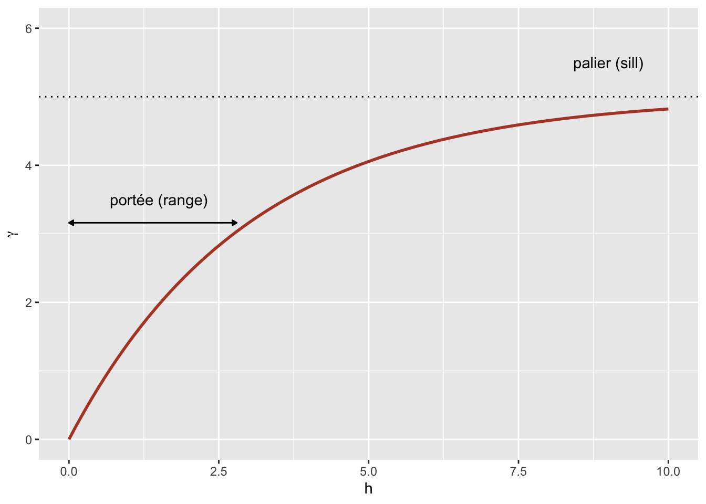
En raison de la fonction exponentielle, la valeur de \(\gamma\) à des grandes distances s’approche de la variance globale \(\sigma_z^2\) sans exactement l’atteindre. Cette asymptote est appelée palier (sill) dans le contexte géostatistique et représentée par le symbole \(s\).
Finalement, il n’est parfois pas réaliste de supposer une corrélation parfaite lorsque la distance tend vers 0, en raison d’une variation possible de \(z\) à très petite échelle. On peut ajouter au modèle un effet de pépite (nugget), noté \(n\), pour que \(\gamma\) s’approche de \(n\) (plutôt que 0) si \(h\) tend vers 0. Le terme pépite provient de l’origine minière de ces techniques, où une pépite d’un minerai pourrait être la source d’une variation abrupte de la concentration à petite échelle.
En ajoutant l’effet de pépite, le reste du variogramme est “compressé” pour conserver le même palier, ce qui résulte en l’équation suivante.
\[\gamma_z(h) = n + (s - n) (1 - e^{-h/r})\]
Dans le package gstat que nous utiliserons ci-dessous, le terme \((s - n)\) est le palier partiel (partial sill, ou psill) pour la partie exponentielle.
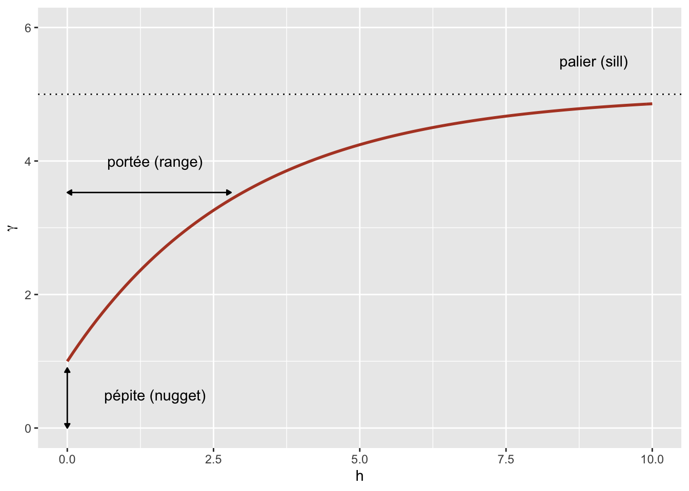
En plus du modèle exponentiel, deux autres modèles théoriques courants pour le variogramme sont le modèle gaussien (où la corrélation suit une courbe demi-normale), ainsi que le modèle sphérique (où le variogramme augmente de façon linéaire au départ pour ensuite courber et atteindre le palier à une distance égale à sa portée \(r\)). Le modèle sphérique permet donc à la corrélation d’être exactement 0 à grande distance, plutôt que de s’approcher graduellement de zéro dans le cas des autres modèles.
| Modèle | \(\rho(h)\) | \(\gamma(h)\) |
|---|---|---|
| Exponentiel | \(\exp\left(-\frac{h}{r}\right)\) | \(s \left(1 - \exp\left(-\frac{h}{r}\right)\right)\) |
| Gaussien | \(\exp\left(-\frac{h^2}{r^2}\right)\) | \(s \left(1 - \exp\left(-\frac{h^2}{r^2}\right)\right)\) |
| Sphérique \((h < r)\) * | \(1 - \frac{3}{2}\frac{h}{r} + \frac{1}{2}\frac{h^3}{r^3}\) | \(s \left(\frac{3}{2}\frac{h}{r} - \frac{1}{2}\frac{h^3}{r^3} \right)\) |
* Pour le modèle sphérique, \(\rho = 0\) et \(\gamma = s\) si \(h \ge r\).
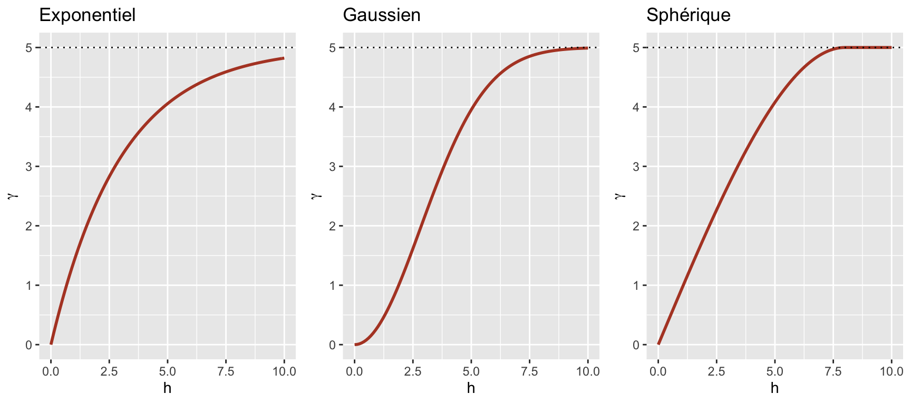
Variogramme empirique
Pour estimer \(\gamma_z(h)\) à partir de données empiriques, nous devons définir des classes de distance, donc grouper différentes distances dans une marge \(\pm \delta\) autour d’une distance \(h\), puis calculer l’écart-carré moyen pour les paires de points dans cette classe de distance.
\[\hat{\gamma_z}(h) = \frac{1}{2 N_{\text{paires}}} \sum \left[ \left( z(x_i, y_i) - z(x_j, y_j) \right)^2 \right]_{d_{ij} = h \pm \delta}\]
Nous verrons dans la partie suivante comment estimer un variogramme dans R.
Modèle de régression avec corrélation spatiale
L’équation suivante représente une régression linéaire multiple incluant une corrélation spatiale résiduelle:
\[v = \beta_0 + \sum_i \beta_i u_i + z + \epsilon\]
Ici, \(v\) désigne la variable réponse et \(u\) les prédicteurs, pour ne pas confondre avec les coordonnées spatiales \(x\) et \(y\).
En plus du résidu \(\epsilon\) qui est indépendant entre les observations, le modèle inclut un terme \(z\) qui représente la portion spatialement corrélée de la variance résiduelle.
Voici une suggestions d’étapes à suivre pour appliquer ce type de modèle:
Ajuster le modèle de régression sans corrélation spatiale.
Vérifier la présence de corrélation spatiale à partir du variogramme empirique des résidus.
Ajuster un ou plusieurs modèles de régression avec corrélation spatiale et choisir celui qui montre le meilleur ajustement aux données.
22 Modèles géostatistiques dans R
Le package gstat contient des fonctions liées à la géostatistique. Pour cet exemple, nous utiliserons le jeu de données oxford de ce package, qui contient des mesures de propriétés physiques et chimiques pour 126 échantillons du sol d’un site, ainsi que leurs coordonnées XCOORD et YCOORD.
library(gstat)
data(oxford)
str(oxford)'data.frame': 126 obs. of 22 variables:
$ PROFILE : num 1 2 3 4 5 6 7 8 9 10 ...
$ XCOORD : num 100 100 100 100 100 100 100 100 100 100 ...
$ YCOORD : num 2100 2000 1900 1800 1700 1600 1500 1400 1300 1200 ...
$ ELEV : num 598 597 610 615 610 595 580 590 598 588 ...
$ PROFCLASS: Factor w/ 3 levels "Cr","Ct","Ia": 2 2 2 3 3 2 3 2 3 3 ...
$ MAPCLASS : Factor w/ 3 levels "Cr","Ct","Ia": 2 3 3 3 3 2 2 3 3 3 ...
$ VAL1 : num 3 3 4 4 3 3 4 4 4 3 ...
$ CHR1 : num 3 3 3 3 3 2 2 3 3 3 ...
$ LIME1 : num 4 4 4 4 4 0 2 1 0 4 ...
$ VAL2 : num 4 4 5 8 8 4 8 4 8 8 ...
$ CHR2 : num 4 4 4 2 2 4 2 4 2 2 ...
$ LIME2 : num 4 4 4 5 5 4 5 4 5 5 ...
$ DEPTHCM : num 61 91 46 20 20 91 30 61 38 25 ...
$ DEP2LIME : num 20 20 20 20 20 20 20 20 40 20 ...
$ PCLAY1 : num 15 25 20 20 18 25 25 35 35 12 ...
$ PCLAY2 : num 10 10 20 10 10 20 10 20 10 10 ...
$ MG1 : num 63 58 55 60 88 168 99 59 233 87 ...
$ OM1 : num 5.7 5.6 5.8 6.2 8.4 6.4 7.1 3.8 5 9.2 ...
$ CEC1 : num 20 22 17 23 27 27 21 14 27 20 ...
$ PH1 : num 7.7 7.7 7.5 7.6 7.6 7 7.5 7.6 6.6 7.5 ...
$ PHOS1 : num 13 9.2 10.5 8.8 13 9.3 10 9 15 12.6 ...
$ POT1 : num 196 157 115 172 238 164 312 184 123 282 ...Supposons que nous souhaitons modéliser la concentration de magnésium (MG1), représentée en fonction de la position spatiale dans le graphique suivant.
library(ggplot2)
ggplot(oxford, aes(x = YCOORD, y = XCOORD, size = MG1)) +
geom_point() +
coord_fixed()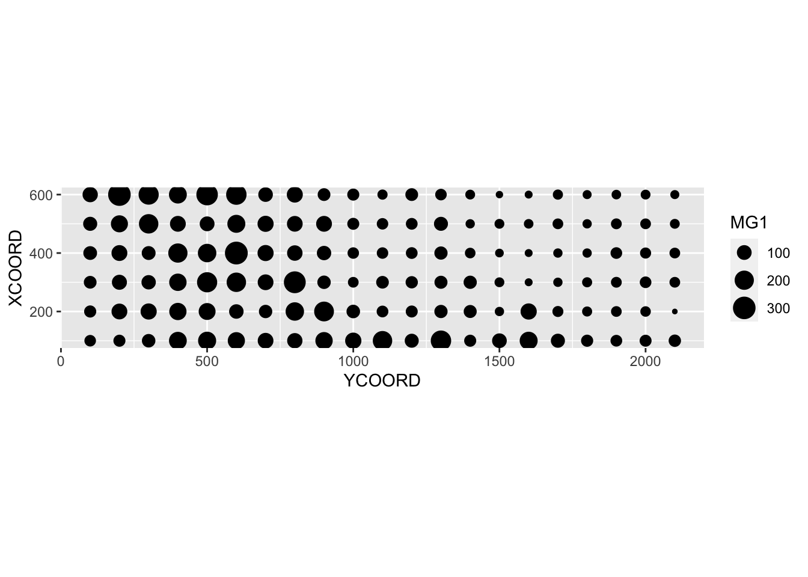
Notez que les axes \(x\) et \(y\) ont été inversés par souci d’espace. La fonction coord_fixed() de ggplot2 assure que l’échelle soit la même sur les deux axes, ce qui est utile pour représenter des données spatiales.
Nous voyons tout de suite que ces mesures ont été prises sur une grille de 100 m de côté. Il semble que la concentration de magnésium soit spatialement corrélée, bien qu’il puisse s’agir d’une corrélation induite par une autre variable. Nous savons notamment que la concentration de magnésium est reliée négativement au pH du sol (PH1).
ggplot(oxford, aes(x = PH1, y = MG1)) +
geom_point()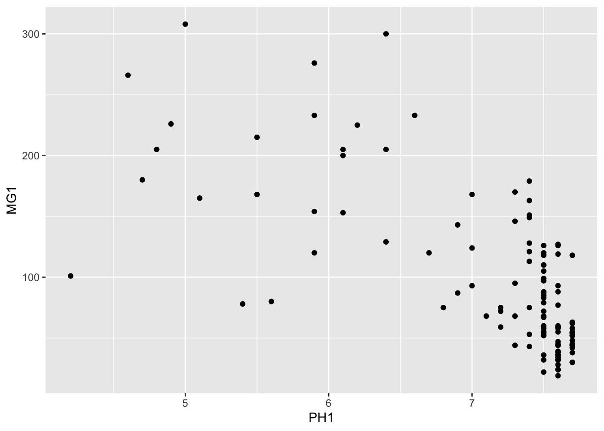
La fonction variogram de gstat sert à estimer un variogramme à partir de données empiriques. Voici le résultat obtenu pour la variable MG1.
var_mg <- variogram(MG1 ~ 1, locations = ~ XCOORD + YCOORD, data = oxford)
var_mg np dist gamma dir.hor dir.ver id
1 225 100.0000 1601.404 0 0 var1
2 200 141.4214 1950.805 0 0 var1
3 548 215.0773 2171.231 0 0 var1
4 623 303.6283 2422.245 0 0 var1
5 258 360.5551 2704.366 0 0 var1
6 144 400.0000 2948.774 0 0 var1
7 570 427.5569 2994.621 0 0 var1
8 291 500.0000 3402.058 0 0 var1
9 366 522.8801 3844.165 0 0 var1
10 200 577.1759 3603.060 0 0 var1
11 458 619.8400 3816.595 0 0 var1
12 90 670.8204 3345.739 0 0 var1La formule MG1 ~ 1 indique qu’aucun prédicteur linéaire n’est inclus dans ce modèle, tandis que l’argument locations indique quelles variables du tableau correspondent aux coordonnées spatiales.
Dans le tableau obtenu, gamma est la valeur du variogramme pour la classe de distance centrée sur dist, tandis que np est le nombre de paires de points dans cette classe. Ici, puisque les points sont situés sur une grille, nous obtenons des classes de distance régulières (ex.: 100 m pour les points voisins sur la grille, 141 m pour les voisins en diagonale, etc.).
Nous nous limitons ici à l’estimation de variogrammes isotropiques, c’est-à-dire que le variogramme dépend seulement de la distance entre les deux points et non de la direction. Bien que nous n’ayons pas le temps de le voir aujourd’hui, il est possible avec gstat d’estimer séparément le variogramme dans différentes directions.
Nous pouvons illustrer le variogramme avec plot.
plot(var_mg, col = "black")
Si nous voulons estimer la corrélation spatiale résiduelle de MG1 après avoir inclus l’effet de PH1, nous pouvons ajouter ce prédicteur à la formule.
var_mg <- variogram(MG1 ~ PH1, locations = ~ XCOORD + YCOORD, data = oxford)
plot(var_mg, col = "black")
En incluant l’effet du pH, la portée de la corrélation spatiale semble diminuer, alors que le plateau est atteint autour de 300 m. Il semble même que le variogramme diminue au-delà de 400 m. En général, nous supposons que la variance entre deux points ne diminue pas avec la distance, à moins d’avoir un patron spatial périodique.
La fonction fit.variogram accepte comme arguments un variogramme estimé à partir des données, ainsi qu’un modèle théorique décrit dans une fonction vgm, puis estime les paramètres de ce modèle en fonction des données. L’ajustement se fait par la méthode des moindres carrés.
Par exemple, vgm("Exp") indique d’ajuster un modèle exponentiel.
vfit <- fit.variogram(var_mg, vgm("Exp"))
vfit model psill range
1 Nug 0.000 0.00000
2 Exp 1951.496 95.11235Il n’y a aucun effet de pépite, car psill = 0 pour la partie Nug (nugget) du modèle. La partie exponentielle a un palier à 1951 et une portée de 95 m.
Pour comparer différents modèles, on peut donner un vecteur de noms de modèles à vgm. Dans l’exemple suivant, nous incluons les modèles exponentiel, gaussien (“Gau”) et sphérique (“Sph”).
vfit <- fit.variogram(var_mg, vgm(c("Exp", "Gau", "Sph")))
vfit model psill range
1 Nug 0.000 0.00000
2 Exp 1951.496 95.11235La fonction nous donne le résultat du modèle le mieux ajusté (plus faible somme des écarts au carré), qui est ici le même modèle exponentiel.
Finalement, nous pouvons superposer le modèle théorique et le variogramme empirique sur un même graphique.
plot(var_mg, vfit, col = "black")
Régression avec corrélation spatiale
Nous avons vu ci-dessus que le package gstat permet d’estimer le variogramme des résidus d’un modèle linéaire. Dans notre exemple, la concentration de magnésium était modélisée en fonction du pH, avec des résidus spatialement corrélés.
Un autre outil pour ajuster ce même type de modèle est la fonction gls du package nlme, qui est inclus avec l’installation de R.
Cette fonction applique la méthode des moindres carrés généralisés (generalized least squares) pour ajuster des modèles de régression linéaire lorsque les résidus ne sont pas indépendants ou lorsque la variance résiduelle n’est pas la même pour toutes les observations. Comme les estimés des coefficients dépendent de l’estimé des corrélations entre les résidus et que ces derniers dépendent eux-mêmes des coefficients, le modèle est ajusté par un algorithme itératif:
On ajuste un modèle de régression linéaire classique (sans corrélation) pour obtenir des résidus.
On ajuste le modèle de corrélation spatiale (variogramme) avec ses résidus.
On ré-estime les coefficients de la régression en tenant compte maintenant des corrélations.
Les étapes 2 et 3 sont répétées jusqu’à ce que les estimés soient stables à une précision voulue.
Voici l’application de cette méthode au même modèle pour la concentration de magnésium dans le jeu de données oxford. Dans l’argument correlation de gls, nous spécifions un modèle de corrélation exponentielle en fonction de nos coordonnées spatiales et indiquons que nous voulons aussi estimer un effet de pépite.
En plus de la corrélation exponentielle corExp, la fonction gls peut aussi estimer un modèle gaussien (corGaus) ou sphérique (corSpher).
library(nlme)
gls_mg <- gls(MG1 ~ PH1, oxford,
correlation = corExp(form = ~ XCOORD + YCOORD, nugget = TRUE))
summary(gls_mg)Generalized least squares fit by REML
Model: MG1 ~ PH1
Data: oxford
AIC BIC logLik
1278.65 1292.751 -634.325
Correlation Structure: Exponential spatial correlation
Formula: ~XCOORD + YCOORD
Parameter estimate(s):
range nugget
478.0322964 0.2944753
Coefficients:
Value Std.Error t-value p-value
(Intercept) 391.1387 50.42343 7.757084 0
PH1 -41.0836 6.15662 -6.673079 0
Correlation:
(Intr)
PH1 -0.891
Standardized residuals:
Min Q1 Med Q3 Max
-2.1846957 -0.6684520 -0.3687813 0.4627580 3.1918604
Residual standard error: 53.8233
Degrees of freedom: 126 total; 124 residualPour comparer ce résultat au variogramme ajusté ci-dessus, il faut transformer les paramètres donnés par gls. La portée (range) a le même sens dans les deux cas et correspond à 478 m pour le résultat de gls. La variance globale des résidus est le carré de Residual standard error. L’effet de pépite ici (0.294) est exprimé comme fraction de cette variance. Finalement, pour obtenir le palier partiel de la partie exponentielle, il faut soustraire l’effet de pépite de la variance totale.
Après avoir réalisé ces calculs, nous pouvons donner ces paramètres à la fonction vgm de gstat pour superposer ce variogramme estimé par gls à notre variogramme des résidus du modèle linéaire classique.
gls_range <- 478
gls_var <- 53.823^2
gls_nugget <- 0.294 * gls_var
gls_psill <- gls_var - gls_nugget
gls_vgm <- vgm("Exp", psill = gls_psill, range = gls_range, nugget = gls_nugget)
plot(var_mg, gls_vgm, col = "black", ylim = c(0, 4000))
Est-ce que le modèle est moins bien ajusté aux données ici? En fait, ce variogramme empirique représenté par les points avait été obtenu à partir des résidus du modèle linéaire ignorant la corrélation spatiale, donc c’est un estimé biaisé des corrélations spatiales réelles. La méthode est quand même adéquate pour vérifier rapidement s’il y a présence de corrélations spatiales. Toutefois, pour ajuster simultanément les coefficients de la régression et les paramètres de corrélation spatiale, l’approche des moindres carrés généralisés (GLS) est préférable et produira des estimés plus justes.
Finalement, notez que le résultat du modèle gls donne aussi l’AIC, que nous pouvons utiliser pour comparer l’ajustement de différents modèles (avec différents prédicteurs ou différentes formes de corrélation spatiale).
Exercice
Le fichier bryo_belg.csv est adapté des données de l’étude:
Neyens, T., Diggle, P.J., Faes, C., Beenaerts, N., Artois, T. et Giorgi, E. (2019) Mapping species richness using opportunistic samples: a case study on ground-floor bryophyte species richness in the Belgian province of Limburg. Scientific Reports 9, 19122. https://doi.org/10.1038/s41598-019-55593-x
Ce tableau de données indique la richesse spécifique des bryophytes au sol (richness) pour différents points d’échantillonnage de la province belge de Limbourg, avec leur position (x, y) en km, en plus de l’information sur la proportion de forêts (forest) et de milieux humides (wetland) dans une cellule de 1 km\(^2\) contenant le point d’échantillonnage.
bryo_belg <- read.csv("data/bryo_belg.csv")
head(bryo_belg) richness forest wetland x y
1 9 0.2556721 0.5036614 228.9516 220.8869
2 6 0.6449114 0.1172068 227.6714 219.8613
3 5 0.5039905 0.6327003 228.8252 220.1073
4 3 0.5987329 0.2432942 229.2775 218.9035
5 2 0.7600775 0.1163538 209.2435 215.2414
6 10 0.6865434 0.0000000 210.4142 216.5579Pour cet exercice, nous utiliserons la racine carrée de la richesse spécifique comme variable réponse. La transformation racine carrée permet souvent d’homogénéiser la variance des données de comptage afin d’y appliquer une régression linéaire.
Ajustez un modèle linéaire de la richesse spécifique transformée en fonction de la fraction de forêt et de milieux humides, sans tenir compte des corrélations spatiales. Quel est l’effet des deux prédicteurs selon ce modèle?
Calculez le variogramme empirique des résidus du modèle en (a). Semble-t-il y avoir une corrélation spatiale entre les points?
Note: L’argument cutoff de la fonction variogram spécifie la distance maximale à laquelle le variogramme est calculé. Vous pouvez ajuster manuellement cette valeur pour bien voir le palier.
Ré-ajustez le modèle linéaire en (a) avec la fonction
glsdu package nlme, en essayant différents types de corrélations spatiales (exponentielle, gaussienne, sphérique). Comparez les modèles (incluant celui sans corrélation spatiale) avec l’AIC.Quel est l’effet de la fraction de forêts et de milieux humides selon le modèle en (c)? Expliquez les différences entre les conclusions de ce modèle et du modèle en (a).
23 Krigeage
Tel que mentionné précédemment, une application courante des modèles géostatistiques consiste à prédire la valeur de la variable de réponse à des points non-échantillonnés, une forme d’interpolation spatiale appelée krigeage (kriging).
Il existe trois principaux types de krigeage selon les suppositions faites au sujet de la variable réponse:
Krigeage ordinaire: variable stationnaire avec une moyenne inconnue.
Krigeage simple: Variable stationnaire avec une moyenne connue.
Krigeage universel: Variable dont la tendance est donnée par un modèle linéaire ou non linéaire.
Pour toutes les méthodes de krigeage, les prédictions à un nouveau point sont une moyenne pondérée des valeurs à des points connus. Ces pondérations sont choisies de manière à ce que le krigeage fournisse la meilleure prédiction linéaire non biaisée de la variable de réponse, si les hypothèses du modèle (en particulier le variogramme) sont correctes. C’est-à-dire que, parmi toutes les prédictions non biaisées possibles, les poids sont choisis de manière à donner l’erreur quadratique moyenne minimale. Le krigeage fournit également une estimation de l’incertitude de chaque prédiction.
Bien que nous ne présentions pas ici les équations détaillées du krigeage, les poids dépendent à la fois des corrélations (estimées par le variogramme) entre les points échantillonnés et le nouveau point, ainsi que des corrélations entre les points échantillonnés eux-mêmes. Autrement dit, les points échantillonnés proches du nouveau point ont plus de poids, mais les points échantillonnés isolés ont également plus de poids, car les points échantillonnés proches les uns des autres fournissent une informations redondante.
Le krigeage est une méthode d’interpolation, donc la prédiction à un point échantillonné sera toujours égale à la valeur mesurée (la variable est supposée être mesurée sans erreur, elle varie seulement entre les points). Cependant, en présence d’un effet de pépite, tout petit déplacement par rapport à l’endroit échantillonné présentera une variabilité en fonction de la pépite.
Dans l’exemple ci-dessous, nous générons un nouvel ensemble de données composé de coordonnées (x, y) générées de façon aléatoire dans la zone d’étude ainsi que des valeurs de pH générées de façon aléatoire sur la base des données oxford. Nous appliquons ensuite la fonction krige pour prédire les valeurs de magnésium à ces nouveaux points. Notez que nous spécifions le variogramme dérivé des résultats du gls dans l’argument model de krige.
set.seed(14)
new_points <- data.frame(
XCOORD = runif(100, min(oxford$XCOORD), max(oxford$XCOORD)),
YCOORD = runif(100, min(oxford$YCOORD), max(oxford$YCOORD)),
PH1 = rnorm(100, mean(oxford$PH1), sd(oxford$PH1))
)
pred <- krige(MG1 ~ PH1, locations = ~ XCOORD + YCOORD, data = oxford,
newdata = new_points, model = gls_vgm)[using universal kriging]head(pred) XCOORD YCOORD var1.pred var1.var
1 227.0169 162.1185 47.13065 1269.002
2 418.9136 465.9013 79.68437 1427.269
3 578.5943 2032.7477 60.30539 1264.471
4 376.2734 1530.7193 127.22366 1412.875
5 591.5336 421.6290 105.88124 1375.485
6 355.7369 404.3378 127.73055 1250.114Le résultat de krige comprend les nouvelles coordonnées du point, la prédiction de la variable var1.pred ainsi que sa variance estimée var1.var. Dans le graphique ci-dessous, nous montrons les prédictions moyennes de MG1 à partir du krigeage (triangles) ainsi que les mesures (cercles).
pred$MG1 <- pred$var1.pred
ggplot(oxford, aes(x = YCOORD, y = XCOORD, color = MG1)) +
geom_point() +
geom_point(data = pred, shape = 17, size = 2) +
coord_fixed()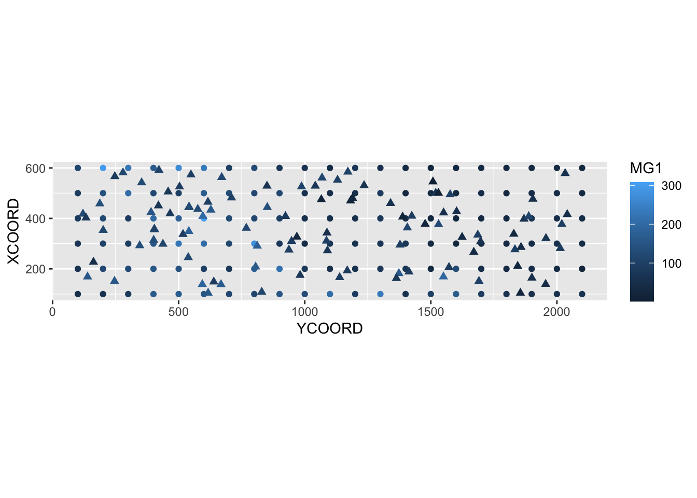
La moyenne et la variance estimées par krigeage peuvent être utilisées pour simuler les valeurs possibles de la variable à chaque nouveau point, conditionnellement aux valeurs échantillonnées. Dans l’exemple ci-dessous, nous avons effectué 4 simulations conditionnelles en ajoutant l’argument nsim = 4 à la même instruction krige.
sim_mg <- krige(MG1 ~ PH1, locations = ~ XCOORD + YCOORD, data = oxford,
newdata = new_points, model = gls_vgm, nsim = 4)drawing 4 GLS realisations of beta...
[using conditional Gaussian simulation]head(sim_mg) XCOORD YCOORD sim1 sim2 sim3 sim4
1 227.0169 162.1185 9.638739 34.53159 46.08685 77.86376
2 418.9136 465.9013 60.029144 20.17179 76.46333 59.57924
3 578.5943 2032.7477 100.791412 77.47887 73.50058 59.40279
4 376.2734 1530.7193 112.615730 150.96664 78.76125 146.83928
5 591.5336 421.6290 70.925240 72.85522 153.90610 126.63758
6 355.7369 404.3378 161.608032 118.93640 134.45695 142.20074library(tidyr)
sim_mg <- pivot_longer(sim_mg, cols = c(sim1, sim2, sim3, sim4),
names_to = "sim", values_to = "MG1")
ggplot(sim_mg, aes(x = YCOORD, y = XCOORD, color = MG1)) +
geom_point() +
coord_fixed() +
facet_wrap(~ sim)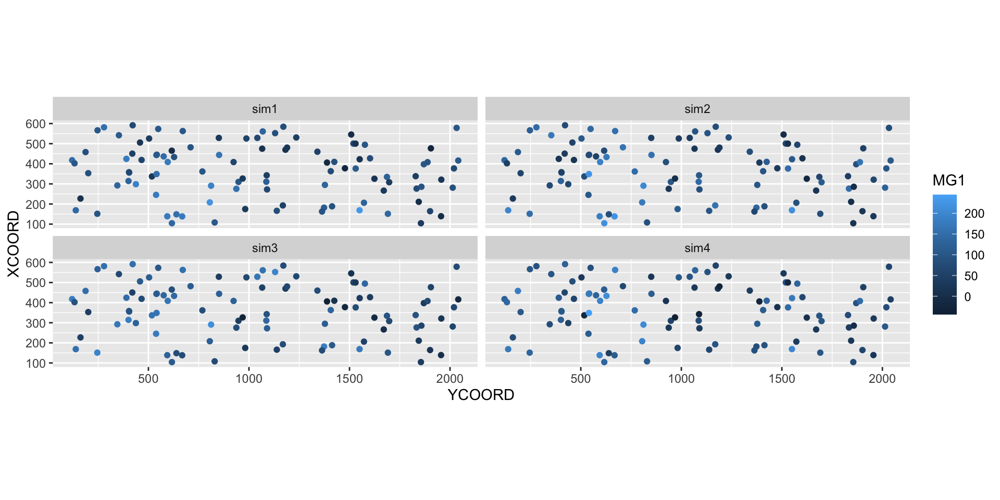
24 Solutions
bryo_lm <- lm(sqrt(richness) ~ forest + wetland, data = bryo_belg)
summary(bryo_lm)
Call:
lm(formula = sqrt(richness) ~ forest + wetland, data = bryo_belg)
Residuals:
Min 1Q Median 3Q Max
-1.8847 -0.4622 0.0545 0.4974 2.3116
Coefficients:
Estimate Std. Error t value Pr(>|t|)
(Intercept) 2.34159 0.08369 27.981 < 2e-16 ***
forest 1.11883 0.13925 8.034 9.74e-15 ***
wetland -0.59264 0.17216 -3.442 0.000635 ***
---
Signif. codes: 0 '***' 0.001 '**' 0.01 '*' 0.05 '.' 0.1 ' ' 1
Residual standard error: 0.7095 on 417 degrees of freedom
Multiple R-squared: 0.2231, Adjusted R-squared: 0.2193
F-statistic: 59.86 on 2 and 417 DF, p-value: < 2.2e-16La proportion de forêts a un effet positif significatif et la proportion de milieux humides a un effet négatif significatif sur la richesse des bryophytes.
plot(variogram(sqrt(richness) ~ forest + wetland, locations = ~ x + y,
data = bryo_belg, cutoff = 50), col = "black")
Le variogramme augmente au moins jusqu’à une distance de 40 km, il semble donc y avoir des corrélations spatiales dans les résidus du modèle.
bryo_exp <- gls(sqrt(richness) ~ forest + wetland, data = bryo_belg,
correlation = corExp(form = ~ x + y, nugget = TRUE))
bryo_gaus <- gls(sqrt(richness) ~ forest + wetland, data = bryo_belg,
correlation = corGaus(form = ~ x + y, nugget = TRUE))
bryo_spher <- gls(sqrt(richness) ~ forest + wetland, data = bryo_belg,
correlation = corSpher(form = ~ x + y, nugget = TRUE))AIC(bryo_lm)[1] 908.6358AIC(bryo_exp)[1] 867.822AIC(bryo_gaus)[1] 870.9592AIC(bryo_spher)[1] 866.9117Le modèle sphérique a l’AIC le plus faible.
summary(bryo_spher)Generalized least squares fit by REML
Model: sqrt(richness) ~ forest + wetland
Data: bryo_belg
AIC BIC logLik
866.9117 891.1102 -427.4558
Correlation Structure: Spherical spatial correlation
Formula: ~x + y
Parameter estimate(s):
range nugget
43.1727664 0.6063187
Coefficients:
Value Std.Error t-value p-value
(Intercept) 2.0368769 0.2481636 8.207800 0.000
forest 0.6989844 0.1481690 4.717481 0.000
wetland -0.2441130 0.1809118 -1.349348 0.178
Correlation:
(Intr) forest
forest -0.251
wetland -0.235 0.241
Standardized residuals:
Min Q1 Med Q3 Max
-1.75204183 -0.06568688 0.61415597 1.15240370 3.23322743
Residual standard error: 0.7998264
Degrees of freedom: 420 total; 417 residualLa magnitude des deux effets est moins importante et l’effet des milieux humides n’est plus significatif. Comme c’est le cas pour d’autres types de résidus non indépendants, la “taille effective” de l’échantillon est ici inférieure au nombre de points, car des points proches les uns des autres fournissent une information redondante. Par conséquent, la relation entre les prédicteurs et la réponse est moins claire que celle donnée par le modèle supposant que tous ces points étaient indépendants.
Notez que les résultats pour les trois modèles gls sont assez similaires, donc le choix d’inclure des corrélations spatiales était plus important que la forme exacte supposée pour le variogramme.
25 Données aréales
Les données aréales sont des variables mesurées pour des régions de l’espace; ces régions sont définies par des polygones. Ce type de données est plus courant en sciences sociales, en géographie humaine et en épidémiologie, où les données sont souvent disponibles à l’échelle de divisions administratives du territoire.
Ce type de données apparaît aussi fréquemment dans la gestion des ressources naturelles. Par exemple, la carte suivante montre les unités d’aménagement forestier du Ministère de la Forêts, de la Faune et des Parcs du Québec.
Supposons qu’une certaine variable soit disponible au niveau de ces divisions du territoire. Comment pouvons-nous modéliser la corrélation spatiale entre les unités qui sont spatialement rapprochées?
Une option serait d’appliquer les méthodes géostatistiques vues précédemment, en calculant par exemple la distance entre les centres des polygones.
Une autre option, qui est davantage privilégiée pour les données aréales, consiste à définir un réseau où chaque région est connectée aux régions voisines par un lien. On suppose ensuite que les variables sont directement corrélées entre régions voisines seulement. (Notons toutefois que les corrélations directes entre voisins immédiats génèrent aussi des corrélations indirectes pour une chaîne de voisins.)
Dans ce type de modèle, la corrélation n’est pas nécessairement la même d’un lien à un autre. Dans ce cas, chaque lien du réseau peut être associé à un poids représentant son importance pour la corrélation spatiale. Nous représentons ces poids par une matrice \(W\) où \(w_{ij}\) est le poids du lien entre les régions \(i\) et \(j\). Une région n’a pas de lien avec elle-même, donc \(w_{ii} = 0\).
Un choix simple pour \(W\) consiste à assigner un poids égal à 1 si les régions sont voisines, sinon 0 (poids binaires).
Outre les divisions du territoire en polygones, un autre exemple de données aréales consiste en une grille où la variable est compilée pour chaque cellule de la grille. Dans ce cas, une cellule a généralement 4 ou 8 cellules voisines, selon que les diagonales soient incluses ou non.
26 Indice de Moran
Avant de discuter des modèles d’autocorrélation spatiale, nous présentons l’indice \(I\) de Moran, qui permet de tester si une corrélation significative est présente entre régions voisines.
L’indice de Moran est un coefficient d’autocorrélation spatiale des \(z\), pondéré par les poids \(w_{ij}\). Il prend donc des valeurs entre -1 et 1.
\[I = \frac{N}{\sum_i \sum_j w_{ij}} \frac{\sum_i \sum_j w_{ij} (z_i - \bar{z}) (z_j - \bar{z})}{\sum_i (z_i - \bar{z})^2}\]
Dans cette équation, nous reconnaissons l’expression d’une corrélation, soit le produit des écarts à la moyenne de deux variables \(z_i\) et \(z_j\), divisé par le produit de leurs écarts-types (qui est le même, donc on obtient la variance). La contribution de chaque paire \((i, j)\) est multipliée par son poids \(w_{ij}\) et le terme à gauche (le nombre de régions \(N\) divisé par la somme des poids) assure que le résultat soit borné entre -1 et 1.
Puisque la distribution de \(I\) est connue en l’absence d’autocorrélation spatiale, cette statistique permet de tester l’hypothèse nulle selon laquelle il n’y a pas de corrélation spatiale entre régions voisines.
Bien que nous ne verrons pas d’exemple dans ce cours-ci, l’indice de Moran peut aussi être appliqué aux données ponctuelles. Dans ce cas, on divise les paires de points en classes de distance et on calcule \(I\) pour chaque classe de distance; le poids \(w_{ij} = 1\) si la distance entre \(i\) et \(j\) se trouve dans la classe de distance voulue, 0 autrement.
27 Modèles d’autorégression spatiale
Rappelons-nous la formule pour une régression linéaire avec dépendance spatiale:
\[v = \beta_0 + \sum_i \beta_i u_i + z + \epsilon\]
où \(z\) est la portion de la variance résiduelle qui est spatialement corrélée.
Il existe deux principaux types de modèles autorégressifs pour représenter la dépendance spatiale de \(z\): l’autorégression conditionnelle (CAR) et l’autorégression simultanée (SAR).
Autorégression conditionnelle (CAR)
Dans le modèle d’autorégression conditionnelle, la valeur de \(z_i\) pour la région \(i\) suit une distribution normale: sa moyenne dépend de la valeur \(z_j\) des régions voisines, multipliée par le poids \(w_{ij}\) et un coefficient de corrélation \(\rho\); son écart-type \(\sigma_{z_i}\) peut varier d’une région à l’autre.
\[z_i \sim \text{N}\left(\sum_j \rho w_{ij} z_j,\sigma_{z_i} \right)\]
Dans ce modèle, si \(w_{ij}\) est une matrice binaire (0 pour les non-voisins, 1 pour les voisins), alors \(\rho\) est le coefficient de corrélation partielle entre régions voisines. Cela est semblable à un modèle autorégressif d’ordre 1 dans le contexte de séries temporelles, où le coefficient d’autorégression indique la corrélation partielle.
Autorégression simultanée (SAR)
Dans le modèle d’autorégression simultanée, la valeur de \(z_i\) est donnée directement par la somme de contributions des valeurs voisines \(z_j\), multipliées par \(\rho w_{ij}\), avec un résidu indépendant \(\nu_i\) d’écart-type \(\sigma_z\).
\[z_i = \sum_j \rho w_{ij} z_j + \nu_i\]
À première vue, cela ressemble à un modèle autorégressif temporel. Il existe cependant une différence conceptuelle importante. Pour les modèles temporels, l’influence causale est dirigée dans une seule direction: \(v(t-2)\) affecte \(v(t-1)\) qui affecte ensuite \(v(t)\). Pour un modèle spatial, chaque \(z_j\) qui affecte \(z_i\) dépend à son tour de \(z_i\). Ainsi, pour déterminer la distribution conjointe des \(z\), il faut résoudre simultanément (d’où le nom du modèle) un système d’équations.
Pour cette raison, même si ce modèle ressemble à la formule du modèle conditionnel (CAR), les solutions des deux modèles diffèrent et dans le cas du SAR, le coefficient \(\rho\) n’est pas directement égal à la corrélation partielle due à chaque région voisine.
Pour plus de détails sur les aspects mathématiques de ces modèles, vous pouvez consulter l’article de Ver Hoef et al. (2018) suggéré en référence.
Pour l’instant, nous considérerons les SAR et les CAR comme deux types de modèles possibles pour représenter une corrélation spatiale sur un réseau. Nous pouvons toujours ajuster plusieurs modèles et les comparer avec l’AIC pour choisir la meilleure forme de la corrélation ou la meilleure matrice de poids.
Les modèles CAR et SAR partagent un avantage sur les modèles géostatistiques au niveau de l’efficacité. Dans un modèle géostatistique, les corrélations spatiales sont définies entre chaque paire de points, même si elles deviennent négligeables lorsque la distance augmente. Pour un modèle CAR ou SAR, seules les régions voisines contribuent et la plupart des poids sont égaux à 0, ce qui rend ces modèles plus rapides à ajuster qu’un modèle géostatistique lorsque les données sont massives.
28 Analyse des données aréales dans R
Pour illustrer l’analyse de données aréales dans R, nous chargeons les packages sf (pour lire des données géospatiales), spdep (pour définir des réseaux spatiaux et calculer l’indice de Moran) et spatialreg (pour les modèles SAR et CAR).
library(sf)
library(spdep)
library(spatialreg)Nous utiliserons comme exemple un jeu de données qui présente une partie des résultats de l’élection provinciale de 2018 au Québec, avec des caractéristiques de la population de chaque circonscription. Ces données sont inclues dans un fichier de type shapefile (.shp), que nous pouvons lire avec la fonction read_sf du package sf.
elect2018 <- read_sf("data/elect2018.shp")
head(elect2018)Simple feature collection with 6 features and 9 fields
Geometry type: MULTIPOLYGON
Dimension: XY
Bounding box: xmin: 97879.03 ymin: 174515.3 xmax: 694261.1 ymax: 599757.1
Projected CRS: LambertAQ
# A tibble: 6 × 10
circ age_moy pct_frn pct_prp rev_med propCAQ propPQ propPLQ propQS
<chr> <dbl> <dbl> <dbl> <int> <dbl> <dbl> <dbl> <dbl>
1 Abitibi-Est 40.8 0.963 0.644 34518 42.7 19.5 18.8 15.7
2 Abitibi-Ouest 42.2 0.987 0.735 33234 34.1 33.3 11.3 16.6
3 Acadie 40.3 0.573 0.403 25391 16.5 9 53.8 13.8
4 Anjou-Louis-Riel 43.5 0.821 0.416 31275 28.9 14.7 39.1 14.5
5 Argenteuil 43.3 0.858 0.766 31097 38.9 21.1 17.4 12.2
6 Arthabaska 43.4 0.989 0.679 30082 61.8 9.4 11.4 12.6
# … with 1 more variable: geometry <MULTIPOLYGON [m]>Note: Le jeu de données est en fait composé de 4 fichiers avec les extensions .dbf, .prj, .shp et .shx, mais il suffit d’inscrire le nom du fichier .shp dans read_sf.
Les colonnes du jeu de données sont dans l’ordre:
- le nom de la circonscription électorale;
- quatre caractéristiques de la population (âge moyen, fraction de la population qui parle principalement français à la maison, fraction des ménages qui sont propriétaires de leur logement, revenu médian);
- quatre colonnes montrant la fraction des votes obtenues par les principaux partis (CAQ, PQ, PLQ, QS);
- une colonne
geometryqui contient l’objet géométrique (multipolygone) correspondant à la circonscription.
Pour illustrer une des variables sur une carte, nous appelons la fonction plot avec le nom de la colonne entre crochets et guillemets.
plot(elect2018["rev_med"])
Dans cet exemple, nous voulons modéliser la fraction des votes obtenue par la CAQ en fonction des caractéristiques de la population dans chaque circonscription et en tenant compte des corrélations spatiales entre circonscriptions voisines.
Définition du réseau de voisinage
La fonction poly2nb du package spdep définit un réseau de voisinage à partir de polygones. Le résultat vois est une liste de 125 éléments où chaque élément contient les indices des polygones voisins (limitrophes) d’un polygone donné.
vois <- poly2nb(elect2018)
vois[[1]][1] 2 37 63 88 101 117Ainsi, la première circonscription (Abitibi-Est) a 6 circonscriptions voisines, dont on peut trouver les noms ainsi:
elect2018$circ[vois[[1]]][1] "Abitibi-Ouest" "Gatineau"
[3] "Laviolette-Saint-Maurice" "Pontiac"
[5] "Rouyn-Noranda-Témiscamingue" "Ungava" Nous pouvons illustrer ce réseau en faisant l’extraction des coordonnées du centre de chaque circonscription, en créant une carte muette avec plot(elect2018["geometry"]), puis en ajoutant le réseau comme couche additionnelle avec plot(vois, add = TRUE, coords = coords).
coords <- st_centroid(elect2018) %>%
st_coordinates()
plot(elect2018["geometry"])
plot(vois, add = TRUE, col = "red", coords = coords)On peut faire un “zoom” sur le sud du Québec en choisissant les limites xlim et ylim appropriées.
plot(elect2018["geometry"],
xlim = c(400000, 800000), ylim = c(100000, 500000))
plot(vois, add = TRUE, col = "red", coords = coords)Il nous reste à ajouter des poids à chaque lien du réseau avec la fonction nb2listw. Le style de poids “B” correspond aux poids binaires, soit 1 pour la présence de lien et 0 pour l’absence de lien entre deux circonscriptions.
Une fois ces poids définis, nous pouvons vérifier avec le test de Moran s’il y a une autocorrélation significative des votes obtenus par la CAQ entre circonscriptions voisines.
poids <- nb2listw(vois, style = "B")
moran.test(elect2018$propCAQ, poids)
Moran I test under randomisation
data: elect2018$propCAQ
weights: poids
Moran I statistic standard deviate = 13.148, p-value < 2.2e-16
alternative hypothesis: greater
sample estimates:
Moran I statistic Expectation Variance
0.680607768 -0.008064516 0.002743472 La valeur de \(I = 0.68\) est très significative à en juger par la valeur \(p\) du test.
Vérifions si la corrélation spatiale persiste après avoir tenu compte des quatre caractéristiques de la population, donc en inspectant les résidus d’un modèle linéaire incluant ces quatre prédicteurs.
elect_lm <- lm(propCAQ ~ age_moy + pct_frn + pct_prp + rev_med, data = elect2018)
summary(elect_lm)
Call:
lm(formula = propCAQ ~ age_moy + pct_frn + pct_prp + rev_med,
data = elect2018)
Residuals:
Min 1Q Median 3Q Max
-30.9890 -4.4878 0.0562 6.2653 25.8146
Coefficients:
Estimate Std. Error t value Pr(>|t|)
(Intercept) 1.354e+01 1.836e+01 0.737 0.463
age_moy -9.170e-01 3.855e-01 -2.378 0.019 *
pct_frn 4.588e+01 5.202e+00 8.820 1.09e-14 ***
pct_prp 3.582e+01 6.527e+00 5.488 2.31e-07 ***
rev_med -2.624e-05 2.465e-04 -0.106 0.915
---
Signif. codes: 0 '***' 0.001 '**' 0.01 '*' 0.05 '.' 0.1 ' ' 1
Residual standard error: 9.409 on 120 degrees of freedom
Multiple R-squared: 0.6096, Adjusted R-squared: 0.5965
F-statistic: 46.84 on 4 and 120 DF, p-value: < 2.2e-16moran.test(residuals(elect_lm), poids)
Moran I test under randomisation
data: residuals(elect_lm)
weights: poids
Moran I statistic standard deviate = 6.7047, p-value = 1.009e-11
alternative hypothesis: greater
sample estimates:
Moran I statistic Expectation Variance
0.340083290 -0.008064516 0.002696300 L’indice de Moran a diminué mais demeure significatif, donc une partie de la corrélation précédente était induite par ces prédicteurs, mais il reste une corrélation spatiale due à d’autres facteurs.
Modèles d’autorégression spatiale
Finalement, nous ajustons des modèles SAR et CAR à ces données avec la fonction spautolm (spatial autoregressive linear model) de spatialreg. Voici le code pour un modèle SAR incluant l’effet des même quatre prédicteurs.
elect_sar <- spautolm(propCAQ ~ age_moy + pct_frn + pct_prp + rev_med,
data = elect2018, listw = poids)
summary(elect_sar)
Call: spautolm(formula = propCAQ ~ age_moy + pct_frn + pct_prp + rev_med,
data = elect2018, listw = poids)
Residuals:
Min 1Q Median 3Q Max
-23.08342 -4.10573 0.24274 4.29941 23.08245
Coefficients:
Estimate Std. Error z value Pr(>|z|)
(Intercept) 15.09421119 16.52357745 0.9135 0.36098
age_moy -0.70481703 0.32204139 -2.1886 0.02863
pct_frn 39.09375061 5.43653962 7.1909 6.435e-13
pct_prp 14.32329345 6.96492611 2.0565 0.03974
rev_med 0.00016730 0.00023209 0.7208 0.47101
Lambda: 0.12887 LR test value: 42.274 p-value: 7.9339e-11
Numerical Hessian standard error of lambda: 0.012069
Log likelihood: -433.8862
ML residual variance (sigma squared): 53.028, (sigma: 7.282)
Number of observations: 125
Number of parameters estimated: 7
AIC: 881.77La valeur donnée par Lambda dans le sommaire correspond au coefficient \(\rho\) dans notre description du modèle. Le test du rapport de vraisemblance (LR test) confirme que cette corrélation spatiale résiduelle (après avoir tenu compte de l’effet des prédicteurs) est significative.
Les effets estimés pour les prédicteurs sont semblables à ceux du modèle linéaire sans corrélation spatiale. Les effets de l’âge moyen, de la fraction de francophones et la fraction de propriétaires demeurent significatifs, bien que leur magnitude ait un peu diminué.
Pour évaluer un modèle CAR plutôt que SAR, nous devons spécifier family = "CAR".
elect_car <- spautolm(propCAQ ~ age_moy + pct_frn + pct_prp + rev_med,
data = elect2018, listw = poids, family = "CAR")
summary(elect_car)
Call: spautolm(formula = propCAQ ~ age_moy + pct_frn + pct_prp + rev_med,
data = elect2018, listw = poids, family = "CAR")
Residuals:
Min 1Q Median 3Q Max
-21.73315 -4.24623 -0.24369 3.44228 23.43749
Coefficients:
Estimate Std. Error z value Pr(>|z|)
(Intercept) 16.57164696 16.84155327 0.9840 0.325128
age_moy -0.79072151 0.32972225 -2.3981 0.016478
pct_frn 38.99116707 5.43667482 7.1719 7.399e-13
pct_prp 17.98557474 6.80333470 2.6436 0.008202
rev_med 0.00012639 0.00023106 0.5470 0.584364
Lambda: 0.15517 LR test value: 40.532 p-value: 1.9344e-10
Numerical Hessian standard error of lambda: 0.0026868
Log likelihood: -434.7573
ML residual variance (sigma squared): 53.9, (sigma: 7.3416)
Number of observations: 125
Number of parameters estimated: 7
AIC: 883.51Pour un modèle CAR avec des poids binaires, la valeur de Lambda (que nous avions appelé \(\rho\)) donne directement le coefficient de corrélation partielle entre circonscriptions voisines. Notez que l’AIC ici est légèrement supérieur au modèle SAR, donc ce dernier donnait un meilleur ajustement.
Exercice
Le jeu de données rls_covid, en format shapefile, contient des données sur les cas de COVID-19 détectés, le nombre de cas par 1000 personnes (taux_1k) et la densité de population (dens_pop) dans chacun des réseaux locaux de service de santé (RLS) du Québec. (Source: Données téléchargées de l’Institut national de santé publique du Québec en date du 17 janvier 2021.)
rls_covid <- read_sf("data/rls_covid.shp")
head(rls_covid)Simple feature collection with 6 features and 5 fields
Geometry type: MULTIPOLYGON
Dimension: XY
Bounding box: xmin: 785111.2 ymin: 341057.8 xmax: 979941.5 ymax: 541112.7
Projected CRS: Conique_conforme_de_Lambert_du_MTQ_utilis_e_pour_Adresse_Qu_be
# A tibble: 6 × 6
RLS_code RLS_nom cas taux_1k dens_…¹ geometry
<chr> <chr> <dbl> <dbl> <dbl> <MULTIPOLYGON [m]>
1 0111 RLS de Kamouraska 152 7.34 6.76 (((827028.3 412772.4, 82…
2 0112 RLS de Rivière-du-Lo… 256 7.34 19.6 (((855905 452116.9, 8557…
3 0113 RLS de Témiscouata 81 4.26 4.69 (((911829.4 441311.2, 91…
4 0114 RLS des Basques 28 3.3 5.35 (((879249.6 471975.6, 87…
5 0115 RLS de Rimouski 576 9.96 15.5 (((917748.1 503148.7, 91…
6 0116 RLS de La Mitis 76 4.24 5.53 (((951316 523499.3, 9525…
# … with abbreviated variable name ¹dens_popAjustez un modèle linéaire du nombre de cas par 1000 en fonction de la densité de population (il est suggéré d’appliquer une transformation logarithmique à cette dernière). Vérifiez si les résidus du modèle sont corrélés entre RLS limitrophes avec un test de Moran, puis modélisez les mêmes données avec un modèle autorégressif conditionnel.
Référence
Ver Hoef, J.M., Peterson, E.E., Hooten, M.B., Hanks, E.M. et Fortin, M.-J. (2018) Spatial autoregressive models for statistical inference from ecological data. Ecological Monographs 88: 36-59.
29 GLMM avec processus spatial gaussien
Dans les parties précédentes, nous avons vu comment tenir compte de la dépendance spatiale dans les modèles de régression linéaire avec des modèles géostatistiques (également appelés processus gaussiens) ou des modèles d’autocorrélation spatiale (CAR/SAR). Dans cette dernière partie, nous verrons comment combiner ces caractéristiques avec des modèles de régression plus complexes, en particulier les modèles linéaires généralisés à effets mixtes (GLMM).
Données
Le jeu de données gambia inclus avec le package geoR présente les résultats d’une étude sur la prévalence du paludisme chez les enfants de 65 villages en Gambie. Nous utiliserons une version légèrement transformée des données contenues dans le fichier gambia.csv.
library(geoR)
gambia <- read.csv("data/gambia.csv")
head(gambia) id_village x y pos age netuse treated green phc
1 1 349.6313 1458.055 1 1783 0 0 40.85 1
2 1 349.6313 1458.055 0 404 1 0 40.85 1
3 1 349.6313 1458.055 0 452 1 0 40.85 1
4 1 349.6313 1458.055 1 566 1 0 40.85 1
5 1 349.6313 1458.055 0 598 1 0 40.85 1
6 1 349.6313 1458.055 1 590 1 0 40.85 1Voici les champs de ce jeu de données:
- id_village: Identifiant du village.
- x and y: Coordonnées spatiales du village (en km, basé sur les coordonnées UTM).
- pos: Réponse binaire, si l’enfant a eu un test positif du paludisme.
- age: Âge de l’enfant en jours.
- netuse: Si l’enfant dort sous un moustiquaire ou non.
- treated: Si le moustiquaire est traité ou non.
- green: Mesure de la végétation basée sur les données de télédétection (disponible à l’échelle du village).
- phc: Présence ou absence d’un centre de santé publique pour le village.
Nous pouvons compter le nombre de cas positifs et le nombre total d’enfants testés par village pour cartographier la fraction des cas positifs (ou prévalence, prev).
# Jeu de données à l'échelle du village
gambia_agg <- group_by(gambia, id_village, x, y, green, phc) %>%
summarize(pos = sum(pos), total = n()) %>%
mutate(prev = pos / total) %>%
ungroup()`summarise()` has grouped output by 'id_village', 'x', 'y', 'green'. You can
override using the `.groups` argument.head(gambia_agg)# A tibble: 6 × 8
id_village x y green phc pos total prev
<int> <dbl> <dbl> <dbl> <int> <int> <int> <dbl>
1 1 350. 1458. 40.8 1 17 33 0.515
2 2 359. 1460. 40.8 1 19 63 0.302
3 3 360. 1460. 40.1 0 7 17 0.412
4 4 364. 1497. 40.8 0 8 24 0.333
5 5 366. 1460. 40.8 0 10 26 0.385
6 6 367. 1463. 40.8 0 7 18 0.389ggplot(gambia_agg, aes(x = x, y = y)) +
geom_point(aes(color = prev)) +
geom_path(data = gambia.borders, aes(x = x / 1000, y = y / 1000)) +
coord_fixed() +
theme_minimal() +
scale_color_viridis_c()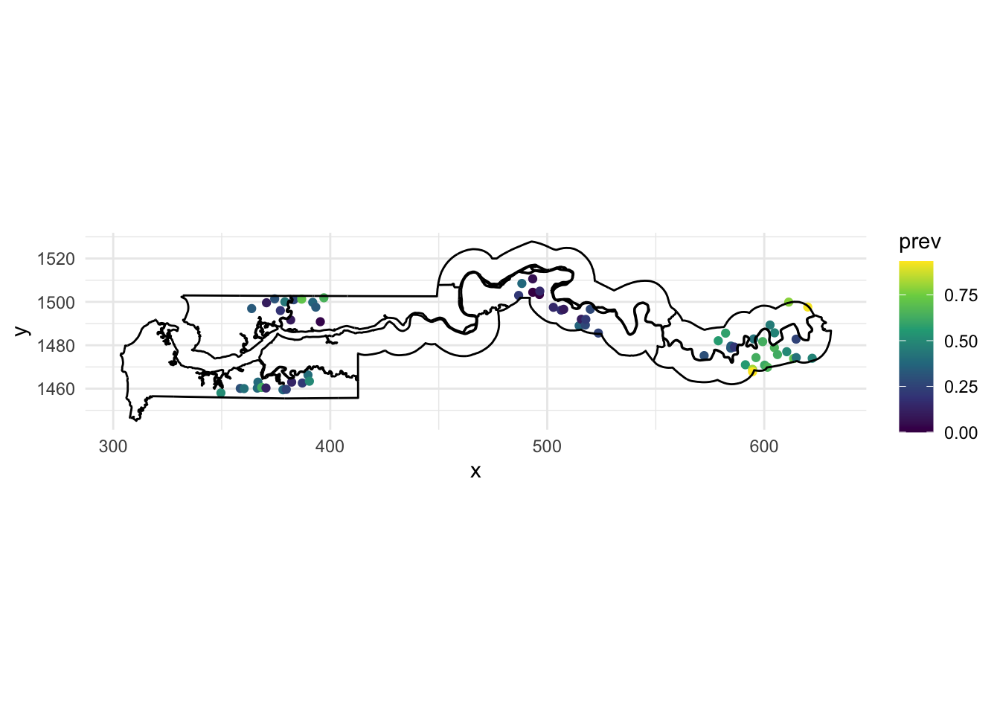
Nous utilisons le jeu de données gambia.borders du package geoR pour tracer les frontières des pays avec geom_path. Comme ces frontières sont en mètres, nous les divisons par 1000 pour obtenir la même échelle que nos points. Nous utilisons également coord_fixed pour assurer un rapport d’aspect de 1:1 entre les axes et utilisons la palette de couleur viridis, qui permet de visualiser plus facilement une variable continue par rapport à la palette par défaut dans ggplot2.
Sur la base de cette carte, il semble y avoir une corrélation spatiale dans la prévalence du paludisme, le groupe de villages de l’est montrant des valeurs de prévalence plus élevées (jaune-vert) et le groupe du milieu montrant des valeurs de prévalence plus faibles (violet).
GLMM non spatial
Pour ce premier exemple, nous allons ignorer l’aspect spatial des données et modéliser la présence du paludisme (pos) en fonction de l’utilisation d’une moustiquaire (netuse) et de la présence d’un centre de santé publique (phc). Comme nous avons une réponse binaire, nous devons utiliser un modèle de régression logistique (un GLM). Comme nous avons des prédicteurs au niveau individuel et au niveau du village et que nous nous attendons à ce que les enfants d’un même village aient une probabilité plus similaire d’avoir le paludisme même après avoir pris en compte ces prédicteurs, nous devons ajouter un effet aléatoire du village. Le résultat est un GLMM que nous ajustons en utilisant la fonction glmer du package lme4.
library(lme4)
mod_glmm <- glmer(pos ~ netuse + phc + (1 | id_village),
data = gambia, family = binomial)
summary(mod_glmm)Generalized linear mixed model fit by maximum likelihood (Laplace
Approximation) [glmerMod]
Family: binomial ( logit )
Formula: pos ~ netuse + phc + (1 | id_village)
Data: gambia
AIC BIC logLik deviance df.resid
2428.0 2450.5 -1210.0 2420.0 2031
Scaled residuals:
Min 1Q Median 3Q Max
-2.1286 -0.7120 -0.4142 0.8474 3.3434
Random effects:
Groups Name Variance Std.Dev.
id_village (Intercept) 0.8149 0.9027
Number of obs: 2035, groups: id_village, 65
Fixed effects:
Estimate Std. Error z value Pr(>|z|)
(Intercept) 0.1491 0.2297 0.649 0.5164
netuse -0.6044 0.1442 -4.190 2.79e-05 ***
phc -0.4985 0.2604 -1.914 0.0556 .
---
Signif. codes: 0 '***' 0.001 '**' 0.01 '*' 0.05 '.' 0.1 ' ' 1
Correlation of Fixed Effects:
(Intr) netuse
netuse -0.422
phc -0.715 -0.025D’après ces résultats, les variables netuse et phc sont toutes deux associées à une diminution de la prévalence du paludisme, bien que l’effet de phc ne soit pas significatif à un seuil \(\alpha = 0.05\). L’ordonnée à l’origine (0.149) est le logit de la probabilité de présence du paludisme pour un enfant sans moustiquaire et sans centre de santé publique, mais c’est l’ordonnée à l’origine moyenne pour tous les villages. Il y a beaucoup de variation entre les villages selon l’écart-type de l’effet aléatoire (0.90). Nous pouvons obtenir l’ordonnée à l’origine estimée pour chaque village avec la fonction coef:
head(coef(mod_glmm)$id_village) (Intercept) netuse phc
1 0.93727515 -0.6043602 -0.4984835
2 0.09204843 -0.6043602 -0.4984835
3 0.22500620 -0.6043602 -0.4984835
4 -0.46271089 -0.6043602 -0.4984835
5 0.13680037 -0.6043602 -0.4984835
6 -0.03723346 -0.6043602 -0.4984835Par exemple, l’ordonnée à l’origine pour le village 1 est environ 0.94, équivalente à une probabilité de 72%:
plogis(0.937)[1] 0.7184933tandis que celle pour le village 2 est équivalente à une probabilité de 52%:
plogis(0.092)[1] 0.5229838Le package DHARMa fournit une méthode générale pour vérifier si les résidus d’un GLMM sont distribués selon le modèle spécifié et s’il existe une tendance résiduelle. Il simule des réplicats de chaque observation selon le modèle ajusté et détermine ensuite un “résidu standardisé”, qui est la position relative de la valeur observée par rapport aux valeurs simulées, par exemple 0 si l’observation est plus petite que toutes les simulations, 0.5 si elle se trouve au milieu, etc. Si le modèle représente bien les données, chaque valeur du résidu standardisé entre 0 et 1 doit avoir la même probabilité, de sorte que les résidus standardisés doivent produire une distribution uniforme entre 0 et 1.
La fonction simulateResiduals effectue le calcul des résidus standardisés, puis la fonction plot trace les graphiques de diagnostic avec les résultats de certains tests.
library(DHARMa)
res_glmm <- simulateResiduals(mod_glmm)
plot(res_glmm)
Le graphique de gauche est un graphique quantile-quantile des résidus standardisés. Les résultats de trois tests statistiques sont également présentés: un test de Kolmogorov-Smirnov (KS) qui vérifie s’il y a un écart par rapport à la distribution théorique, un test de dispersion qui vérifie s’il y a une sous-dispersion ou une surdispersion et un test de valeurs aberrantes (outlier) basé sur le nombre de résidus qui sont plus extrêmes que toutes les simulations. Ici, nous obtenons un résultat significatif pour les valeurs aberrantes, bien que le message indique que ce résultat pourrait avoir un taux d’erreur de type I plus grand que prévu dans ce cas.
À droite, nous obtenons généralement un graphique des résidus standardisés (en y) en fonction du rang des valeurs prédites, afin de vérifier l’absence de tendance résiduelle. Ici, les prédictions sont regroupées par quartile, il serait donc préférable d’agréger les prédictions et les résidus par village, ce que nous pouvons faire avec la fonction recalculateResiduals.
plot(recalculateResiduals(res_glmm, group = gambia$id_village))DHARMa:testOutliers with type = binomial may have inflated Type I error rates for integer-valued distributions. To get a more exact result, it is recommended to re-run testOutliers with type = 'bootstrap'. See ?testOutliers for details
Le graphique de droite montre les points individuels, ainsi qu’une régression quantile pour le 1er quartile, la médiane et le 3e quartile. En théorie, ces trois courbes devraient être des lignes droites horizontales (pas de tendance des résidus par rapport aux prévisions). La courbe pour le 3e quartile (en rouge) est significativement différente d’une ligne horizontale, ce qui pourrait indiquer un effet systématique manquant dans le modèle.
GLMM spatial avec spaMM
Le package spaMM (modèles mixtes spatiaux) est un package R relativement récent qui permet d’effectuer une estimation approximative du maximum de vraisemblance des paramètres pour les GLM avec dépendance spatiale, modélisés soit comme un processus gaussien, soit avec un CAR (nous verrons ce dernier dans la dernière section). Le package implémente différents algorithmes, mais il existe une fonction unique fitme qui choisit l’algorithme approprié pour chaque type de modèle. Par exemple, voici le même modèle (non spatial) que nous avons vu ci-dessus, ajusté avec spaMM.
library(spaMM)
mod_spamm_glmm <- fitme(pos ~ netuse + phc + (1 | id_village),
data = gambia, family = binomial)
summary(mod_spamm_glmm)formula: pos ~ netuse + phc + (1 | id_village)
Estimation of lambda by ML (p_v approximation of logL).
Estimation of fixed effects by ML (p_v approximation of logL).
family: binomial( link = logit )
------------ Fixed effects (beta) ------------
Estimate Cond. SE t-value
(Intercept) 0.1491 0.2287 0.6519
netuse -0.6045 0.1420 -4.2567
phc -0.4986 0.2593 -1.9231
--------------- Random effects ---------------
Family: gaussian( link = identity )
--- Variance parameters ('lambda'):
lambda = var(u) for u ~ Gaussian;
id_village : 0.8151
--- Coefficients for log(lambda):
Group Term Estimate Cond.SE
id_village (Intercept) -0.2045 0.2008
# of obs: 2035; # of groups: id_village, 65
------------- Likelihood values -------------
logLik
logL (p_v(h)): -1210.016Notez que les estimés des effets fixes ainsi que la variance des effets aléatoires sont presque identiques à ceeux obtenues par glmer ci-dessus.
Nous pouvons maintenant utiliser spaMM pour ajuster le même modèle avec l’ajout de corrélations spatiales entre les villages. Dans la formule du modèle, ceci est représenté comme un effet aléatoire Matern(1 | x + y), ce qui signifie que les ordonnées à l’origine sont spatialement corrélées entre les villages suivant une fonction de corrélation de Matérn des coordonnées (x, y). La fonction de Matérn est une fonction flexible de corrélation spatiale qui comprend un paramètre de forme \(\nu\) (nu), de sorte que lorsque \(\nu = 0,5\), elle est équivalente à la corrélation exponentielle, mais quand \(\nu\) prend de grandes valeurs, elle se rapproche d’une corrélation gaussienne. Nous pourrions laisser la fonction estimer \(\nu\), mais ici nous le fixons à 0.5 avec l’argument fixed de fitme.
mod_spamm <- fitme(pos ~ netuse + phc + Matern(1 | x + y) + (1 | id_village),
data = gambia, family = binomial, fixed = list(nu = 0.5))Increase spaMM.options(separation_max=<.>) to at least 21 if you want to check separation (see 'help(separation)').summary(mod_spamm)formula: pos ~ netuse + phc + Matern(1 | x + y) + (1 | id_village)
Estimation of corrPars and lambda by ML (p_v approximation of logL).
Estimation of fixed effects by ML (p_v approximation of logL).
Estimation of lambda by 'outer' ML, maximizing logL.
family: binomial( link = logit )
------------ Fixed effects (beta) ------------
Estimate Cond. SE t-value
(Intercept) 0.06861 0.3352 0.2047
netuse -0.51719 0.1407 -3.6757
phc -0.44416 0.2052 -2.1648
--------------- Random effects ---------------
Family: gaussian( link = identity )
--- Correlation parameters:
1.nu 1.rho
0.50000000 0.05128692
--- Variance parameters ('lambda'):
lambda = var(u) for u ~ Gaussian;
x + y : 0.6421
id_village : 0.1978
# of obs: 2035; # of groups: x + y, 65; id_village, 65
------------- Likelihood values -------------
logLik
logL (p_v(h)): -1197.968Commençons par vérifier les effets aléatoires du modèle. La fonction de corrélation spatiale a un paramètre rho égal à 0.0513. Ce paramètre dans spaMM est l’inverse de la portée, donc ici la portée de la corrélation exponentielle est de 1/0.0513 ou environ 19.5 km. Il y a maintenant deux pramètres de variance, celui identifié comme x + y est la variance à longue distance (i.e. le palier) pour le modèle de corrélation exponentielle alors que celui identifié comme id_village montre la portion non corrélée de la variation entre les villages.
Si nous avions ici laissé les effets aléatoires (1 | id_village) dans la formule pour représenter la partie non spatiale de la variation entre les villages, nous pourrions également représenter ceci avec un effet de pépite dans le modèle géostatistique. Dans les deux cas, cela représenterait l’idée que même deux villages très proches l’un de l’autre auraient des prévalences de base différentes dans le modèle.
Par défaut, la fonction Matern n’a pas d’effet de pépite, mais nous pouvons en ajouter un en spécifiant une pépite non nulle dans la liste initiale des paramètres init.
mod_spamm2 <- fitme(pos ~ netuse + phc + Matern(1 | x + y),
data = gambia, family = binomial, fixed = list(nu = 0.5),
init = list(Nugget = 0.1))Increase spaMM.options(separation_max=<.>) to at least 21 if you want to check separation (see 'help(separation)').summary(mod_spamm2)formula: pos ~ netuse + phc + Matern(1 | x + y)
Estimation of corrPars and lambda by ML (p_v approximation of logL).
Estimation of fixed effects by ML (p_v approximation of logL).
Estimation of lambda by 'outer' ML, maximizing logL.
family: binomial( link = logit )
------------ Fixed effects (beta) ------------
Estimate Cond. SE t-value
(Intercept) 0.06861 0.3352 0.2047
netuse -0.51719 0.1407 -3.6757
phc -0.44416 0.2052 -2.1648
--------------- Random effects ---------------
Family: gaussian( link = identity )
--- Correlation parameters:
1.nu 1.Nugget 1.rho
0.50000000 0.23551027 0.05128692
--- Variance parameters ('lambda'):
lambda = var(u) for u ~ Gaussian;
x + y : 0.8399
# of obs: 2035; # of groups: x + y, 65
------------- Likelihood values -------------
logLik
logL (p_v(h)): -1197.968Comme vous pouvez le voir, toutes les estimations sont les mêmes, sauf que la variance de la portion spatiale (palier) est maintenant de 0.84 et que la pépite est égale à une fraction 0.235 de ce palier, soit une variance de 0.197, ce qui est identique à l’effet aléatoire id_village dans la version ci-dessus. Les deux formulations sont donc équivalentes.
Maintenant, rappelons les coefficients que nous avions obtenus pour le GLMM non spatial :
summary(mod_glmm)$coefficients Estimate Std. Error z value Pr(>|z|)
(Intercept) 0.1490596 0.2296971 0.6489399 5.163772e-01
netuse -0.6043602 0.1442448 -4.1898243 2.791706e-05
phc -0.4984835 0.2604083 -1.9142382 5.558973e-02Dans la version spatiale, les deux effets fixes se sont légèrement rapprochés de zéro, mais l’erreur-type de l’effet de phc a diminué. Il est intéressant de noter que l’inclusion de la dépendance spatiale nous a permis d’estimer plus précisément l’effet de la présence d’un centre de santé publique dans le village. Ce ne serait pas toujours le cas: pour un prédicteur qui est également fortement corrélé dans l’espace, la corrélation spatiale dans la réponse rend plus difficile l’estimation de l’effet de ce prédicteur, puisqu’il est confondu avec l’effet spatial. Cependant, pour un prédicteur qui n’est pas corrélé dans l’espace, l’inclusion de l’effet spatial réduit la variance résiduelle (non spatiale) et peut donc augmenter la précision de l’effet du prédicteur.
Le package spaMM est également compatible avec DHARMa pour les diagnostics résiduels. (Vous pouvez ignorer l’avertissement selon lequel il ne fait pas partie de la classe des modèles pris en charge, cela est dû à l’utilisation de la fonction fitme plutôt que d’une fonction d’algorithme spécifique dans spaMM).
res_spamm <- simulateResiduals(mod_spamm2)
plot(res_spamm)DHARMa:testOutliers with type = binomial may have inflated Type I error rates for integer-valued distributions. To get a more exact result, it is recommended to re-run testOutliers with type = 'bootstrap'. See ?testOutliers for detailsplot(recalculateResiduals(res_spamm, group = gambia$id_village))DHARMa:testOutliers with type = binomial may have inflated Type I error rates for integer-valued distributions. To get a more exact result, it is recommended to re-run testOutliers with type = 'bootstrap'. See ?testOutliers for detailsEnfin, bien que nous allons montrer comment calculer et visualiser des prédictions spatiales ci-dessous, nous pouvons produire une carte rapide des effets spatiaux estimés dans un modèle spaMM avec la fonction filled.mapMM.
filled.mapMM(mod_spamm2)Processus gaussiens vs. splines de lissage
Si vous connaissez bien les modèles additifs généralisés (GAM), vous avez peut-être pensé à représenter la variation spatiale de la prévalence du paludisme (comme le montre la carte ci-dessus) par une spline de lissage en 2D (en fonction de \(x\) et \(y\)) dans un GAM.
Le code ci-dessous correspond à l’équivalent GAM de notre GLMM avec processus gaussien ci-dessus, ajusté avec la fonction gam du package mgcv. L’effet spatial est représenté par la spline 2D s(x, y) alors que l’effet aléatoire non spatial de village est représenté par s(id_village, bs = "re"), qui est équivalent à (1 | id_village) dans les modèles précédents. Notez que pour la fonction gam, les variables catégorielles doivent être explicitement converties en facteurs.
library(mgcv)
gambia$id_village <- as.factor(gambia$id_village)
mod_gam <- gam(pos ~ netuse + phc + s(id_village, bs = "re") + s(x, y),
data = gambia, family = binomial)Pour visualiser la spline en 2D, nous utiliserons le package gratia.
library(gratia)
draw(mod_gam)Notez que le graphique de la spline s(x, y) (en haut à droite) ne s’étend pas trop loin des emplacements des données (les autres zones sont vides). Dans ce graphique, on peut également voir que les effets aléatoires des villages suivent la distribution gaussienne attendue (en haut à gauche).
Ensuite, nous utiliserons à la fois le GLMM spatial de la section précédente et ce GAMM pour prédire la prévalence moyenne sur une grille spatiale de points contenue dans le fichier gambia_pred.csv. Le graphique ci-dessous ajoute ces points de prédiction (en noir) sur la carte précédente des points de données.
gambia_pred <- read.csv("data/gambia_pred.csv")
ggplot(gambia_agg, aes(x = x, y = y)) +
geom_point(data = gambia_pred) +
geom_point(aes(color = prev)) +
geom_path(data = gambia.borders, aes(x = x / 1000, y = y / 1000)) +
coord_fixed() +
theme_minimal() +
scale_color_viridis_c()Pour faire des prédictions à partir du modèle GAMM à ces endroits, le code ci-dessous effectue les étapes suivantes:
Tous les prédicteurs du modèle doivent se trouver dans le tableau de données de prédiction, nous ajoutons donc des valeurs constantes de netuse et phc (toutes deux égales à 1) pour tous les points. Ainsi, nous ferons des prédictions sur la prévalence du paludisme dans le cas où un moustiquaire est utilisée et où un centre de santé publique est présent. Nous ajoutons également un id_village constant, bien qu’il ne soit pas utilisé dans les prédictions (voir ci-dessous).
Nous appelons la fonction
predictà la sortie degampour produire des prédictions aux nouveaux points de données (argumentnewdata), en incluant les erreurs-types (se.fit = TRUE) et en excluant les effets aléatoires du village, donc la prédiction est faite pour un “village moyen”. L’objet résultantgam_predaura des colonnesfit(prédiction moyenne) etse.fit(erreur-type). Ces prédictions et erreurs-types sont sur l’échelle du lien (logit).Nous rattachons le jeu de données de prédiction original à
gam_predaveccbind.Nous ajoutons des colonnes pour la prédiction moyenne et les limites de l’intervalle de confiance à 50% (moyenne \(\pm\) 0.674 erreur-type), converties de l’échelle logit à l’échelle de probabilité avec
plogis. Nous choisissons un intervalle de 50% car un intervalle de 95% peut être trop large ici pour contraster les différentes prédictions sur la carte à la fin de cette section.
gambia_pred <- mutate(gambia_pred, netuse = 1, phc = 1, id_village = 1)
gam_pred <- predict(mod_gam, newdata = gambia_pred, se.fit = TRUE,
exclude = "s(id_village)")
gam_pred <- cbind(gambia_pred, as.data.frame(gam_pred))
gam_pred <- mutate(gam_pred, pred = plogis(fit),
lo = plogis(fit - 0.674 * se.fit), # 50% CI
hi = plogis(fit + 0.674 * se.fit))Note : La raison pour laquelle nous ne faisons pas de prédictions directement sur l’échelle de probabilité (réponse) est que la formule normale des intervalles de confiance s’applique plus précisément sur l’échelle logit. L’ajout d’un certain nombre d’erreurs-types autour de la moyenne sur l’échelle de probabilité conduirait à des intervalles moins précis et peut-être même à des intervalles de confiance en dehors de la plage de valeurs possible (0, 1) pour une probabilité.
Nous appliquons la même stratégie pour faire des prédictions à partir du GLMM spatial avec spaMM. Il y a quelques différences dans la méthode predict par rapport au cas du GAMM.
L’argument
binding = "fit"signifie que les prédictions moyennes (colonnefit) seront attachées à l’ensemble de données de prédiction et retournées sous forme de tableau de donnéesspamm_pred.L’argument
variances = list(linPred = TRUE)indique àpredictde calculer la variance du prédicteur linéaire (donc le carré de l’erreur-type). Cependant, il apparaît comme un attributpredVardans le tableau de données de sortie plutôt que dans une colonnese.fit, donc nous le déplaçons vers une colonne sur la ligne suivante.
spamm_pred <- predict(mod_spamm, newdata = gambia_pred, type = "link",
binding = "fit", variances = list(linPred = TRUE))
spamm_pred$se.fit <- sqrt(attr(spamm_pred, "predVar"))
spamm_pred <- mutate(spamm_pred, pred = plogis(fit),
lo = plogis(fit - 0.674 * se.fit),
hi = plogis(fit + 0.674 * se.fit))Enfin, nous combinons les deux ensembles de prédictions sous la forme de différentes rangées d’un tableau de données pred_all avec bind_rows. Le nom du tableau de données d’où provient chaque prédiction (gam ou spamm) apparaîtra dans la colonne “model” (argument .id). Pour simplifier la production du prochain graphique, nous utilisons ensuite pivot_longer dans le package tidyr pour changer les trois colonnes “pred”, “lo” et “hi” en deux colonnes, “stat” et “value” (pred_tall a donc trois rangées pour chaque rangée dans pred_all).
pred_all <- bind_rows(gam = gam_pred, spamm = spamm_pred, .id = "model")
library(tidyr)
pred_tall <- pivot_longer(pred_all, c(pred, lo, hi), names_to = "stat",
values_to = "value")Une fois ces étapes franchies, nous pouvons enfin examiner les cartes de prédiction (moyenne, limites inférieure et supérieure de l’intervalle de confiance à 50 %) à l’aide d’un graphique ggplot. Les points de données originaux sont indiqués en rouge.
ggplot(pred_tall, aes(x = x, y = y)) +
geom_point(aes(color = value)) +
geom_point(data = gambia_agg, color = "red", size = 0) +
coord_fixed() +
facet_grid(stat~model) +
scale_color_viridis_c() +
theme_minimal()Bien que les deux modèles s’accordent à dire que la prévalence est plus élevée près du groupe de villages de l’est, le GAMM estime également une prévalence plus élevée en quelques points (bord ouest et autour du centre) où il n’y a pas de données. Il s’agit d’un artefact de la forme de la spline autour des points de données, puisqu’une spline est censée correspondre à une tendance globale, bien que non linéaire. En revanche, le modèle géostatistique représente l’effet spatial sous forme de corrélations locales et revient à la prévalence moyenne globale lorsqu’il est éloigné de tout point de données, ce qui est une supposition plus sûre. C’est l’une des raisons pour lesquelles il est préférable de choisir un modèle géostatistique / processus gaussien dans ce cas.
Méthodes bayésiennes pour les GLMM avec processus gaussiens
Les modèles bayésiens fournissent un cadre flexible pour exprimer des modèles avec une structure de dépendance complexe entre les données, y compris la dépendance spatiale. Cependant, l’ajustement d’un modèle de processus gaussien avec une approche entièrement bayésienne peut être lent, en raison de la nécessité de calculer une matrice de covariance spatiale entre toutes les paires de points à chaque itération.
La méthode INLA (pour integrated nested Laplace approximation) effectue un calcul approximatif de la distribution postérieure bayésienne, ce qui la rend adaptée aux problèmes de régression spatiale. Nous ne l’abordons pas dans ce cours, mais je recommande le manuel de Paula Moraga (dans la section des références ci-dessous) qui fournit des exemples concrets d’utilisation de la méthode INLA pour divers modèles de données géostatistiques et aréales, dans le contexte de l’épidémiologie, y compris des modèles avec une dépendance à la fois spatiale et temporelle. Le livre présente les mêmes données sur le paludisme en Gambie comme exemple d’un ensemble de données géostatistiques, ce qui a inspiré son utilisation dans ce cours.
30 GLMM avec autorégression spatiale
Nous revenons au dernier exemple de la partie précédente, où nous avions modélisé le taux de cas de COVID-19 (cas / 1000) pour les divisions administratives du réseau de la santé (RLS) au Québec en fonction de leur densité de population. Le taux est donné par la colonne “taux_1k” dans le shapefile rls_covid.
library(sf)
rls_covid <- read_sf("data/rls_covid.shp")
rls_covid <- rls_covid[!is.na(rls_covid$dens_pop), ]
plot(rls_covid["taux_1k"])
Auparavant, nous avions modélisé le logarithme de ce taux comme une fonction linéaire du logarithme de la densité de population, la variance résiduelle étant corrélée entre les unités voisines via une structure CAR (autorégression conditionnelle), comme le montre le code ci-dessous.
library(spdep)
library(spatialreg)
rls_nb <- poly2nb(rls_covid)
rls_w <- nb2listw(rls_nb, style = "B")
car_lm <- spautolm(log(taux_1k) ~ log(dens_pop), data = rls_covid,
listw = rls_w, family = "CAR")
summary(car_lm)
Call: spautolm(formula = log(taux_1k) ~ log(dens_pop), data = rls_covid,
listw = rls_w, family = "CAR")
Residuals:
Min 1Q Median 3Q Max
-1.201858 -0.254084 -0.053348 0.281482 1.427053
Coefficients:
Estimate Std. Error z value Pr(>|z|)
(Intercept) 1.702068 0.168463 10.1035 < 2.2e-16
log(dens_pop) 0.206623 0.032848 6.2903 3.169e-10
Lambda: 0.15762 LR test value: 23.991 p-value: 9.6771e-07
Numerical Hessian standard error of lambda: 0.0050486
Log likelihood: -80.68953
ML residual variance (sigma squared): 0.2814, (sigma: 0.53048)
Number of observations: 95
Number of parameters estimated: 4
AIC: 169.38Rappel: La fonction poly2nb du package spdep crée une liste de voisins basée sur les polygones limitrophes dans un shapefile, puis nb2listw la convertit en une liste de poids, ici des poids binaires (style = "B") de sorte que chaque région limitrophe reçoive le même poids de 1 dans le modèle autorégressif.
Au lieu d’utiliser les taux, il serait possible de modéliser directement les cas avec une régression de Poisson, qui est appropriée pour les données de comptage. Pour tenir compte du fait que si le risque par personne était égal, les cas seraient proportionnels à la population, nous pouvons ajouter la population de l’unité pop comme offset dans la régression de Poisson. Par conséquent, le modèle ressemblerait à : cas ~ log(dens_pop) + offset(log(pop)). Notez que puisque la régression de Poisson utilise un lien logarithmique, ce modèle avec log(pop) comme offset suppose que log(cas / pop) (donc le taux logarithmique) est proportionnel à log(dens_pop), tout comme le modèle linéaire ci-dessus, mais il a l’avantage de modéliser la variabilité des données brutes (le nombre de cas) directement avec une distribution de Poisson.
Nous n’avons pas la population dans ces données, mais nous pouvons l’estimer à partir des cas et du taux (cas / 1000) comme suit:
rls_covid$pop <- rls_covid$cas / rls_covid$taux_1k * 1000Pour définir un modèle CAR dans spaMM, nous avons besoin d’une matrice de poids plutôt que d’une liste de poids comme dans le package spatialreg. Heureusement, le package spdep comprend également une fonction nb2mat pour convertir la liste des voisins en une matrice de poids, là encore en utilisant des poids binaires. Pour éviter un avertissement dans R, nous spécifions que les noms des lignes et des colonnes de cette matrice doivent être égaux aux identifiants associés à chaque unité (RLS_code). Ensuite, nous ajoutons un terme adjacency(1 | RLS_code) au modèle pour spécifier que la variation résiduelle entre les différents groupes définis par RLS_code est spatialement corrélée avec une structure CAR (ici, chaque groupe n’a qu’une observation puisque nous avons un point de données par unité RLS).
library(spaMM)
rls_mat <- nb2mat(rls_nb, style = "B")
rownames(rls_mat) <- rls_covid$RLS_code
colnames(rls_mat) <- rls_covid$RLS_code
rls_spamm <- fitme(cas ~ log(dens_pop) + offset(log(pop)) + adjacency(1 | RLS_code),
data = rls_covid, adjMatrix = rls_mat, family = poisson)
summary(rls_spamm)formula: cas ~ log(dens_pop) + offset(log(pop)) + adjacency(1 | RLS_code)
Estimation of corrPars and lambda by ML (p_v approximation of logL).
Estimation of fixed effects by ML (p_v approximation of logL).
Estimation of lambda by 'outer' ML, maximizing logL.
family: poisson( link = log )
------------ Fixed effects (beta) ------------
Estimate Cond. SE t-value
(Intercept) -5.1618 0.16855 -30.625
log(dens_pop) 0.1999 0.03267 6.119
--------------- Random effects ---------------
Family: gaussian( link = identity )
--- Correlation parameters:
1.rho
0.1576605
--- Variance parameters ('lambda'):
lambda = var(u) for u ~ Gaussian;
RLS_code : 0.266
# of obs: 95; # of groups: RLS_code, 95
------------- Likelihood values -------------
logLik
logL (p_v(h)): -709.3234Notez que le coefficient de corrélation spatiale rho (0.158) est similaire à la quantité équivalente dans le modèle spautolm ci-dessus, où il était appelé Lambda. L’effet de log(dens_pop) est également d’environ 0.2 dans les deux modèles.
Référence
Moraga, Paula (2019) Geospatial Health Data: Modeling and Visualization with R-INLA and Shiny. Chapman & Hall/CRC Biostatistics Series. Disponible en ligne: https://www.paulamoraga.com/book-geospatial/.